隐喻数据冲突 · 60组配对 后台执行中 ：生成完成 69/120。三类各20组；37张新参考、23张旧参考全部重新生成。旧24组结果单独保留。
两条件保持主题、统计指标与语义角色一致，再改变数据。分别评估数值几何、关键结构、主题意义和微小标记可辨性。未评与技术异常不计为图像失败；完整配对差值及区间在结束后解释。
图片为原尺寸无损WebP，解码像素与原PNG一致。全部原PNG、素材、提示词和逐轮源码保留在07目录。点击图片打开原尺寸。
冻结实验方案 · 实时汇总 · 结果CSV · 问题与异常 · 旧24组补查
类型 指标 完整配对 相近支持 冲突支持 差值（百分点） 类别数 数值几何 9/20 9 9 0.0 类别数 关键结构 9/20 8 8 0.0 类别数 主题意义 9/20 9 9 0.0 类别数 共同充分支持 9/20 8 8 0.0 趋势形状 数值几何 8/20 8 8 0.0 趋势形状 关键结构 8/20 8 8 0.0 趋势形状 主题意义 8/20 8 8 0.0 趋势形状 共同充分支持 8/20 8 8 0.0 数值范围 数值几何 8/20 8 8 0.0 数值范围 关键结构 8/20 8 6 -25.0 数值范围 主题意义 8/20 8 8 0.0 数值范围 共同充分支持 8/20 8 6 -25.0
类别 全部 类别数 趋势形状 数值范围 只看问题或异常
E01 · 固体燃料进口来源份额 /M005 写实煤块堆在共同地面，投影独立于煤堆。
参考图、共同要求与冻结变换 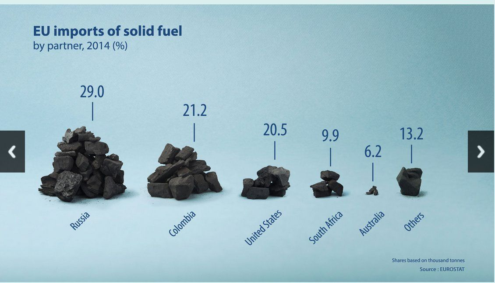
{'method': 'split interior parent categories; same total and extrema; explicit semantic parent retained', 'before_count': 6, 'after_count': 9, 'planned_count': 9, 'parent_totals_preserved': True}
共同设计 · 隐喻关键结构与意义 相近数据 · ok 输入数据
第1轮 首轮 · ok 该轮修改与源码 首版：六个生成煤体按统一高度比例置于共同地面，绑定全部份额和伙伴标签
轮次记录 · 绘图代码 旧质量：pass；数值几何：True；结构：pass；意义：pass；微小标记：pass
独立评价与具体证据 六项数值、绑定和煤体高度准确，煤堆直接承载数据，共同地面及独立阴影关系保留。未发现实质缺陷。review.json已保存并通过schema校验；未运行submit.py。
completeness · pass ：六类别、单一份额系列、合成声明、指标、单位与总计完整。
numeric_text · pass ：28.6%、22.4%、19.7%、10.1%、5.9%、13.3%逐项符合输入，Total 100.0%正确。
binding · pass ：百分比和短引线位于对应煤堆上方，Partner标签位于下方，顺序正确且无错绑。
geometry · pass ：实测煤体高度286、224、197、101、59、133像素符合共同线性尺度，阴影未计入高度。
source · pass ：已查看原始生图素材和裁切煤体，其轮廓纹理对应最终主体；源码根据输入数据缩放完整RGBA煤体并绘制文字。
integration · pass ：完整煤体从最高点至地面接触处的高度承担编码，物体并非旁置装饰；图面明确块数、脚印和阴影不编码。
readability · pass ：主题、指标、类别父类、六组标签、单位和编码说明清楚，无明显遮挡或裁切。
critical_structure · pass ：煤块相互接触并向上堆叠，六组底部沿共同地面；浅阴影位于煤体后下方，与数据边界可区分。
semantic_meaning · pass ：标题表达固体燃料进口份额，副标题明确占总进口固体燃料质量的百分比，BY IMPORT PARTNER说明类别角色。
reference_meaning · partial ：保留按伙伴比较进口质量份额及煤堆承载关系；EU、2014和真实国家改为合成伙伴，属于冻结输入允许的改编。
small_mark_visibility · pass ：最小E约174像素宽、59像素高，仍可辨认煤块重叠、连续堆体与地面接触；高度准确，未人为放大。
未观察到当前主题、指标或数据承载关系的输出丢失。真实地区、年份和国家身份的减少属于输入允许的合成改编，reference_meaning的partial不构成生成缺陷。约1像素边缘不确定性归于栅格分辨率。
完整评审 代码复现像素一致：False；完整共同支持：False
首次评审状态 第2轮 最终 · ok 该轮修改与源码 离线依赖整理：渲染直接读取冻结brief/data/core，参考图和入口文件只参与可选来源哈希；保持版面与数据几何
轮次记录 · 绘图代码 旧质量：pass；数值几何：True；结构：pass；意义：pass；微小标记：pass
独立评价与具体证据 六项数值、绑定和煤体高度准确，煤堆直接承载数据，共同地面及独立阴影关系保留。未发现实质缺陷。review.json已保存并通过schema校验；未运行submit.py。
completeness · pass ：六类别、单一份额系列、合成声明、指标、单位与总计完整。
numeric_text · pass ：28.6%、22.4%、19.7%、10.1%、5.9%、13.3%逐项符合输入，Total 100.0%正确。
binding · pass ：百分比和短引线位于对应煤堆上方，Partner标签位于下方，顺序正确且无错绑。
geometry · pass ：实测煤体高度286、224、197、101、59、133像素符合共同线性尺度，阴影未计入高度。
source · pass ：已查看原始生图素材和裁切煤体，其轮廓纹理对应最终主体；源码根据输入数据缩放完整RGBA煤体并绘制文字。
integration · pass ：完整煤体从最高点至地面接触处的高度承担编码，物体并非旁置装饰；图面明确块数、脚印和阴影不编码。
readability · pass ：主题、指标、类别父类、六组标签、单位和编码说明清楚，无明显遮挡或裁切。
critical_structure · pass ：煤块相互接触并向上堆叠，六组底部沿共同地面；浅阴影位于煤体后下方，与数据边界可区分。
semantic_meaning · pass ：标题表达固体燃料进口份额，副标题明确占总进口固体燃料质量的百分比，BY IMPORT PARTNER说明类别角色。
reference_meaning · partial ：保留按伙伴比较进口质量份额及煤堆承载关系；EU、2014和真实国家改为合成伙伴，属于冻结输入允许的改编。
small_mark_visibility · pass ：最小E约174像素宽、59像素高，仍可辨认煤块重叠、连续堆体与地面接触；高度准确，未人为放大。
未观察到当前主题、指标或数据承载关系的输出丢失。真实地区、年份和国家身份的减少属于输入允许的合成改编，reference_meaning的partial不构成生成缺陷。约1像素边缘不确定性归于栅格分辨率。
完整评审 代码复现像素一致：True；完整共同支持：True
首次评审状态 冲突数据 · ok 输入数据
第1轮 首轮 / 最终 · ok 该轮修改与源码 Initial composition: nine generated coal piles, shared 0–30% height scale, exact synthetic labels and separate shadows
轮次记录 · 绘图代码 旧质量：pass；数值几何：True；结构：pass；意义：pass；微小标记：pass
独立评价与具体证据 通过。九项数值、类别绑定、线性高度编码及煤堆承载关系均保留；素材实质可见，当前统计主题和单位明确。
completeness · pass ：单系列九个类别全部出现，顺序为A、B两子类、C两子类、D、E、F两子类。
numeric_text · pass ：九项显示28.6%、11.2%、11.2%、9.85%、9.85%、10.1%、5.9%、6.65%、6.65%，与输入一致；总额100%正确。
binding · pass ：每堆上方数值以短竖线对应本堆，下方为其类别；B、C、F均保留父类名称和subcategory 1/2。
geometry · pass ：九堆共享线性0–30%刻度和底线；独立像素测量的误差远低于满量程3%及3个百分点容差，等值煤堆仅有像素级边缘差异。
source · pass ：已查看raw_01.png九堆原素材及coal_07.png；可辨认的煤块排列、断面与纹理进入成图主体。render.py实际载入煤体素材并控制尺寸和文字。
integration · pass ：煤体自身从地面到堆顶的完整高度承担份额编码，无另设柱体替代；地面投影与煤体分离，图面注明数量、占地和阴影不编码。
readability · pass ：主题、合成标识、质量份额指标、百分比单位、全部类别及子类、刻度和口径说明均可读，无必要标签相互遮挡。
critical_structure · pass ：每组由相互接触、前后叠压的写实煤块组成；底部落在共同地面，淡投影位于底部后方及周围，未延伸为煤体高度。
semantic_meaning · pass ：标题说明固体燃料进口份额；副标题明确总进口固体燃料质量占比，类别说明为合成贸易伙伴及子类，脚注明确子类是父类内互斥部分。
reference_meaning · partial ：参考的按伙伴进口质量份额和煤堆表达仍在；原EU、2014及真实国家的统计语境依冻结输入改为合成伙伴与子类，属于许可的输入改编。
small_mark_visibility · pass ：原分辨率下最小5.9%煤体约70像素高，仍能看清多个煤块、完整堆形及着地关系；两项6.65%煤体约79–80像素高，未仅以数值标签代替几何。
未发现输出造成的主题或指标含义丢失。参考中EU/2014真实贸易语境转为合成伙伴及子类别由冻结输入规定，reference_meaning的部分保留不归为生成缺陷。像素边缘存在有限测量不确定性，未妨碍最小煤堆身份和高度判读。
完整评审 代码复现像素一致：False；完整共同支持：False
首次评审状态 E02 · 各地区天然气储量 /M007 正面圆肩直身气瓶，保留红色护框、阀门、瓶肩与右侧体积阴影。彩色数据带构成瓶身；类别数、引线与徽章数量跟随输入，可疏排外置标签。
参考图、共同要求与冻结变换 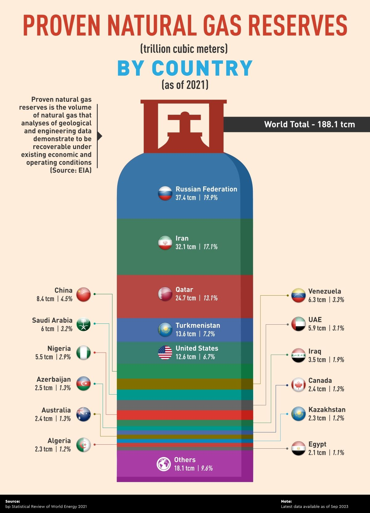
{'method': 'split interior parent categories; same total and extrema; explicit semantic parent retained', 'before_count': 18, 'after_count': 27, 'planned_count': 27, 'parent_totals_preserved': True}
共同设计 · 隐喻关键结构与意义 相近数据 · ok 输入数据
第1轮 首轮 · ok 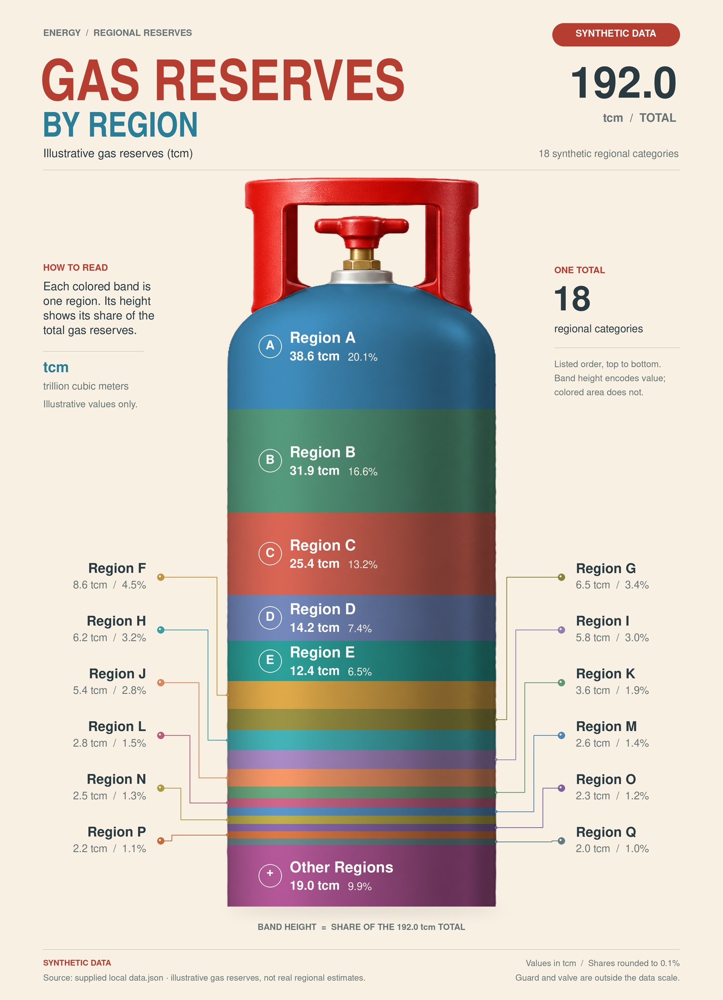
该轮修改与源码 First data-bound cylinder composition with generated metal body and guard, 18 exact-proportion bands and labeled leaders
轮次记录 · 绘图代码 旧质量：pass；数值几何：True；结构：pass；意义：pass；微小标记：pass
独立评价与具体证据 18个地区的数值、顺序、标签绑定及带高均符合当前数据。气瓶结构与数据融合关系完整，未见实质可见缺陷。review.json已保存并通过schema校验；未运行submit.py。
completeness · pass ：Region A至Q及Other Regions共18项、18条连续色带均存在；总量192.0 tcm完整显示。
numeric_text · pass ：18项可见数值均与data.json一致；显示的百分比符合除以192后保留一位小数。
binding · pass ：A至E及Other Regions标在对应带内；F至Q的12条引线分别连接对应色带，顺序正确，未见错绑。
geometry · pass ：数据高度约1240 px，各带份额偏差最大约0.083个百分点，低于3个百分点容差；阴影未移动水平分界。
source · pass ：图面注明合成数据及本地data.json来源。已查看原始及派生素材，其护框、阀门、金属纹理和阴影在成图主体中可辨认。
integration · pass ：彩色带连续构成同一个圆肩直身瓶体，纹理跨带延续，护框和阀门与瓶肩连接，未见破坏融合关系的错位。
readability · pass ：主题、合成声明、指标、单位释义、总量及18组类别数值清晰；外置标签无明显重叠，高度编码说明可读。
critical_structure · pass ：红色横梁和立柱围住阀门，阀杆通过瓶口接入圆肩；立柱与肩部接触，下方直身由18条水平色带组成，右侧阴影表现体积。
semantic_meaning · pass ：标题、Illustrative gas reserves (tcm)、单位释义及合成声明明确当前主题和指标；地区角色、总量及份额解释均可理解。
reference_meaning · partial ：天然气储量按地理类别汇成气瓶的关系保留。真实国家、已探明口径和日期按冻结输入改编为合成地区示例储量，属于输入授权。
small_mark_visibility · pass ：底部小带仍是可区分的瓶身区域，各有独立引线。最小Region Q带约12–13 px，目标12.92 px，未消失或仅剩数字标签。
当前地区角色、储量指标、单位和份额解释未见输出丢失。真实国家统计改为合成地区示例属于冻结输入允许的改编，参考意义部分保留不构成输出缺陷。最小带保留可见瓶身关系，其精细相对测量受像素分辨率限制。
完整评审 代码复现像素一致：True；完整共同支持：True
首次评审状态 第2轮 最终 · ok 该轮修改与源码 Clarify the natural-gas topic and the shoulder-to-base height scale; retain verified quantitative geometry
轮次记录 · 绘图代码 旧质量：pass；数值几何：True；结构：pass；意义：pass；微小标记：pass
独立评价与具体证据 18类数值、标签绑定和带高比例符合要求；生成素材实质构成气瓶，关键连接与数据融合关系保留。参考中的真实国家统计改为合成地区统计，属于输入许可改编。
completeness · pass ：Region A至Q及Other Regions共18类全部出现，18条连续色带按输入顺序从上到下排列；系列、单位与总量完整。
numeric_text · pass ：图上18个储量数值逐项对应输入，包含Q的2.0与Other Regions的19.0；总量192.0 tcm正确，各百分比符合数值除以192后保留一位小数。
binding · pass ：A至E和Other Regions文字在各自色带内；F至Q的外置标签引线可追踪且无交叉，像素检测的12个水平连接段均落在相应色带高度范围内。
geometry · pass ：实测共同高度约1240px，18条色带的最大高度偏差约0.083个百分点，低于3个百分点容差。瓶肩与瓶底纳入高度，护框和阀门在尺度外；右侧阴影未移动水平分界。
source · pass ：已查看raw_01.png，红色护框纹理、阀轮、黄铜颈部、金属圆肩和右侧暗部可与成图对应。prepare_assets.py分离部件，render.py实际加载这些素材并按输入重着色，素材使用覆盖主体。
integration · pass ：数据带直接构成同一个气瓶瓶身，沿共同轮廓连续堆叠；材质和右侧阴影跨越色带延续，阀门经瓶口连接圆肩，未见破坏结构的遮挡或接缝。
readability · pass ：主题、SYNTHETIC DATA、系列、tcm释义、总量及18类标签均可读；外置标签与细带分开排布，未见必需文字裁切或重叠。
critical_structure · pass ：红色护框包围阀轮，阀轮下方黄铜杆和银色瓶口连接圆肩；圆肩向两侧过渡到直身，右侧暗部表现体积。实际承载数值的是瓶肩最高线至平底之间的连续水平色带高度。
semantic_meaning · pass ：GAS RESERVES BY REGION与Illustrative gas reserves (tcm)明确地区储量主题、指标和单位；合成标识及示意说明清楚，18个地区构成192.0 tcm总量，图面说明带高表示份额、面积不编码数值。
reference_meaning · partial ：参考的天然气储量主题、地理类别汇总与气瓶色带融合关系保留。真实国家、已探明口径和2021时点按冻结输入改为示意地区数据，原统计语境仅部分保留；这是许可的输入改编。
small_mark_visibility · pass ：按原始分辨率检查，最小Q带仍是贯穿瓶身的独立灰蓝色窄带，约12至13px高，引线位于其内部；P、O等相邻小带也能分开辨认，保持连续瓶身关系。
真实国家及历史统计口径的变化归于冻结输入允许的合成地区改编，不归因于输出丢失。当前主题、类别角色、单位和总量解释均保留，气瓶身份与数据构成瓶身的融合关系可见；最小带的亚像素精度受栅格分辨率限制。
完整评审 代码复现像素一致：True；完整共同支持：True
首次评审状态 冲突数据 · ok 输入数据
第1轮 首轮 · ok 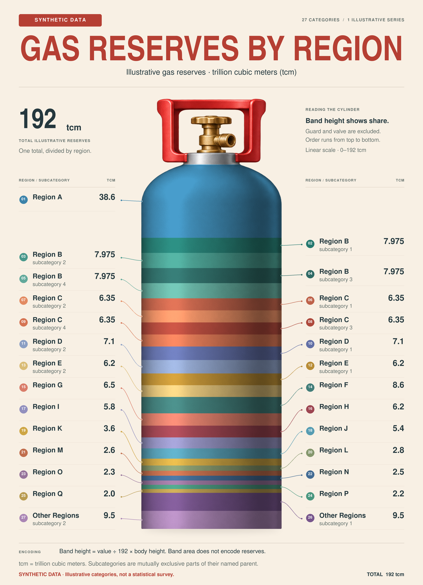
该轮修改与源码 Initial captured composition: generated gas-cylinder material, 27 exact axial bands, semantic external labels
轮次记录 · 绘图代码 旧质量：pass；数值几何：True；结构：pass；意义：pass；微小标记：pass
独立评价与具体证据 27类数据、标签绑定和轴向高度编码均符合冻结要求；气瓶部件连接、数据与瓶身融合、生成材质的可见使用均得到保留。未发现可确认的输出缺陷。
completeness · pass ：27个编号、27条色带与全部地区/子类别均出现，单一Illustrative gas reserves系列及tcm单位完整。
numeric_text · pass ：27项数值与data.json逐项相符，包括四项7.975、四项6.35、Region Q的2.0及两项Other Regions的9.5；总量192 tcm正确。
binding · pass ：编号按输入顺序由瓶顶至瓶底排列；左右标签通过独立引线接到对应色带内部，父类与子类别同组显示，未见交叉误绑。
geometry · pass ：像素检测确认27带按共同瓶身高度连续堆叠，最大份额偏差约0.0521个百分点，远小于3个百分点；右侧阴影未移动水平分界。
source · pass ：raw_01.png的红护框、金色阀门、圆肩和金属明暗与成图对应。prepare_assets.py裁出硬件及瓶身素材，render.py实际合成硬件并以瓶身材质和透明轮廓着色，生成素材构成可见主体。
integration · pass ：数据色带直接组成同一气瓶的圆肩和直身表面；生成阴影贯穿色带，护框和阀门接在瓶肩上方并排除于数据高度。代码以累计数值控制分界和引线锚点。
readability · pass ：原分辨率下主题、合成提示、全部类别、数值、单位和编码说明可读；外置标签无明显遮挡或重叠。
critical_structure · pass ：红护框两端连接银色瓶颈，金色阀门位于框内并落在瓶颈上；圆肩连接两侧直壁，右侧有体积阴影。所有水平数据带包含于共同瓶身轮廓，保持部件连接和融合关系。
semantic_meaning · pass ：GAS RESERVES BY REGION、Illustrative gas reserves及trillion cubic meters (tcm)明确表达当前主题、指标和单位；说明子类别是父地区的互斥部分，并声明是合成示例而非统计调查。
reference_meaning · partial ：保留天然气储量、体积单位和瓶身分带的数据融合；原图按国家的已探明储量及2021口径由冻结输入明确改为合成地区示例。这是允许的输入改编，不是生成器语义丢失。
small_mark_visibility · pass ：底部小值色带仍为可辨认的连续瓶身区域，边界与各自引线可区分；最小Region Q约13像素，与目标12.917像素相符，未见为识别而放大或吞并相邻带。
原参考的真实国家、已探明统计和日期口径被输入主动替换为合成地区储量；reference_meaning的partial归于这一允许改编。输出保留当前地区/子类别、储量指标、体积单位、互斥部分解释和气瓶数据融合，未发现输出造成的核心语义损失。细带判断基于原分辨率像素与可见边界，保留约±1像素定位限制。
完整评审 代码复现像素一致：True；完整共同支持：True
首次评审状态 第2轮 最终 · ok 该轮修改与源码 Improve light-badge numeral contrast and leader visibility; retain all data band geometry and exact labels
轮次记录 · 绘图代码 旧质量：pass；数值几何：True；结构：pass；意义：pass；微小标记：pass
独立评价与具体证据 27类数据、数值及标签绑定完整准确。连续彩带直接构成气瓶瓶身，保留护框、阀门、圆肩和右侧阴影；像素测量符合高度比例要求，小值带仍可见。未发现需列为问题的可见缺陷。
completeness · pass ：27个类别、01–27编号、27条色带及单一Illustrative gas reserves系列均存在；Region B/C/D/E及Other Regions的全部子类别保留。
numeric_text · pass ：逐项核对27个数值与输入一致，包括四个7.975、四个6.35及两个9.5；总量192正确，tcm单位及全称明确。
binding · pass ：两侧标签以编号、颜色及引线连接对应带内位置，顺序自上而下与输入一致；各子类别显示父地区名，未见交叉误绑。
geometry · pass ：肩顶y=560至底部y=1800连续堆叠；27带高度份额最大测量偏差约0.052个百分点。护框和阀门位于数据高度之外，阴影未移动水平分界。
source · pass ：raw_01.png中的红色护框、黄铜阀门、银色瓶颈和瓶身纹理在成图中有明确对应。prepare_assets.py裁出部件，render.py读取这些素材并按data计算色带和文字，素材用途实质且可见。
integration · pass ：彩带受同一圆肩直身轮廓裁切，承接共同表面纹理及右侧阴影，数据带本身构成瓶身；阀门经瓶颈接于瓶肩，护框围绕阀门，无破坏结构的遮挡或接缝。
readability · pass ：原分辨率下标题、SYNTHETIC DATA、总量、单位、全部类别、子类别及数值可读，外置标签未重叠；高度编码及互斥子类别说明完整。
critical_structure · pass ：正面气瓶具有红色护框、框内阀门、相接瓶颈、圆肩和直身，右侧明暗体现体积。27条水平彩带连续占据瓶身从肩顶至底部，实际承载数据的是各带轴向高度。
semantic_meaning · pass ：图面明确为各地区天然气储量，标出Illustrative gas reserves及trillion cubic meters (tcm)。说明一个总量按地区分割、子类别为父类的互斥部分，并明确为合成示例而非统计调查。
reference_meaning · partial ：保留天然气储量、体积单位及气瓶与数据融合的关系；参考图的真实国家、已探明口径和年份未沿用，这是冻结输入明确改为合成地区示例所致，不归为输出缺陷。
small_mark_visibility · pass ：Region K至Q各带约23、18、17、16、15、14、13像素高，原分辨率下均可区分、跨越瓶身并承接表面阴影；引线落在各自带内，未见为识别而抬高最小值。
未发现输出导致的主题、类别角色或数据承载关系丢失。参考意义的部分保留源自允许的输入改编：真实国家的已探明储量改为合成地区的示例储量，旧年份及来源不应强行移植。微小色带的剩余精度不确定性来自像素分辨率，不影响其作为瓶身连续部分的可见关系。
完整评审 代码复现像素一致：True；完整共同支持：True
首次评审状态 E03 · 各地区森林面积份额 /M013 近俯视略呈椭圆的写实树干横截面，保留同心年轮、裂缝、粗糙树皮与软投影。数据扇区直接融合木材表面，全部类别用外围引线标注。
参考图、共同要求与冻结变换 {'method': 'split interior parent categories; same total and extrema; explicit semantic parent retained', 'before_count': 17, 'after_count': 26, 'planned_count': 26, 'parent_totals_preserved': True}
共同设计 · 隐喻关键结构与意义 相近数据 · ok 输入数据
第1轮 首轮 · ok 该轮修改与源码 First complete composition: normalized generated wood, exact share sectors, and external region labels
轮次记录 · 绘图代码 旧质量：pass；数值几何：True；结构：partial；意义：pass；微小标记：pass
独立评价与具体证据 数据、标签与当前主题保留，几何未见超容差错误。局部着色跨入树皮，属于轻微边界错位。已保存review.json并校验schema；未运行submit.py。
completeness · pass ：A至P及Remaining共17项完整，主题、系列、单位、合成提示和统计口径均显示。
numeric_text · pass ：全部百分数与输入一致，包括两个1.0%和Remaining 25.6%。
binding · pass ：从12点顺时针依次为A至P及Remaining，引线端点对应各自色带；未见错绑。
geometry · pass ：像素份额及去投影色界均在3个百分点容差内，最小项实际角宽也与目标相符。
source · pass ：原始及处理素材中的年轮、裂缝和树皮实质构成最终主体；源码读取素材并控制定量几何与文字。
integration · pass ：扇区直接承载于木面，年轮和裂缝跨色界连续；树皮环绕切面，投影位于物体下方。
readability · pass ：全部类别及数值可读，标题、合成提示、百分比单位和底部口径说明完整。
critical_structure · partial ：椭圆木面、髓心、年轮、裂缝、树皮、投影及引线均保留；右上和左下局部着色跨入树皮，包含边界不完全一致。
semantic_meaning · pass ：标题与副标题明确表达按合成地区划分的森林面积份额，100%木面及树皮排除说明使整体与部分关系清楚。
reference_meaning · partial ：森林份额主题及木面融合关系保留；真实国家统计改为合成地区由冻结输入规定，不归为输出语义丢失。
small_mark_visibility · pass ：原始分辨率下小项保留独立色带、木纹与引线；O、P实际色界约对应1.005%和0.996%，并非仅保留数字。
当前主题、百分比单位及部分占整体的统计意义保留。国家真实统计改为合成地区属于输入允许的适配；输出瑕疵限于局部材质边界错位。像素精度存在限制，但最小扇区可辨。
完整评审 代码复现像素一致：True；完整共同支持：False
首次评审状态 第2轮 · ok 该轮修改与源码 Refine the wood/bark material boundary; separate dense left-side labels and remove the Region B leader kink
轮次记录 · 绘图代码 第3轮 最终 · ok 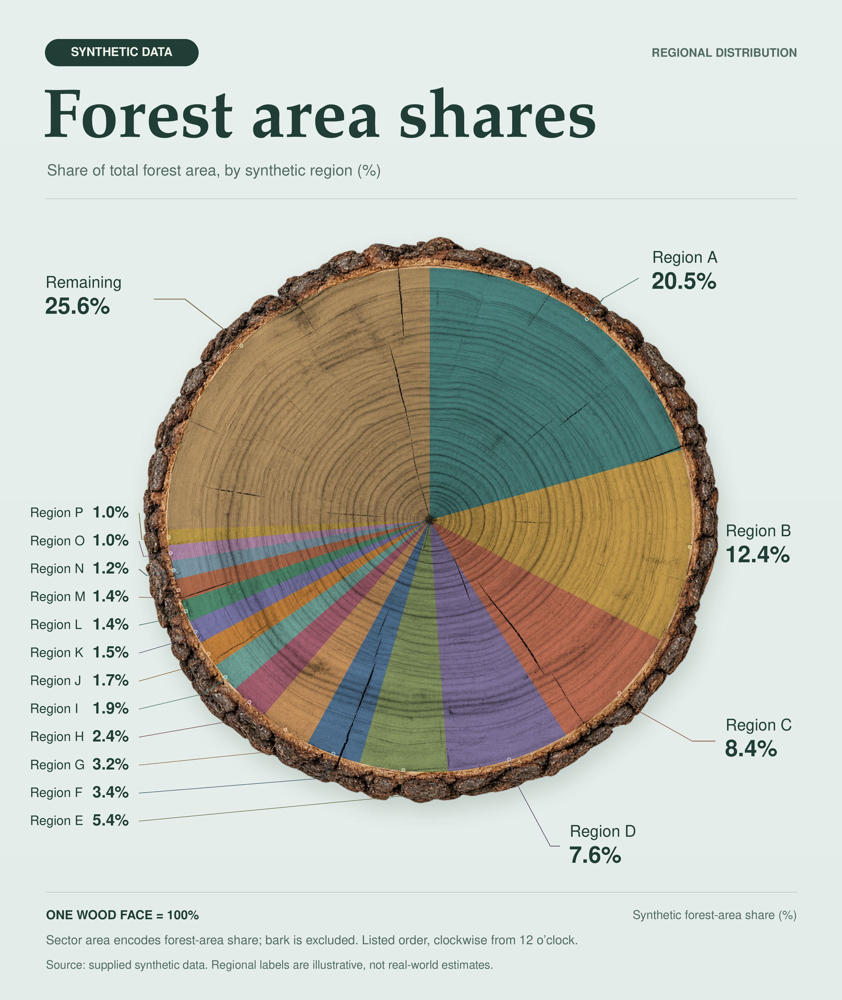
该轮修改与源码 Final typography: add space between dense region names and percentages while retaining measured sector geometry
轮次记录 · 绘图代码 旧质量：pass；数值几何：True；结构：pass；意义：pass；微小标记：pass
独立评价与具体证据 已保存并通过schema校验的review.json。数据、绑定和木材表面承载关系均通过；未运行submit.py。
completeness · pass ：17项均有可见扇区、外围标签及百分比，主题、合成声明和单位齐全。
numeric_text · pass ：17个百分比均与输入一致，两个1.0%未被舍入为零；总量100%正确。
binding · pass ：引线端点落在对应扇区外缘，顺时针类别顺序正确，未见错绑。
geometry · pass ：最终像素面积估计最大偏差约0.100个百分点，低于3个百分点容差；统一椭圆数据域与域外树皮关系正确。
source · pass ：原始素材的年轮、长裂缝和树皮可在最终主体对应；代码读取处理后的素材并控制扇区及文字。
integration · pass ：颜色融入木材切面，年轮及裂缝跨越色界，树皮包围数据面，投影位于主体之后。
readability · pass ：原分辨率下标签、数值、标题及说明可读，无明显遮挡或裁切。
critical_structure · pass ：树皮接触并包围带年轮及裂缝的木材，17个扇区共享髓心并延伸至共同椭圆边界，各有外围引线。
semantic_meaning · pass ：标题、副标题及说明明确表达各合成地区占总森林面积的百分比，整块木面等于100%，树皮不计入分母。
reference_meaning · partial ：森林份额主题和木材融合关系保留；真实国家改为合成地区来自冻结输入，不属于输出缺陷。
small_mark_visibility · pass ：小扇区仍有可辨木纹色带、外缘接触及独立引线；两个1.0%扇区未见人为放大或消失。
真实国家到合成地区的改编由冻结输入规定。当前森林面积份额、百分比组成及木材表面承载关系均保留；旧国家名称与真实统计值不属于当前要求。小扇区外部区域可辨，中心汇聚处存在常规分辨率限制。
完整评审 代码复现像素一致：True；完整共同支持：True
首次评审状态 冲突数据 · ok 输入数据
第1轮 首轮 · ok 该轮修改与源码 Initial data-bound wood-sector composition with 26 exterior callouts and a uniform 0.96 vertical projection
轮次记录 · 绘图代码 旧质量：pass；数值几何：True；结构：pass；意义：pass；微小标记：pass
独立评价与具体证据 26类数据、标签及森林面积份额语义完整，扇区与写实木面融合，比例未见超差。仅左侧小类别的引线交叉密集，追踪略费力。
completeness · pass ：26个扇区及26组外围标签齐全，包含所有父地区和子类别；单系列S1、合成声明及百分比单位均显示。
numeric_text · pass ：逐项核对数值与data.json一致，包括四项5.125%、四项3.1%、两项1%和Remaining 25.6%；总量100%正确。
binding · pass ：从START顺时针的扇区与输入类别顺序一致，标签引线端点落在对应扇区内。左侧交叉增加追踪负担，未造成可证实的错绑。
geometry · pass ：最终像素的26组可见分界与目标比例相符，角度抽样估算最大偏差约0.10个百分点，低于3个百分点容差；共同椭圆数据域与源码统一纵缩一致。
source · pass ：raw_01.png及tree_normalized.png的年轮、裂缝和树皮特征在最终主体中清楚可见；render.py按数据控制扇区、颜色和文字。capture脚本存在，实际执行历史未核验。
integration · pass ：着色扇区覆盖同一木面，年轮与裂缝穿过色区，树皮围在数据面外；主体自身承载份额，而非旁置装饰。
readability · pass ：主题、SYNTHETIC DATA、系列、单位及所有类别数值可读，没有重大遮挡；左侧引线拥挤为局部轻微问题。
critical_structure · pass ：近俯视木截面具有围绕髓心的年轮、径向裂缝、外围粗糙树皮及下方软投影；扇区在髓心汇聚并延伸至共同木面边界，外引线连接标签。
semantic_meaning · pass ：Forest area shares、Synthetic forest-area share及percent明确主题和指标；父地区、子类别、互斥部分、100%总量和非真实调查声明共同表达当前统计口径。
reference_meaning · partial ：保留参考图以木截面表示森林面积份额的含义及融合关系。真实国家名称与统计出处按冻结输入替换为合成地区和子类别，属于输入允许的语义改编，不是输出丢失。
small_mark_visibility · pass ：原尺寸下，左下侧1%、1.2%等窄扇区仍有分离的着色边界、木纹和外缘端点；1%扇区的两侧像素色度分界可检出，没有仅靠数值标签证明存在，也未见人为增宽。
当前主题、指标、单位与物体的数据承载关系均保留。参考中的真实国家及旧统计被合成地区/子类别替换，归因于冻结输入的明确改编；局部引线交叉归因于输出排版。小扇区精确像素面积的剩余不确定性来自分辨率及抗锯齿，不构成已证实的数据错误。
完整评审 代码复现像素一致：True；完整共同支持：True
首次评审状态 第2轮 · ok 该轮修改与源码 Replace intersecting left callout polylines with direct noncrossing leaders, widen category/value spacing, and connect START to the first boundary
轮次记录 · 绘图代码 第3轮 最终 · ok 该轮修改与源码 Smooth the wood-material normalization to preserve concentric growth rings and reduce sector seams to an effective 0.5 px without changing data angles
轮次记录 · 绘图代码 旧质量：pass；数值几何：True；结构：pass；意义：pass；微小标记：pass
独立评价与具体证据 26项数据、标签及外围引线完整，扇区比例与输入吻合。树皮包围木材数据面，年轮和裂缝连续可见，保留了森林份额与树干横截面的融合关系；未发现明确缺陷。
completeness · pass ：画面包含26个扇区及26项外围标签：A四项、B四项、C/D/E各两项、F至P及Remaining；与输入单系列一致。
numeric_text · pass ：逐项可见数值与输入一致，包括四个5.125%、四个3.1%、两个1%和Remaining 25.6%；总量100%、百分比单位及SYNTHETIC DATA清楚。
binding · pass ：引线端点落在对应扇区内，START及READ CLOCKWISE指示输入顺序；子类别与父地区共同显示。左右标签排序虽适配排版，未见错接或漏接。
geometry · pass ：最终图像边界抽样所得份额与目标最大差约0.07个百分点，低于3个百分点容差；26区共享同一略扁椭圆木面，树皮位于数据域外。源码确认角度及统一0.96投影由数据控制。
source · pass ：已查看raw_01.png及渲染实际引用的tree_normalized_v2.png；顶部纵裂纹、右下斜裂纹、年轮和粗糙树皮均可在成图对应，素材构成主体。render.py控制几何及文字，capture_render.py包含完整渲染保存逻辑。
integration · pass ：彩色扇区直接染色于同一木材表面，年轮跨越分区仍连续；粗树皮环绕木面，软阴影位于主体后方，未见破坏物体或读数的错层与接缝。
readability · pass ：原分辨率下标题、指标、全部地区/子类别和数值可读；外围引线及端点可追踪，未见遮字、裁切或标签重叠。
critical_structure · pass ：略呈椭圆的树干横截面由连续木面、同心年轮、径向裂缝及外围粗树皮构成。26区从共同中心延伸到木面边界，木面自身承载份额，未被旁置普通图表替代。
semantic_meaning · pass ：Forest area shares、Synthetic forest-area share及percent (%)明确主题和指标；地区父类、互斥子类别、整盘100%与树皮排除说明共同解释统计口径。
reference_meaning · partial ：保留按地理类别比较森林份额及木面分区的原意；参考图的真实国家、真实统计和时间出处被冻结输入明确改为合成地区及子类别，具体原统计语境仅部分保留，属于输入适配。
small_mark_visibility · pass ：左下Region O与P的1%窄扇区在原分辨率下仍有可辨面积、木纹和独立引线端点；不是仅靠数字表明存在。未见人为设置最小宽度，中心处的像素汇聚不妨碍外侧识别。
未发现输出造成的主题、统计角色或核心融合关系丢失。真实国家统计改为合成地区及互斥子类别由冻结输入授权，reference_meaning的partial归因于该适配。最窄扇区的亚像素精度与中心纹理可辨性属于分辨率及测量限制，不能据此推定映射错误。
完整评审 代码复现像素一致：True；完整共同支持：True
首次评审状态 E04 · 失业人口年龄、性别及族群构成 /M019 正视完整人脸融合共心扇区，保留左右不同发型、左耳、双眼、鼻与嘴唇，以及外围类别和百分比引线。头发与五官可以跨界，数据射线仍须可追踪。
参考图、共同要求与冻结变换 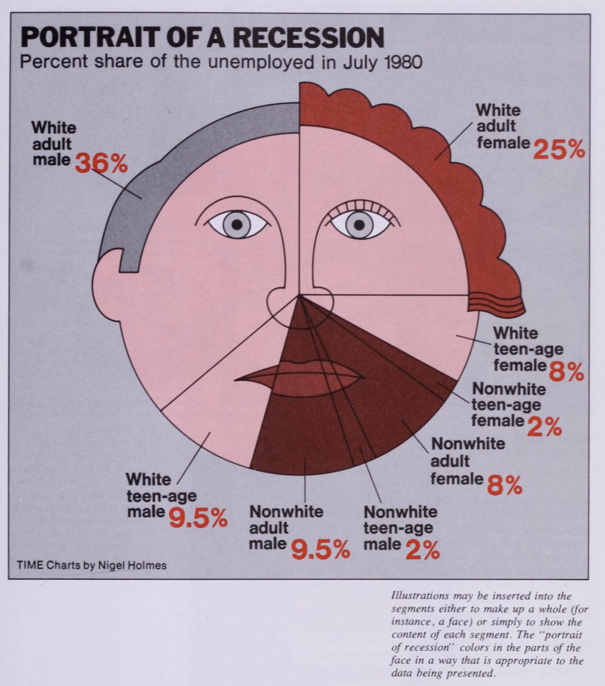
{'method': 'split interior parent categories; same total and extrema; explicit semantic parent retained', 'before_count': 8, 'after_count': 12, 'planned_count': 12, 'parent_totals_preserved': True}
共同设计 · 隐喻关键结构与意义 相近数据 · ok 输入数据
第1轮 首轮 · ok 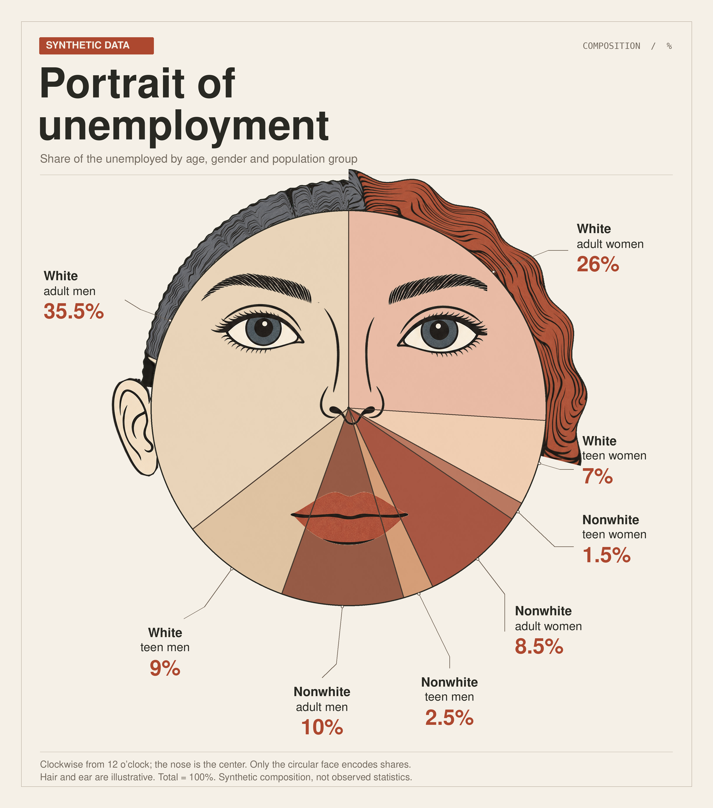
该轮修改与源码 First complete portrait: exact clockwise sectors with generated facial parts and hair textures
轮次记录 · 绘图代码 旧质量：pass；数值几何：True；结构：pass；意义：pass；微小标记：pass
独立评价与具体证据 八组数据、百分比及引线绑定正确；圆脸扇区与完整正脸融合，当前失业人口构成主题清楚。像素采样支持比例正确，未发现违反冻结要求的可见缺陷。
completeness · pass ：八个输入类别均出现，各有一个百分比及独立引线；无缺项或重复项。
numeric_text · pass ：顺时针对应26%、7%、1.5%、8.5%、2.5%、10%、9%、35.5%，全部与输入相同，合计100%。
binding · pass ：各引线可追踪至对应圆脸扇区；White/Nonwhite与adult/teen、women/men完整结合，两个窄区未错绑。
geometry · pass ：圆盘从12点起顺时针分区，共心于鼻部；两条像素采样环估计的份额最大偏差约0.02个百分点。头发与耳朵位于定量圆盘外，未改变分母。
source · pass ：已查看raw_01.png；最终双眼、鼻、嘴唇、左耳及灰/红发丝与原素材对应。prepare_assets.py提取部件，render.py实际合成素材并独立控制扇区及文字。
integration · pass ：数据着色直接构成脸面，五官叠合其上；射线跨越嘴唇仍清楚，既保留面孔，也保留扇区边界，无破坏结构的遮挡或错层。
readability · pass ：主题标题、SYNTHETIC DATA、构成指标副标题、全部类别与百分比清楚；底部说明圆脸编码、总计100%及合成统计性质。
critical_structure · pass ：左耳贴接圆脸外缘，灰色左发与红色右发沿上方轮廓附着；双眼、鼻、嘴唇位于同一正脸内。鼻部汇聚八区射线，圆脸内部色区承担份额，外围引线保留。
semantic_meaning · pass ：标题及副标题表达失业人口按年龄、性别及群体的百分比构成；标签保留年龄/性别/族群角色，未将构成份额混作失业率。
reference_meaning · pass ：保留参考图以人口类别共同组成失业者面孔的融合关系，统计指标仍为失业人口构成。旧真实数值和1980年日期按冻结输入替换为明确标示的合成数据。
small_mark_visibility · pass ：1.5%与2.5%均可见为从鼻部向圆脸边缘展开的独立窄区。在半径480像素处，连续着色弧长约42与72像素；边界及各自引线清楚，未仅靠数值标签表达。
当前主题与参考图同属失业人口年龄、性别及族群构成，面孔融合及统计角色均保留。合成数值、标题调整与取消旧日期来自冻结输入，属于允许的改编，不归为输出语义损失；未要求延续原图衰退措辞或旧占比。细微边缘测量限制来自栅格分辨率，未影响本图小扇区身份判读。
完整评审 代码复现像素一致：True；完整共同支持：True
首次评审状态 第2轮 最终 · ok 该轮修改与源码 Replace stretched hair with generated circular crown; separate header and right label; refine feature cutouts
轮次记录 · 绘图代码 旧质量：pass；数值几何：True；结构：pass；意义：pass；微小标记：pass
独立评价与具体证据 通过。八类数值、顺序、角度和引线绑定符合冻结数据；正面人脸与扇区融合、失业人口构成语义及小扇区均清楚保留。未发现实质性缺陷。
completeness · pass ：八个类别及其百分比、合成标识、主题、副标题和编码说明均完整；左耳、双眼、鼻、嘴唇及左右不同发型均可见。
numeric_text · pass ：依输入顺序显示26%、7%、1.5%、8.5%、2.5%、10%、9%、35.5%；总计100%，未将正数舍入为零。
binding · pass ：八条外围引线分别接入对应扇区外缘；White/Nonwhite父类与adult/teen、women/men子类完整相连，无交换或跨区误指。
geometry · pass ：圆盘在鼻部共心，从12点顺时针排列；PNG径线采样所得份额均符合3个百分点容差，头发和耳朵位于计量圆盘外。
source · pass ：查看raw_01.png、raw_02.png，可辨认与成图一致的眼眉、鼻、嘴唇、左耳和双色发冠；render.py实际加载这些提取素材，并由数据累计角度控制圆盘填色、径线和引线锚点。
integration · pass ：扇区填色直接构成脸盘表面，五官位于其上，发冠贴合上缘、左耳接触左侧轮廓；径线越过嘴唇仍可追踪，未见破坏身份或读数的接缝与错层。
readability · pass ：原尺寸下八组类别、百分比、主题与底部口径说明均可读，无裁切或明显重叠；合成数据标识醒目。
critical_structure · pass ：完整正面人脸由共心扇区组成；双眼分居鼻部两侧、嘴唇位于下方并跨越扇区、左耳连接脸侧，左右不同发型沿脸盘上缘相接。实际数据边界为鼻部至圆周的径线。
semantic_meaning · pass ：Portrait of unemployment及副标题明确失业人口按年龄、性别和群体的构成；类别、百分号及Total = 100%说明清楚，且明确为合成构成而非观测统计。
reference_meaning · pass ：保留参考的失业人口群体构成主题及人脸融合扇区关系。参考的1980年实测背景和旧比例由冻结输入改为合成数据，图面未错误沿用旧统计或衰退走势结论。
small_mark_visibility · pass ：1.5%和2.5%窄扇区在原尺寸下均为连续脸盘区域，两侧边界与引线可区分；像素采样角宽约5.38°和9.06°，对应目标5.4°和9°，未见为辨认而放大。
未发现输出造成的主题或数据承载关系丢失。原历史实测数值改为当前合成构成来自冻结输入，不归因于生成失败；失业人口及年龄、性别、群体角色仍保留。中心极细尖端的局部分辨率限制不影响外围小扇区归属。
完整评审 代码复现像素一致：True；完整共同支持：True
首次评审状态 冲突数据 · ok 输入数据
第1轮 首轮 · ok 该轮修改与源码 First integrated portrait: generated hair and facial features over twelve exact clockwise sectors, all semantic labels
轮次记录 · 绘图代码 旧质量：pass；数值几何：True；结构：pass；意义：pass；微小标记：pass
独立评价与具体证据 12类数值、标签绑定及人脸融合关系正确，未发现违反冻结要求的可见缺陷。已保存review.json并通过schema校验；未运行submit.py。
completeness · pass ：单系列12类全部可见，六个拆分子类均保留语义父类。
numeric_text · pass ：全部百分比与data.json一致，合计100%，没有将正值舍入为零。
binding · pass ：外围引线可逐项追踪至对应扇区，类别顺序及子类序号绑定正确。
geometry · pass ：从12点顺时针编码，实际像素边界换算份额最大偏差约0.032个百分点，低于3个百分点容差。
source · pass ：原始素材中的发型、左耳和五官在成图中实质可见；源码加载派生素材并控制扇区角度、引线锚点和文字。
integration · pass ：扇区构成脸盘，发耳位于盘外，五官叠合其上；未见破坏身份或读数的错位、遮挡及纹理接缝。
readability · pass ：主题、全部类别与百分比、子类后缀、合成声明、单位和读图说明均清晰，无必要标签截断。
critical_structure · pass ：左右不同发型连接脸盘，左耳接触左缘，双眼、鼻及嘴唇构成完整正脸；射线在鼻部汇合。
semantic_meaning · pass ：标题和说明明确表达失业人口按年龄、性别及族群划分的百分比构成，并解释合成数据及互斥子类。
reference_meaning · pass ：保留参考以组合人脸表达失业人口构成的融合关系；历史日期及真实数值不属于当前合成输入的保留要求。
small_mark_visibility · pass ：1.5%及2.5%窄区均可辨两侧边线、色区和独立引线；按实际边界角度推算，半径470像素处弧宽约44.0和73.5像素。
历史统计改为合成数据、部分父类拆分为子类，均来自冻结输入，不属于输出语义丢失。当前主题及物体承载关系保留；小扇区判断基于原始分辨率下的可见边界，遮挡处保留测量限制。
完整评审 代码复现像素一致：True；完整共同支持：True
首次评审状态 第2轮 · ok 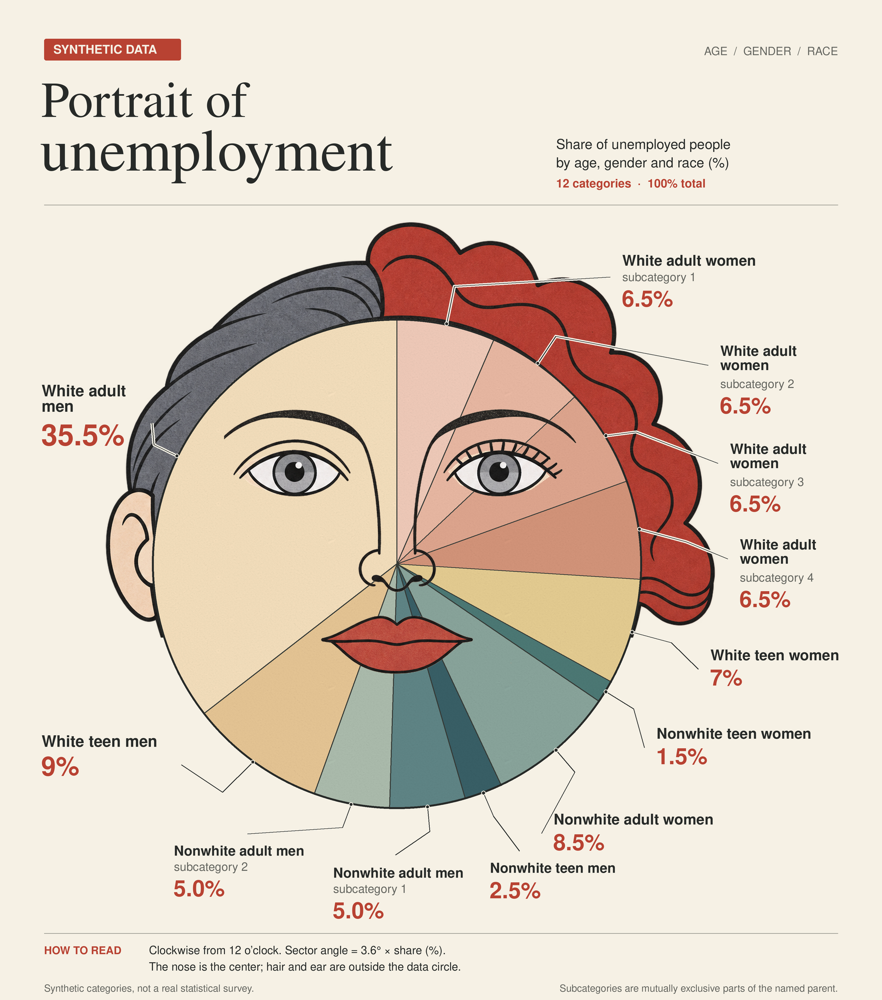
该轮修改与源码 Refine generated paper grain to remove repeating motifs, remove pale lip edge, derive header totals from current data
轮次记录 · 绘图代码 第3轮 最终 · ok 该轮修改与源码 Remove residual repeating texture marks by deterministically redistributing grain sampled from the generated portrait; retain all data geometry and labels
轮次记录 · 绘图代码 旧质量：pass；数值几何：True；结构：pass；意义：pass；微小标记：pass
独立评价与具体证据 数值、顺序、引线绑定和人脸融合关系均符合要求，未发现明确可见缺陷。已保存review.json并通过schema校验；未运行submit.py。
completeness · pass ：全部12类均有可见扇区和标签，包含要求的四个女性子类及两个男性子类。
numeric_text · pass ：6.5%×4、7%、1.5%、8.5%、2.5%、5.0%×2、9%、35.5%均与冻结数据一致。
binding · pass ：12条引线连接对应扇区，顺时针类别顺序、子类序号和语义父类正确。
geometry · pass ：圆盘以鼻部为中心，从12点顺时针分割；像素采样最大偏差约0.04个百分点，低于容差。
source · pass ：原始生图中的头发、耳和五官在最终图中实质可见；源码由冻结数据控制扇角及文字。
integration · pass ：扇区直接构成脸部，五官叠合其上，头发环绕圆盘，左耳连接轮廓。
readability · pass ：标题、全部类别、百分比、合成声明和阅读规则均可读，无明显遮挡。
critical_structure · pass ：完整正视人脸及必要部件均保留，射线汇聚于鼻部并可追踪至圆周。
semantic_meaning · pass ：明确表达失业人口按年龄、性别和族群划分的百分比构成；子类别保留父类且声明互斥。
reference_meaning · pass ：保留人脸融合扇区表达失业人口构成的关系；历史数值替换为合成数据符合冻结输入。
small_mark_visibility · pass ：1.5%和2.5%均有独立色带、边界及引线；按采样角度折算，470像素半径处弧长约44和75像素。
未发现输出造成的主题或核心关系丢失。历史统计改为合成构成、增加互斥子类属于输入允许的改编；当前主题与参考一致。五官局部遮挡符合简报，小扇区仍可辨。
完整评审 代码复现像素一致：True；完整共同支持：True
首次评审状态 E05 · 书籍销量 /M020 一排等宽完整书脊，书名、作者、包边和共同零线保留。
参考图、共同要求与冻结变换 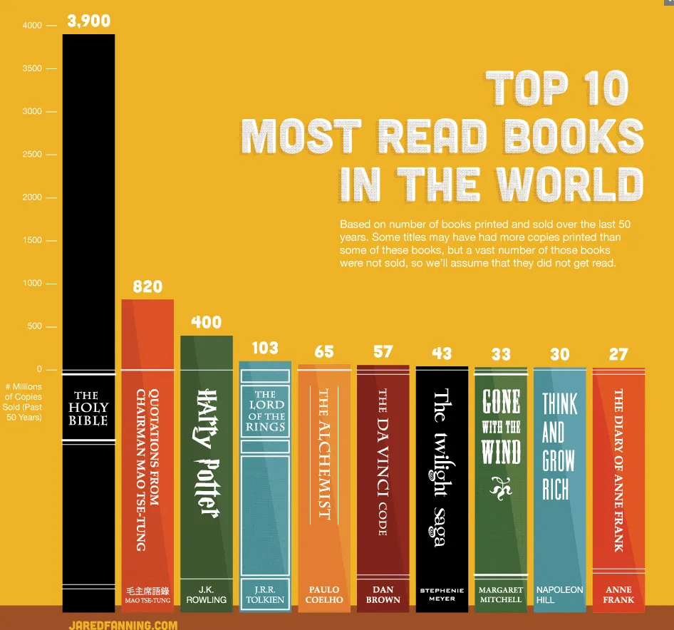
{'method': 'append new synthetic categories within the existing value range; existing values unchanged; per-category intensity totals are not an aggregate control', 'before_count': 10, 'after_count': 15}
共同设计 · 隐喻关键结构与意义 相近数据 · ok 输入数据
第1轮 首轮 · ok 该轮修改与源码 Initial complete composition: generated clothbound spines, proportional extensions, fixed lower bindings and exact labels
轮次记录 · 绘图代码 旧质量：pass；数值几何：True；结构：pass；意义：pass；微小标记：pass
独立评价与具体证据 通过。十项数值、顺序、标签与单位准确，书脊延伸高度符合线性比例，完整书籍结构和数据融合关系保留。最小标记仍可见；参考统计语义的变化来自冻结输入的合成销量改编。
completeness · pass ：Book A–J十类、一组销量系列、十个数值与10 BOOKS / 1 SERIES说明均可见，顺序与输入一致。
numeric_text · pass ：图中3840、850、420、108、69、59、45、35、31、26及总量5483准确；单位为million copies，刻度范围0–4000。
binding · pass ：每个数值位于相应书脊顶部上方；书脊内的Book A–J名称与横向顺序一一对应，无错位或串项。
geometry · pass ：原图顶边像素与当前数据的线性目标高度相差不足1像素；零线上缘到各顶边的距离编码销量，下方共同区域明确不编码。
source · pass ：raw_01.png的十色布纹和金色包边在成图主体中可辨。prepare_assets.py切分书脊素材，render.py按数据控制矩形边界、贴图和文字；已查看capture_render.py保存流程源码，未执行。
integration · pass ：数据边界就是完整书脊的上边界；上部延伸与下部书名、作者区连为同一物体。零线横跨表面，没有旁置独立柱形替代书脊。
readability · pass ：主题、合成数据提示、销量指标、单位、数值、书名及零线说明清楚；作者统一注明unspecified，并以页脚解释未提供作者名。
critical_structure · pass ：十本等宽完整书脊并排，顶部包边连接布纹主体，底部包边同高且紧邻共同书架；书名和作者区位于零线以下。白线叠于书脊表面，顶部数据区与下部装饰区连续。
semantic_meaning · pass ：SYNTHETIC Book sales、Synthetic copies sold和million copies明确表达合成书籍销量；Book A–J具有书籍类别角色，总量指十本书销量之和。未借用原图真实书名或旧统计结论。
reference_meaning · partial ：参考图以过去50年印售册数代理“最常阅读的十本书”；冻结输入明确改为合成书籍销量。成图保留书脊承载册数的关系，但不再表达阅读排名或50年窗口；此差异归于允许的输入改编。
small_mark_visibility · pass ：原始分辨率下H、I、J的正值延伸约9、8、7像素，顶边均高于白线且连接完整下部书脊；未归零或统一抬高。相邻小值仅约1像素的差异，精细相对读数受分辨率限制。
未发现输出造成的核心语义丢失。原图阅读排名、真实书名和50年统计窗口被当前输入明确改编为合成书籍销量，reference_meaning的部分保留不归责于生成结果。作者姓名未由输入提供，图面诚实显示unspecified。最小延伸的精细比例存在像素分辨率限制，但书脊及其承载关系可辨。
完整评审 代码复现像素一致：True；完整共同支持：True
首次评审状态 第2轮 · ok 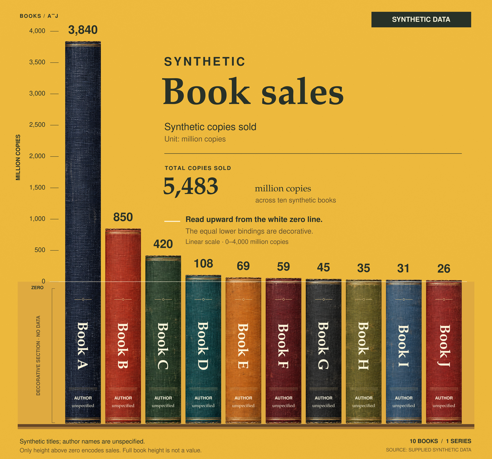
该轮修改与源码 Align the visible white zero-rule center with the quantitative origin; retain all proportional spine geometry and labels
轮次记录 · 绘图代码 第3轮 最终 · ok 该轮修改与源码 Add a thin uniform inset book-head edge to clarify tiny true tops without changing any heights; retain generated caps and cloth
轮次记录 · 绘图代码 旧质量：pass；数值几何：True；结构：pass；意义：pass；微小标记：pass
独立评价与具体证据 十本完整等宽书脊以零线以上延伸编码合成销量，类别、数值、单位和总量正确，生成材质实质构成主体。原图像素支持几何符合容差，小值仍与书体连通。未发现明确违规缺陷；参考阅读叙事的变化来自冻结输入的销量适配。
completeness · pass ：Book A–J按给定顺序完整出现，共10本、1个销量系列；图面同时标注10 BOOKS / 1 SERIES。
numeric_text · pass ：可见数值依次为3840、850、420、108、69、59、45、35、31、26；总量5483正确，单位million copies明确，正值未被写成零。
binding · pass ：各数值居于对应书脊顶部上方，书名位于同一连续书体内；顺序、位置和颜色共同支持一一绑定，无跨书错配。
geometry · pass ：实际顶边与共同零线的像素距离符合0–4000线性映射，估计偏差不足1px；下部明确标为不编码，未把完整书高当销量。
source · pass ：已查看raw_01.png及处理后的spine_10.png；十种织物颜色、包边和表面细节与成图主体对应。render.py读取spine_01至spine_10并控制形状与文字，生成素材实际可见且占据整个书脊。
integration · pass ：销量边界就是完整书脊的顶部，材质沿书体延伸穿过零线；包边属于书体，底部统一落在书架处。未见破坏结构的透视错位、遮挡或接缝，非普通柱图旁置书籍。
readability · pass ：SYNTHETIC DATA、销量标题、系列、单位、十个数值、书名及零线说明均清晰。作者区显示AUTHOR unspecified，底注说明作者未指定，与输入未提供作者一致。
critical_structure · pass ：十本等宽完整书脊并排，均保留顶底包边、书名和作者区域；共用零线及下部装饰区。上部数据区与下部身份区连续连接，完整书高未被误作数值。
semantic_meaning · pass ：Book sales与Synthetic copies sold明确主题和指标，million copies明确单位；Book A–J明确书籍类别，5483解释为十本合成书的总销量。没有引入时间累计或百分比组成等额外含义。
reference_meaning · partial ：保留参考以书脊高低表现书籍销量的融合关系。参考“最常读书籍”、过去50年及真实书名未保留；冻结输入明确改为合成书籍销量，故这部分属于输入适配，不是生成输出缺陷。
small_mark_visibility · pass ：H、I、J零线上延伸约9、8、7px，深色顶边及部分包边可辨，且与下方完整书体贯通；未消失或被单独数值替代。精确相对差异受约1px定位不确定性限制。
未发现当前要求的书籍销量语义或书脊承载关系丢失。参考阅读排名、50年口径及真实书名的变化归于冻结输入允许的合成销量适配；作者未提供而明确标为未指定。最小值的相对精度限制归于像素分辨率，不据此推断隐藏错误，也不以文字或公式代替可见几何证据。
完整评审 代码复现像素一致：True；完整共同支持：True
首次评审状态 冲突数据 · ok 输入数据
第1轮 首轮 · ok 该轮修改与源码 First complete composition: generated book materials, exact linear top edges, full category and value labels, shared non-data lower spines.
轮次记录 · 绘图代码 旧质量：fail；数值几何：False；结构：pass；意义：pass；微小标记：pass
独立评价与具体证据 15项数据、线性高度、书脊融合结构和当前合成销量主题均保留。两处长数值标签的末位小数被相邻书脊局部遮挡，属于轻微可读性缺陷，未改变数据边界或类别绑定。
completeness · pass ：全部15个类别按输入顺序出现；每本均有数值位置、书名和虚构作者，单系列、单位、零线与合成数据声明齐全。
numeric_text · fail ：其余13项数值及总计15,148与输入一致；1,297.3333和2,568.6667的末位字符局部被遮挡，输入精度未完整可见。属于局部文字缺陷。
binding · pass ：Book A至Book J及Book added 1至5与各自书脊、顶部数值一一对应；两处末位遮挡未造成类别错绑。
geometry · pass ：15项像素边界与0–4000线性映射均相差不足1像素；无最小高度抬升，零线下装饰区不计入数值。
source · pass ：已查看assets/raw_01.png；六款皮革、布面纹理和金色装订底饰在最终15本书脊上实质可见。prepare_assets.py裁切素材，render.py使用body与foot素材控制填充。
integration · pass ：销量边界就是完整书脊上边界；纹理从数据区连续进入下方带书名、作者和包边的装饰区，各书底部接触同一书架，没有旁置物体替代融合。
readability · fail ：标题、单位、类别、作者、刻度和编码说明清楚；仅两处长数值的末位小数被邻书遮挡，未达到全部必要文字完整可读。
critical_structure · pass ：一排15本等宽完整书脊共同落在书架上，书名和作者包含于下方装饰区，包边沿外侧连续，共同零线横贯全部书脊。
semantic_meaning · pass ：SYNTHETIC与Book sales构成明确主题；Synthetic copies sold、million copies、15 titles及图下注释说明当前指标、单位和零线以上高度的含义。
reference_meaning · partial ：保留书籍销量与书脊柱高融合。参考图的全球阅读榜、真实书名及过去50年口径被冻结输入明确改编为15项虚构合成销量；此差异归于输入适配，不归为输出失败。
small_mark_visibility · pass ：26–108对应的约6–26像素延伸在原分辨率下可见，上端帽边、零线与下方完整书脊保持连接。最小几项高度差接近像素尺度，精细比较受分辨率限制。
输出保留当前书籍销量主题、单系列含义、百万册单位和书脊承载关系。参考真实榜单及时间口径的变化来自冻结输入允许的合成改编。两处末位小数遮挡属于输出局部损失；小值相对精度的不确定性来自像素分辨率，未据此推定几何失败。
完整评审 代码复现像素一致：True；完整共同支持：False
首次评审状态 第2轮 最终 · ok 该轮修改与源码 Move exact decimal labels left to their own book right edges and draw labels above all material layers; eliminate neighboring-book occlusion.
轮次记录 · 绘图代码 旧质量：pass；数值几何：True；结构：pass；意义：pass；微小标记：pass
独立评价与具体证据 最终图保留完整书脊与销量高度的融合关系；15项数值、顺序、标签、单位及总计一致，像素边界符合线性比例。未发现违反冻结要求的可见缺陷。参考统计口径的变化属于允许的输入改编。
completeness · pass ：15本书按Book A至Book J、Book added 1至5原序排列；单一销量系列、类别、数值、作者、单位、零线及合成数据声明齐全。
numeric_text · pass ：图面数值依次为3,840、850、420、108、69、59、45、35、31、26、661.6667、1,297.3333、1,933.0、2,568.6667、3,204.3333，与输入一致；总计15,148等于输入求和。
binding · pass ：书名和作者位于各自书脊内部，整数值置于对应顶端上方；长小数标签右端对齐所属书脊右缘，错开相邻高度，无可见错绑。
geometry · pass ：以共同零线为起点的上伸高度与0–4000线性刻度吻合；15项像素检测偏差最大约0.12%满量程。共同下部约390像素，并明确声明不编码。
source · pass ：已查看raw_01.png六款书脊素材；其黑色皮革、红色与蓝色织物、绿/棕/酒红纹理及底部金饰实质出现在最终15本主体中。prepare_assets.py裁切素材，render.py控制形状和文字；另有capture_render.py保存流程源码。
integration · pass ：承载数值的上沿属于书脊本体，材质跨越零线连续进入标题、作者和装订区，书底接触共同书架；没有旁置普通柱图替代融合。正视方向、遮挡次序与表面文字一致，未见破坏解释的接缝。
readability · pass ：销量标题、Synthetic copies sold、million copies、SYNTHETIC DATA、全部数值和书名在原分辨率可读；页脚解释完整书高不代表销量，未见必要文字被裁切或遮挡。
critical_structure · pass ：15个等宽完整书脊并排，侧缘包边与底部金饰附着于主体，书名框和作者包含于零线下装饰区，所有书底接触同一书架。零线穿过连续书脊，上方顶端为真实数据边界，满足M2、M3、M6。
semantic_meaning · pass ：SYNTHETIC与Book sales明确当前主题；Synthetic copies sold及million copies说明指标和单位，Book类别具有书籍语义父类。图面明确合成性质与零线上方编码规则，没有引入百分比分割或跨期累计解释。
reference_meaning · partial ：参考图以过去50年印售册数表达“最常读书籍”；最终图保留书籍与册数高度关系，改为明确的合成销量及虚构书名。冻结输入已授权这一主题口径改编，不属于输出丢失，也不要求保留旧排名或真实统计。
small_mark_visibility · pass ：Book D至J的微小上伸在原图仍可见，阈值检测高度约26、17、14、11、9、8、7像素；它们与下方完整书脊直接连续，零线可辨。最小值没有被抬高到统一最小柱高，也未仅剩数字；亚像素准确性保留不确定性。
当前销量主题、书籍类别、指标单位和书脊数据关系均保留。参考“最常读/过去50年”的历史表述被输入明确改编为合成销量，reference_meaning的partial归于允许的输入适配。小值的精细相对高度受像素分辨率限制；未据此归因输出语义丢失。
完整评审 代码复现像素一致：True；完整共同支持：True
首次评审状态 E06 · 各虚构国家人均年度工作时长 /M023 不同颜色的完整铅笔按行排列，笔尾、笔杆、削木与石墨尖连贯，木屑装饰保留。
参考图、共同要求与冻结变换 {'method': 'append new synthetic categories within the existing value range; existing values unchanged; per-category intensity totals are not an aggregate control', 'before_count': 17, 'after_count': 26}
共同设计 · 隐喻关键结构与意义 相近数据 · ok 输入数据
第1轮 首轮 / 最终 · ok 该轮修改与源码 Initial composition: generated pencil material, full-length data mapping, 17 rows and cedar shavings
轮次记录 · 绘图代码 旧质量：pass；数值几何：True；结构：pass；意义：pass；微小标记：pass
独立评价与具体证据 通过。数据、标签、完整铅笔长度编码和主题语义均符合要求。review.json已保存并通过schema校验；未运行submit.py。
completeness · pass ：17支铅笔对应Country A–Q，顺序完整；Annual hours及h/year可见。
numeric_text · pass ：全部17个数值逐项匹配data.json，刻度范围0–2300正确。
binding · pass ：国家名位于对应笔杆，左侧数值与同一行铅笔对齐，无错绑。
geometry · pass ：17个实体尖端均距线性目标约1像素以内；笔尾及石墨尖包含于编码全长。
source · pass ：raw_01.png中的笔尾、金属环、木纹、石墨尖和木屑在成图中可辨；源码裁切、重着色并拼接素材构成主体。
integration · pass ：完整铅笔的实体边界直接承担工时长度编码，国家标签位于笔杆，木屑保留于装饰区。
readability · pass ：标题、合成声明、人均年度说明、国家名、数值及单位均清晰，无必要文字被遮挡。
critical_structure · pass ：彩色铅笔逐行排列，笔尾接金属环和笔杆，笔杆接削木并收束至石墨尖，部件连续；右侧保留卷曲木屑。
semantic_meaning · pass ：Annual working hours、Hours worked per person, per year.、虚构国家说明和h/year共同明确主题、统计口径、类别角色及单位。
reference_meaning · pass ：按国家比较年度工时并以完整铅笔长度承载数值的关系保留；国家名和数值的合成替换由冻结输入许可，主题未改变。
small_mark_visibility · pass ：最小值1435占满量程约62.4%，对应约898像素长、34像素厚的铅笔；无微小标记，端部结构均可辨。
国家类别、年度工时指标及铅笔全长编码均保留。虚构国家和合成数值来自输入许可，不属于输出语义损失。未见部件连接或统计口径丢失；边缘像素定位的不确定性不影响物体识别及数据判断。
完整评审 代码复现像素一致：True；完整共同支持：True
首次评审状态 冲突数据 · ok 输入数据
第1轮 首轮 / 最终 · ok 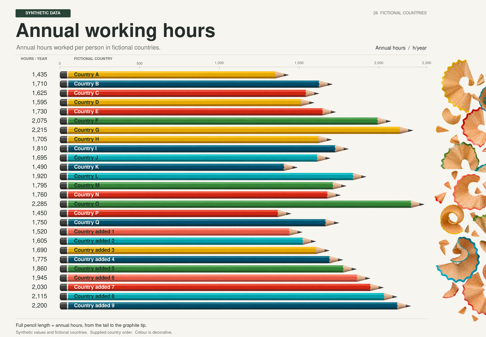
该轮修改与源码 First complete composition: 26 generated pencils with zero-based full-length encoding and a shaving border
轮次记录 · 绘图代码 旧质量：pass；数值几何：True；结构：pass；意义：pass；微小标记：pass
独立评价与具体证据 26个类别、数值及绑定完整正确；完整铅笔全长准确承载年度工时，部件连接和木屑装饰保留，主题、统计口径及单位明确。未发现需报告的可见缺陷。
completeness · pass ：最终图包含Country A至Q和Country added 1至9共26行，顺序与输入一致，单一年度工时系列完整。
numeric_text · pass ：逐行可读数值与输入26项一致，包括1435、2285和新增类别1520至2200；h/year及SYNTHETIC DATA明确显示。
binding · pass ：每行左侧数值与同高铅笔上的国家名对应，所有类别均保留Country语义父类；无跨行错配。
geometry · pass ：实际像素显示笔尾共同起于x=246；26条实体全长按图上0—2300线性刻度换算，最大误差约满量程0.049%，木质及石墨尖均计入长度。
source · pass ：已查看raw_01.png和raw_02.png；六色铅笔的尾环、漆面、木纹、石墨尖及彩边木屑在最终图中实质可见。prepare_assets.py提取部件，render.py加载这些素材并控制定量长度及文字。
integration · pass ：数据边界就是从深色笔尾到最右石墨尖的完整铅笔边界；并非另加普通条形。木屑位于右侧空白边栏，不遮挡数据尖端。
readability · pass ：原始分辨率下，标题、26个国家标签及数值、单位、轴刻度和底部全长编码说明均清晰，无必要文字缺失或遮挡。
critical_structure · pass ：各行深色笔尾经浅色环接彩色笔杆，笔杆接木质削尖，木质包围并连接向右的石墨尖；部件连续、方向一致，多色卷曲木屑保留，未见破坏身份的接缝或层次错误。
semantic_meaning · pass ：Annual working hours标题、Annual hours worked per person in fictional countries副标题和h/year单位共同明确各虚构国家人均年度工作时长；颜色装饰性及合成数据性质亦有说明。
reference_meaning · partial ：参考的年度工时国家比较及铅笔长度融合关系保留；真实国家和原统计被冻结输入明确改为虚构国家及合成值，原事实指代仅部分保留，属于输入改编而非输出缺陷。
small_mark_visibility · pass ：当前最小值1435占满量程约62.4%，对应约942px全长，不存在微小量值标记；原始分辨率下各行约30px厚，最短铅笔的笔尾、笔杆、木质削尖和石墨尖仍分别可辨。
未发现输出造成的主题或数据角色丢失。真实国家及旧统计向虚构国家和合成数值的变化由冻结输入指定，reference_meaning的partial仅记录这一事实指代改编；不要求保留旧最高项或原数值。像素分辨率限制仅影响边缘的约1px定位，不妨碍当前物体部件识别。
完整评审 代码复现像素一致：True；完整共同支持：True
首次评审状态 E07 · 睡眠时长分布 /M025 浅灰背景中的横向写实布枕，保留蓬松填充、布纹、皱褶、包边、伸出角和落地阴影。左侧约三成白布是非数据装饰区，其余连续竖向色带承载输入分布。
参考图、共同要求与冻结变换 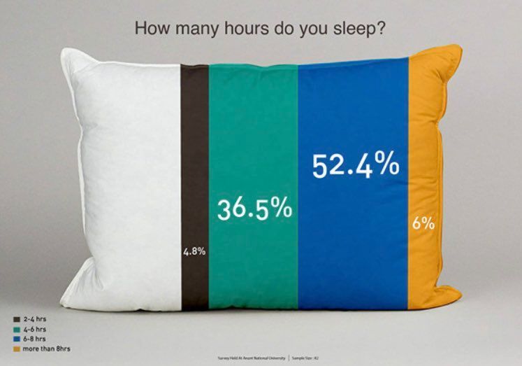
{'method': 'split interior parent categories; same total and extrema; explicit semantic parent retained', 'before_count': 4, 'after_count': 6, 'planned_count': 6, 'parent_totals_preserved': True}
共同设计 · 隐喻关键结构与意义 相近数据 · ok 输入数据
第1轮 首轮 / 最终 · ok 该轮修改与源码 Initial composition: generated fabric pillow, proportionate vertical bands and external data-bound labels
轮次记录 · 绘图代码 旧质量：pass；数值几何：True；结构：pass；意义：pass；微小标记：pass
独立评价与具体证据 通过。四类数值、顺序和标签绑定正确，中部色带宽度符合份额容差。生成布枕的纹理、包边、角部及体积明暗实质用于主体，连续色带直接承载睡眠时长分布，主题与合成数据声明清晰。
completeness · pass ：四个时长类别、单一占比系列及全部四条色带完整；显示4 DURATION BANDS和TOTAL 100.0%。
numeric_text · pass ：可见5.2%、35.8%、52.1%、6.9%，与冻结输入逐项一致；时长单位h、占比单位%均明确。
binding · pass ：从左至右褐、青绿、蓝、黄带的底部引线分别对应2–<4 h、4–<6 h、6–8 h、>8 h及各自数值，未见错位或交叉；白布另标为非数据。
geometry · pass ：成图中截面测得份额约5.27%、35.73%、52.11%、6.90%，与目标最大差约0.08个百分点；白布约30%，边界竖直，未用面积或伸出角宽度误判编码。
source · pass ：已查看raw_01.png与pillow_clean.png；其凹曲上沿、包边及两侧皱褶可在成图对应。素材清单及提示词标明生成布枕，render.py读取处理素材并保留明暗纹理染色，代码控制份额边界和文字。
integration · pass ：四条色带连续覆盖同一布枕表面，由枕头轮廓裁切，织纹和皱褶穿过各色区域；阴影位于枕头后下方，未见脱离布面的独立图表或破坏结构的遮挡。
readability · pass ：原始分辨率下主题、SYNTHETIC DATA、类别、百分比、总计及白布不编码说明均可辨，必要文字没有裁切、重叠或被物体遮盖。
critical_structure · pass ：横向蓬松布枕有连续包边、伸出角、布纹、皱褶和接地阴影；白布与四色布面连接为同一主体，右侧连续竖带的中部可见宽度承担数据。
semantic_meaning · pass ：Sleep duration distribution与中文睡眠时长分布给出主题，Share of total (%)说明指标，四个小时区间承担分类角色；合成声明和100%总计使当前分布含义明确。
reference_meaning · pass ：参考图询问睡眠小时数，当前图保留睡眠时长分类、百分比及枕面色带融合关系。数值更新和合成声明符合冻结输入，不要求沿用旧真实统计。
small_mark_visibility · pass ：最窄褐带和末端黄带在中截面仍约55、72像素宽，清楚保留布面纹理与轮廓裁切关系；对应引线可辨，像素核查支持其份额，并非仅凭数字判断。
未见输出造成的主题或数据承载关系丢失。当前与参考均为睡眠时长分布；旧数值替换为冻结合成份额及突出合成声明属于获准输入变化。姿态变宽及标签外置未改变同一布枕布面承载连续份额的关系；轮廓边缘仅有像素分辨率带来的测量不确定性。
完整评审 代码复现像素一致：True；完整共同支持：True
首次评审状态 冲突数据 · ok 输入数据
第1轮 首轮 · ok 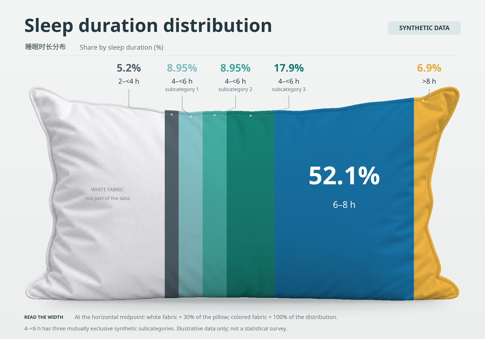
该轮修改与源码 Initial fused pillow chart: generated cotton texture, exact six-band width mapping, external labels for narrow bands.
轮次记录 · 绘图代码 旧质量：pass；数值几何：True；结构：pass；意义：pass；微小标记：pass
独立评价与具体证据 数据、标签、睡眠语义及枕面宽度编码均保留，仅有轻微上缘裁切瑕疵。已保存review.json并通过schema校验；未运行submit.py。
completeness · pass ：六个类别及色带齐全，三个子类均保留4–<6 h父类，白布明确排除。
numeric_text · pass ：5.2%、8.95%、8.95%、17.9%、52.1%、6.9%均与输入一致，总和100%。
binding · pass ：五条引线落在相应色带内部，52.1%与6–8 h位于蓝色带内；顺序正确。
geometry · pass ：像素宽度换算符合目标；计入边缘误差仍远小于3个百分点，白布约30%。
source · pass ：原始及处理后素材的布纹、褶皱、包边和四角在主体中可见；render.py依据输入控制色带分界。
integration · pass ：色带直接构成同一枕头布面，保留织纹与明暗，按物体轮廓裁切；阴影位于枕体下方。
readability · pass ：主题、合成声明、数值、单位、子类及宽度说明均清楚，无必要文字遮挡或截断。
critical_structure · pass ：蓬松枕体、连接布面的包边与四角、皱褶及落地阴影保留；白布与六色区域连续相接，中段竖向分界承担份额编码。
semantic_meaning · pass ：标题明确睡眠时长分布，指标为百分比、类别为小时区间；说明三个子类互斥且数据为合成示例。
reference_meaning · pass ：睡眠分布主题和枕面色带融合关系保留；数值替换及类别拆分来自冻结输入。
small_mark_visibility · pass ：最窄5.2%带约58像素，6.9%带约76像素，均有可辨布面、边界和绑定；两个8.95%带也清楚分离。
未发现当前主题、指标或融合关系丢失。合成数值及父类拆分属于输入许可的适配；轻微上缘裁切属于输出瑕疵，像素定位限制仅影响小数级估读。
完整评审 代码复现像素一致：True；完整共同支持：True
首次评审状态 第2轮 · ok 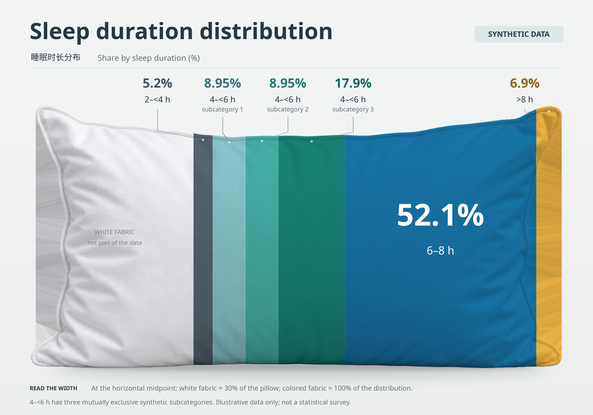
该轮修改与源码 Darken light-teal and ochre numeric labels for contrast; smooth coarse generated alpha edges while retaining the midline data geometry.
轮次记录 · 绘图代码 第3轮 最终 · ok 该轮修改与源码 Fix alpha smoothing to preserve concave side cutouts; verify original midline endpoints before rendering. Retain improved label contrast.
轮次记录 · 绘图代码 旧质量：pass；数值几何：True；结构：pass；意义：pass；微小标记：pass
独立评价与具体证据 六类数值、标签绑定及中线宽度符合冻结数据；写实枕头的布面直接承载分布，睡眠主题、合成性质与互斥子类别含义清楚。未发现需列项的可见缺陷。
completeness · pass ：六个类别全部可见且顺序符合输入，三个4–<6 h子类别分别标为1、2、3；百分比单位、睡眠主题及SYNTHETIC DATA提示齐全。
numeric_text · pass ：成图依次显示5.2%、8.95%、8.95%、17.9%、52.1%、6.9%，与data.json逐项一致，总和100%。
binding · pass ：五条引线分别落在灰、浅青、青、深绿、黄色带内；52.1%及6–8 h直接位于宽蓝带内。各子类别保留父类名称。
geometry · pass ：最终像素中线宽度归一后与目标最大差约0.08个百分点；左侧白布约占30%。色带边界竖直，无最小宽度放大；角部随轮廓变宽不属于中线编码误差。
source · pass ：已查看raw_01.png与pillow_neutral.png；素材清单将前者标为生图原件。其褶皱、包边和四角与最终主体对应；render.py保留素材明暗并用输入份额控制色带边界及文字。
integration · pass ：色带连续附着于枕头布面并延续到包边与角部，布纹和明暗贯穿数据区域；非数据白布与色布组成同一枕体，阴影位于枕下，未见破坏结构的遮挡或越界。
readability · pass ：标题、六组数值和时长、子类别编号、合成提示均清晰；引线可追踪，底部中线宽度说明及互斥子类别声明可读，无必要文字被裁切。
critical_structure · pass ：横向蓬松枕体、相连包边、褶皱、伸出四角及接地阴影保留；白布在左并与六条连续竖带接合，数据承载边界就是枕头中线上的布面色带分界。
semantic_meaning · pass ：中英文标题及Share by sleep duration (%)明确睡眠时长份额；h表示小时，%表示占比。脚注说明三个子类别互斥、数据为合成示意且非统计调查，白布明确排除在分布之外。
reference_meaning · pass ：参考的睡眠时长分布与枕头布面融合关系得到保留，主题未改变。当前数值和子类别按冻结输入适配，不要求沿用参考旧比例或真实调查口径。
small_mark_visibility · pass ：原始分辨率下最窄灰带中线宽约57像素，黄色带约77像素，两个8.95%色带各约99像素；均可分辨连续布面、材质与标签指向，未退化为只有数值而无可见区域。
睡眠主题、时长类别、份额单位及布面宽度承载关系均由输出保留。合成数值及4–<6 h父类拆分来自冻结输入，是允许的数据适配，不是输出语义损失；不存在需强加的旧峰值结论。当前小色带的材质关系可辨，分辨率限制仅影响边缘的像素级定位。
完整评审 代码复现像素一致：True；完整共同支持：True
首次评审状态 E08 · 鸡蛋的营养成分构成 /M031 单枚近正面的完整鸡蛋，保留上窄下圆的蛋形、细腻蛋壳材质、受光和暗面。各成分以共享内部汇聚点的闭合分区直接构成蛋体，标签在外部。
参考图、共同要求与冻结变换 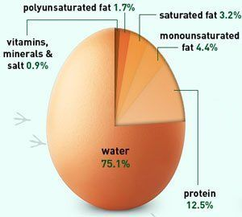
{'method': 'split interior parent categories; same total and extrema; explicit semantic parent retained', 'before_count': 6, 'after_count': 9, 'planned_count': 9, 'parent_totals_preserved': True}
共同设计 · 隐喻关键结构与意义 相近数据 · ok 输入数据
第1轮 首轮 · ok 该轮修改与源码 First complete composition: generated eggshell with area-calibrated sectors and external labels
轮次记录 · 绘图代码 旧质量：pass；数值几何：True；结构：pass；意义：pass；微小标记：pass
独立评价与具体证据 通过。面积份额、数值及标签绑定吻合，蛋体与数据融合关系完整。已保存review.json并通过schema校验；按追加要求未运行submit.py。
completeness · pass ：六类别及对应区域完整，主题、单位、合成数据声明和总计齐全。
numeric_text · pass ：六项百分比与data.json一致，总和100%。
binding · pass ：各引线端点对应正确区域，沿轮廓顺序与输入一致；少量交叉仍可追踪。
geometry · pass ：最终像素测量的最大份额偏差约0.10个百分点，低于3个百分点容差；分区共享轮廓与内部汇聚点。
source · pass ：已查看原始及处理素材；壳纹、斑点和明暗实际用于最终蛋体，源码控制分区几何及文字。
integration · pass ：数据区域直接共同组成唯一蛋体，纹理和光照沿表面连续。
readability · pass ：必要文字清楚，无裁切或遮挡；引线交叉未造成误绑。
critical_structure · pass ：近正面鸡蛋上窄下圆，有壳纹及明暗；六个闭合区域在约(1044,1076)汇聚，标签位于蛋外。
semantic_meaning · pass ：标题和副标题明确鸡蛋营养构成及百分比口径，脂肪子类别保留父类语义，底部解释整蛋面积编码。
reference_meaning · pass ：参考的营养组成主题、类别角色及蛋体分区融合关系保留，数值按当前合成输入更新。
small_mark_visibility · pass ：原分辨率下最小两区清晰相邻并连接蛋体；y=430处分别约22和33像素宽，向共同尖端收窄。
未发现输出导致的结构或语义丢失。合成数值替换属于冻结输入允许的变化；尖端局部辨识限制来自像素分辨率。
完整评审 代码复现像素一致：True；完整共同支持：True
首次评审状态 第2轮 · ok 该轮修改与源码 Remove crossed right-side callouts; bring the monounsaturated fat label upward and tighten the vitamin leader
轮次记录 · 绘图代码 第3轮 最终 · ok 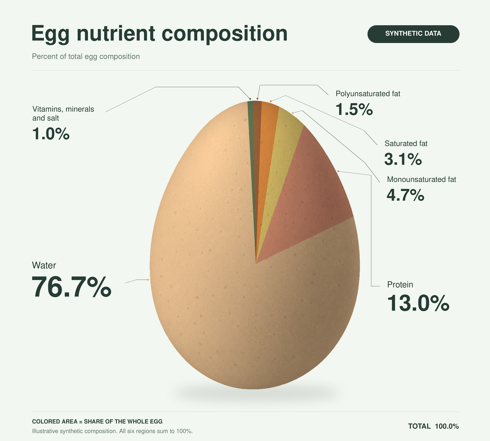
该轮修改与源码 Final label polish: balanced semantic wrapping for vitamins, minerals and salt with a shorter outside leader
轮次记录 · 绘图代码 旧质量：pass；数值几何：True；结构：pass；意义：pass；微小标记：pass
独立评价与具体证据 六类数值、标签绑定和蛋形面积比例符合要求；蛋壳材质、共同汇聚点及数据直接构成蛋体的关系得到保留。主题、单位和合成数据声明清楚，未发现必要要求的可见缺陷。
completeness · pass ：六个营养类别、六个分区及六个外部数值标签完整；总计100.0%并标明SYNTHETIC DATA。
numeric_text · pass ：依输入顺序为1.0%、1.5%、3.1%、4.7%、13.0%、76.7%，与data.json完全一致，正值未被舍为零。
binding · pass ：沿蛋顶向右顺时针依次为维生素矿物质及盐、多不饱和脂肪、饱和脂肪、单不饱和脂肪、蛋白质、水；对应引线端点与色区一致，水的引线指向左侧大区。
geometry · pass ：最终图像素分区面积与目标的估计偏差均小于0.12个百分点；六区共同覆盖完整蛋体，未见实质空缺或重叠。
source · pass ：已查看raw_01.png与egg_shell.png，蛋壳斑点、表面颗粒、受光和轮廓实质用于最终主体；render.py读取该素材，按输入值控制分区面积并绘制文字。
integration · pass ：数据边界直接切分蛋体，材质与光照贯穿各区；没有用旁置鸡蛋代替融合关系，阴影位于蛋体下方且不计入数据面积。
readability · pass ：主题、合成声明、百分比单位、六类标签、数值及面积编码说明均可读，未见文字裁切、遮挡或引线错绑。
critical_structure · pass ：单枚近正面鸡蛋上窄下圆、轮廓闭合；五个较小区从蛋顶及右侧外轮廓汇向约(1044,1077)的共同内点，水区闭合包围其左下侧。分区共享边界并直接构成蛋体，标签全部在外。
semantic_meaning · pass ：Egg nutrient composition明确营养成分主题；Percent of total egg composition说明统计口径，脂肪子类保留fat父类词。六区总计100%，组成关系和百分比单位明确。
reference_meaning · pass ：参考图的营养成分组成主题及以分区鸡蛋表达整体与部分的关系均保留；当前合成值替代参考数值，没有改换主题或强加旧数值。
small_mark_visibility · pass ：原始分辨率下1.0%绿色区与1.5%棕色区均有可辨认的轮廓段、色区面积和蛋壳纹理，连向共同汇聚点。绿色区在y=450附近约22像素宽；越近尖端越窄，未因小值被扩大或独立改成符号。
未发现输出造成的主题或关键结构丢失。输入将参考百分比替换为明确声明的合成数据，但保留鸡蛋营养组成与类别语义，此变化不归为生成缺陷。小区共同尖端的细节受像素分辨率限制，不影响其可见蛋体分区关系。
完整评审 代码复现像素一致：True；完整共同支持：True
首次评审状态 冲突数据 · ok 输入数据
第1轮 首轮 · ok 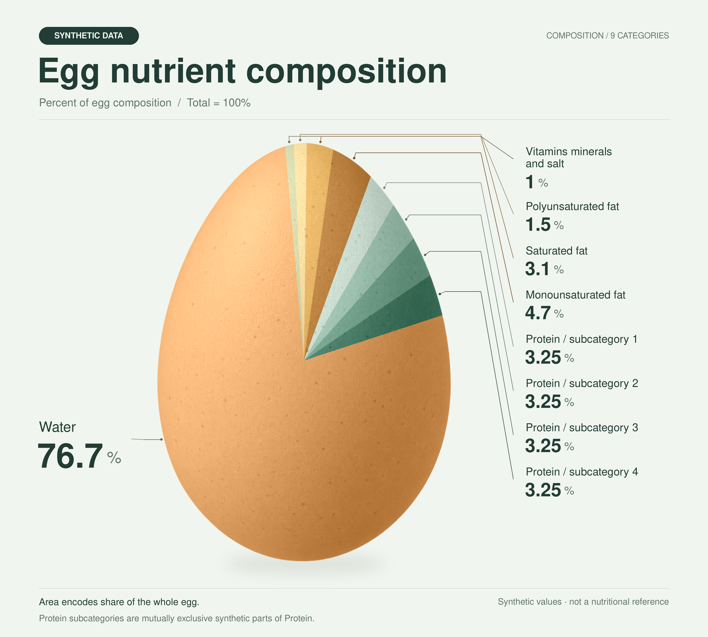
该轮修改与源码 First complete composition: generated eggshell, alpha-area-calibrated nine radial regions, external semantic labels and synthetic notice.
轮次记录 · 绘图代码 旧质量：pass；数值几何：True；结构：pass；意义：pass；微小标记：pass
独立评价与具体证据 九项数据、主题、单位及完整蛋体分区关系均保留，屏幕面积估计符合容差。仅顶部两条引线重合，造成局部追踪歧义，未发现重大缺陷。
completeness · pass ：九个类别和九个分区齐全，四项Protein子类别均保留，图面明确标示9 CATEGORIES。
numeric_text · pass ：可见值为1%、1.5%、3.1%、4.7%、四个3.25%及76.7%，与输入一致，总和100%。
binding · pass ：类别与数值正确配对，分区沿轮廓遵循输入顺序；引线端点对应相应区域。两条顶部引线重合造成轻微追踪歧义，见问题项。
geometry · pass ：直接原图颜色统计及边缘敏感性检查均在3个百分点容差内；完整蛋形无可见分区空洞，四个3.25%区域的面积估计相近。
source · pass ：已查看raw_01.png与egg_shell.png，生成素材的轮廓、孔隙和光影在最终主体中实质可见；render.py读取该素材并控制分区几何及文字。capture_render.py包含完整渲染保存流程，历史执行未独立核实。
integration · pass ：各色数据区域直接构成同一蛋体表面，共享纹理和光照，分界抵达外轮廓；阴影在蛋体下方，未遮挡数据或破坏包含关系。
readability · pass ：标题、九项类别、全部数值、百分比单位及页脚说明清晰，外部文字无裁切或相互遮挡；仅引线存在局部重合。
critical_structure · pass ：单枚近正面鸡蛋上窄下圆，壳面颗粒与明暗保留；九个闭合区域在约(859,1019)处汇聚并连续铺满蛋体，标签位于外部。
semantic_meaning · pass ：Egg nutrient composition、Percent of egg composition、Total = 100%及SYNTHETIC DATA明确表达主题、指标、单位和合成性质；页脚解释Protein子类为互斥合成组成部分。
reference_meaning · pass ：保留参考的营养成分占比与整枚蛋体分区融合关系；Protein拆成四项来自当前输入，未沿用参考旧数值。
small_mark_visibility · pass ：原分辨率下1%与1.5%均可见为独立壳面条带；在y=420处其可识别横向宽度约25与35像素，并向内部汇聚点收尖。小区域并非仅靠数字标签存在。
未发现输出丢失主题或物体—数据关系。四项Protein子类别及合成声明由冻结输入规定，属于同主题下的允许细化，不应归为参考意义丢失。最小分区仍可辨；面积测量的不确定性来自轮廓抗锯齿和颜色分割。
完整评审 代码复现像素一致：True；完整共同支持：True
首次评审状态 第2轮 · ok 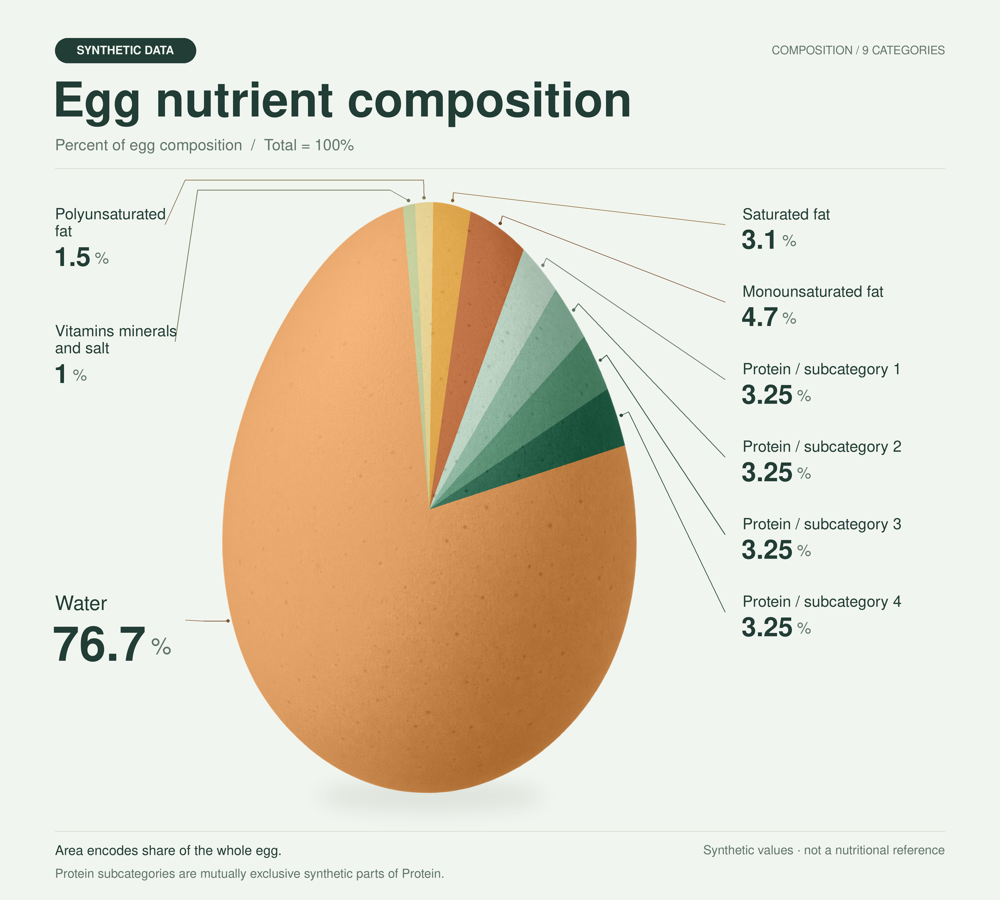
该轮修改与源码 Distribute the two tiny-component labels to the left, replace the crowded leader fan with direct right-side leaders, and distinguish warm colors without clipping shell highlights.
轮次记录 · 绘图代码 第3轮 · ok 该轮修改与源码 Rotate the area-CDF origin 15 degrees toward the upper-left shoulder so both small-component leaders can run directly outside the shell, with clear space after the label text.
轮次记录 · 绘图代码 第4轮 最终 · ok 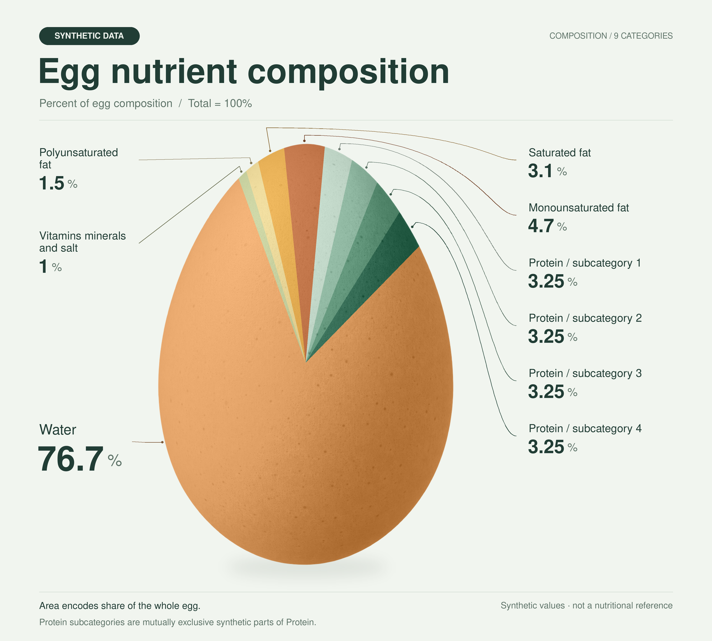
该轮修改与源码 Route right-side leaders as nonintersecting exterior curves; verify leader paths against the actual egg mask and text bounds so no data surface or label is crossed.
轮次记录 · 绘图代码 旧质量：pass；数值几何：True；结构：pass；意义：pass；微小标记：pass
独立评价与具体证据 通过。九类数据、面积比例、标签绑定及蛋体融合关系均符合要求。已保存review.json并通过schema校验；按追加要求未运行submit.py。
completeness · pass ：九个分区与九组标签完整，包含四个Protein子类及Water。
numeric_text · pass ：1%、1.5%、3.1%、4.7%、四个3.25%及76.7%均准确，总量100%与百分比单位明确。
binding · pass ：各引线可追踪至对应分区外缘附近，Water对应大面积橙色区，未见错绑。
geometry · pass ：像素面积估计最大偏差约0.083个百分点；分区依输入顺序排列，无可见空缺或重叠。
source · pass ：原始素材raw_01.png的蛋形、孔隙和光照在成图中实质可见；代码利用其衍生蛋壳素材控制分区面积并绘制文字。
integration · pass ：分区共同组成完整蛋体，纹理与光照跨区域连续，保留物体与数据融合关系。
readability · pass ：主题、合成声明、全部类别与数值、单位及解释文字清楚，无明显裁切或遮挡。
critical_structure · pass ：完整鸡蛋上窄下圆，具有壳纹理和明暗；各闭合分区从共同内部点延伸至外轮廓，Water占据其余连续区域。
semantic_meaning · pass ：营养构成主题、组成百分比、营养类别与Protein父类明确；合成声明及互斥子类说明保留统计解释。
reference_meaning · pass ：参考与成图均以完整蛋体分区表达鸡蛋营养组成；合成数值和Protein拆分属于输入规定的适配。
small_mark_visibility · pass ：最小两区在原始分辨率可辨；y=500处横向宽约28和38像素，y=800处约12和17像素，连续接入蛋体并自然收尖。
未观察到输出造成的语义损失。数值更新与Protein子类拆分属于冻结输入授权的适配，营养组成主题及参考融合关系保留；极窄汇聚尖端存在分辨率限制。
完整评审 代码复现像素一致：True；完整共同支持：True
首次评审状态 E09 · 无线运营网络的用户份额 /M032 完整通讯塔有非数据支架、上段桁架、横梁及类别圆牌。
参考图、共同要求与冻结变换 {'method': 'split interior parent categories; same total and extrema; explicit semantic parent retained', 'before_count': 5, 'after_count': 8, 'planned_count': 8, 'parent_totals_preserved': True}
共同设计 · 隐喻关键结构与意义 相近数据 · ok 输入数据
第1轮 首轮 / 最终 · ok 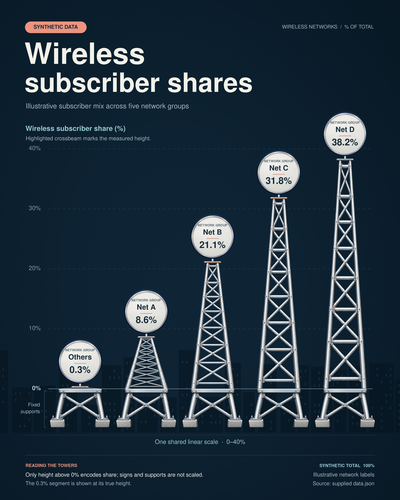
该轮修改与源码 Initial composition: generated silver lattice towers on a common 0–40% scale, exact category badges, true 0.3% height
轮次记录 · 绘图代码 旧质量：pass；数值几何：True；结构：partial；意义：pass；微小标记：partial
独立评价与具体证据 数据、标签绑定、共享比例和当前主题均正确，生成素材实质构成塔体。仅 Others 的微小上段无法辨清内部桁架，属于局部结构可辨性限制；未见重大可见违约。
completeness · pass ：五个类别和唯一用户份额系列齐全，顺序为 Others、Net A、Net B、Net C、Net D。
numeric_text · pass ：依次显示0.3%、8.6%、21.1%、31.8%、38.2%，合计100%，与冻结数据一致；正小值未舍为零。
binding · pass ：各圆牌同时显示对应类别和数值，通过短杆连接本塔顶部横梁，未见跨塔错配。
geometry · pass ：共同零线至高亮横梁的像素高度符合0–40%线性轴，五项误差均远低于容差；圆牌和固定支架明确排除在编码外。
source · pass ：已查看 raw_01.png 及提取的塔身、支架素材，其金属杆件、铆钉、混凝土脚及圆牌纹理与成图吻合；render.py 对这些素材缩放合成并绘制数据文字。
integration · pass ：数据直接改变上段金属塔身和顶横梁高度；底部支架接塔脚，顶部短杆接圆牌，形成连续塔体。视角和前后层次一致，未见破坏读数的接缝或遮挡。
readability · pass ：主题、SYNTHETIC DATA、百分比指标、刻度、所有类别和数值均可读；NETWORK GROUP 明示类别父级，底注说明固定支架和圆牌不编码。
critical_structure · partial ：四座较高塔的上段桁架、横梁、下部支架及圆牌连接清楚。Others 保留圆牌到支架的连接，但极薄上段内部交叉杆件不可辨。
semantic_meaning · pass ：Wireless subscriber shares、Wireless subscriber share (%)、网络分组标签及100%合计共同表达合成无线用户份额，未混入时间累计或其他统计含义。
reference_meaning · pass ：保留参考的无线用户份额主题、运营网络类别角色及塔高承载份额的融合关系；真实品牌、日期和旧数值按冻结输入替换，不要求沿用原统计。
small_mark_visibility · partial ：0.3%文字及高于零线约7px的横梁均可辨，未膨胀为最小高度；内部桁架已压缩为薄带，无法仅凭文字认定细部完整。
当前无线用户份额主题未丢失。真实运营商品牌和日期改为合成网络分组属于输入允许的改编，非输出语义错误。局部损失限于 Others 微小上段的桁架可辨性，与缩放及最终分辨率有关；不能据此判定数值错误或整体通讯塔隐喻丢失。
完整评审 代码复现像素一致：True；完整共同支持：False
首次评审状态 冲突数据 · ok 输入数据
第1轮 首轮 · ok 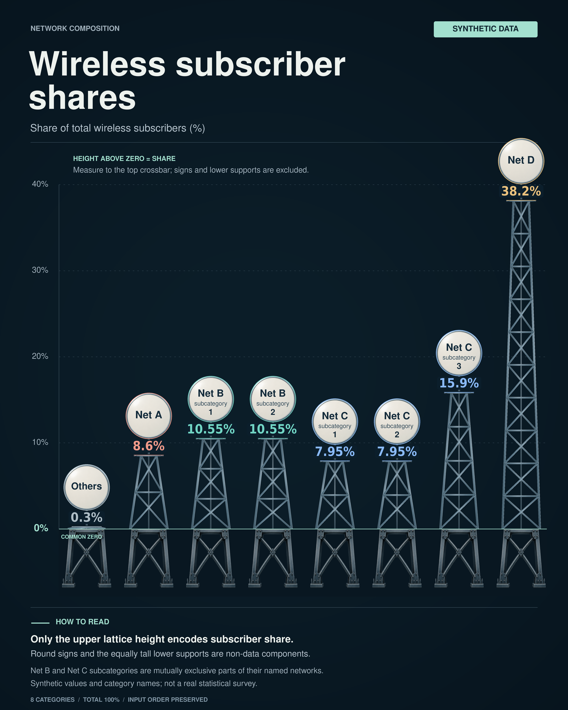
该轮修改与源码 First complete composition: generated metal tower parts, eight semantic labels, shared linear 0–40% height scale
轮次记录 · 绘图代码 旧质量：pass；数值几何：True；结构：partial；意义：pass；微小标记：partial
独立评价与具体证据 数值、类别绑定、主题语义和塔身高度编码正确。仅 Others 的微小数据上段呈薄带，交叉桁架可辨性部分保留；未见重大缺陷。
completeness · pass ：八个类别、八座塔、一个份额系列全部可见，顺序与输入一致，Net B两子类及Net C三子类均保留。
numeric_text · pass ：图面依次标出0.3%、8.6%、10.55%、10.55%、7.95%、7.95%、15.9%、38.2%；均与输入相同，合计100%。
binding · pass ：每组数值和圆牌位于对应塔顶上方；子类同时显示父网络名称及编号，未见串位。
geometry · pass ：共同0–40%线性轴明确；实测横梁位置与目标吻合，同值塔等高。仅零线以上至顶横梁的数据上段参与编码。
source · pass ：raw_01.png中的螺栓支架、浅色圆牌及金属表面在成图中可见且构成主体；prepare_assets.py裁切素材，render.py以这些素材控制杆件位置、上段边界和文字。
integration · pass ：份额直接控制通信塔上段高度；固定支架接于共同零线，圆牌通过短杆沿塔中心线连接，数值底板覆盖部分连接杆但不遮住数据横梁。
readability · pass ：标题、SYNTHETIC DATA、百分比单位、全部类别及数值清晰；读图说明明确排除圆牌和下支架，底注说明子类互斥及合成数据性质。
critical_structure · partial ：七座较高塔的下支架、上段侧杆及交叉桁架、顶横梁和类别圆牌关系可辨；Others保留下支架、圆牌和横梁，但微小上段的交叉结构难以辨认。未见破坏主体连接的错层或接缝。
semantic_meaning · pass ：Wireless subscriber shares及Share of total wireless subscribers (%)明确主题、指标和单位；网络父类、子类编号及互斥部分说明保留当前统计角色。
reference_meaning · pass ：保留参考图的通信网络主题、无线用户份额指标，以及通信塔本体承载数量的融合关系。真实品牌、日期和旧数值由冻结输入明确合成化，不要求沿用。
small_mark_visibility · partial ：Others的0.3%文字及略高于零线的横梁可见，未被夸大成明显高塔；约7像素的数据上段不足以稳定辨识交叉桁架，精细相对几何受分辨率限制。
当前主题和网络父子类语义没有输出性丢失。原参考的真实品牌、日期及数值替换属于冻结输入许可的合成化，不能算生成错误。局部损失仅为Others数据上段的结构可辨性；像素分辨率和杆件厚度共同限制其细节，不能据此断言通信塔隐喻整体丢失。
完整评审 代码复现像素一致：True；完整共同支持：False
首次评审状态 第2轮 最终 · ok 该轮修改与源码 Remove zero-line wording that overlapped the Others foundation; clarify the common 0% line in the reading key; preserve data geometry
轮次记录 · 绘图代码 旧质量：pass；数值几何：True；结构：partial；意义：pass；微小标记：partial
独立评价与具体证据 八类数值、绑定、比例和无线用户份额语义完整，生成金属素材与代码控制的塔高实际融合。仅 Others 的微小上段呈近乎实心的薄金属条，桁架细节部分丢失；未发现重大数据或结构错误。
completeness · pass ：八座塔、八个类别及单一用户份额系列完整；顺序与输入一致，Net B两个子类和Net C三个子类均保留父类名。
numeric_text · pass ：可见数值依次为0.3%、8.6%、10.55%、10.55%、7.95%、7.95%、15.9%、38.2%，均准确；总计100%与输入一致。
binding · pass ：圆牌、百分数与同中心线的塔逐一对应，无交叉引线、错位或子类混绑。
geometry · pass ：像素上缘读数支持共同0–40%线性尺度；两组相等数值分别齐平，全部高度偏差远小于满量程3%及3个百分点。0.3%仍有可见正高度。
source · pass ：已查看raw_01.png；其铆钉支架、金属圆牌及横梁表面在成图中实质可见。prepare_assets.py裁出对应部件，render.py将其用于下支架、圆牌和定量桁架构件。
integration · pass ：数据直接由零线上方的塔身至顶横梁承载；塔身下接等高非数据支架，上接圆牌支杆。圆牌和数值区位于数据端点之上，未遮住端点；未见破坏解释的透视、接缝或层级错误。
readability · pass ：主题标题、SYNTHETIC DATA、单位、八类名称、全部百分数、轴刻度及读图说明均可读，未见裁切或重叠。
critical_structure · partial ：八座塔均有圆牌、顶横梁及接地支架；七座的上段交叉桁架清晰，Others仅保留薄上段轮廓，内部桁架关系难辨。整体支架—数据塔身—横梁—圆牌关系保留。
semantic_meaning · pass ：标题和副标题明确无线用户占总用户的百分比；合成提示醒目，子类别显示父网络，脚注说明互斥子类及非真实调查，统计口径可理解。
reference_meaning · pass ：保留参考图中运营网络无线用户份额与通讯塔高度融合的关系。当前合成网络、子类和数值替换旧品牌及旧统计，符合冻结输入，未强加旧排名或日期。
small_mark_visibility · partial ：Others的非零横梁和薄上段可见，数值未归零或明显抬高；约7–8px高的上段无法清楚呈现交叉桁架。数值标签正确不能单独证明微小构件的相对精度。
品牌、旧统计日期及真实数值的替换属于冻结输入允许的合成改编，当前无线用户份额主题及类别角色没有输出层面的丢失。局部损失仅为Others上段桁架的可辨性，涉及微小真实高度下的呈现与分辨率限制，不外推为整体隐喻丢失或数据映射失败。
完整评审 代码复现像素一致：True；完整共同支持：False
首次评审状态 E10 · 石油出口去向份额 /M035 带头巾、白色长须与肩部的人物以分层油桶充当面部，桶沿、圆柱阴影保留。
参考图、共同要求与冻结变换 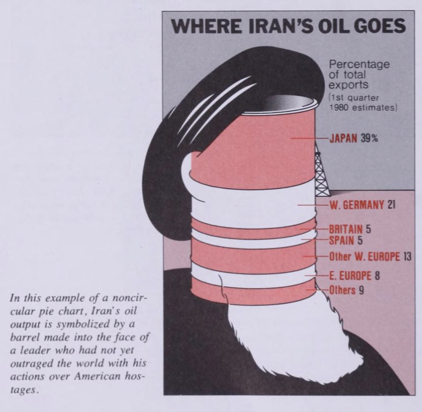
{'method': 'split interior parent categories; same total and extrema; explicit semantic parent retained; interior parent aggregates redistributed to retain the global minimum', 'before_count': 7, 'after_count': 11, 'planned_count': 11, 'parent_totals_preserved': False}
共同设计 · 隐喻关键结构与意义 相近数据 · ok 输入数据
第1轮 首轮 · ok 该轮修改与源码 First complete composition: generated portrait parts, proportional seven-layer barrel and bound labels
轮次记录 · 绘图代码 尚无有效独立评价，原技术状态另列。
代码复现像素一致：True；完整共同支持：False
首次评审状态 第2轮 最终 · ok 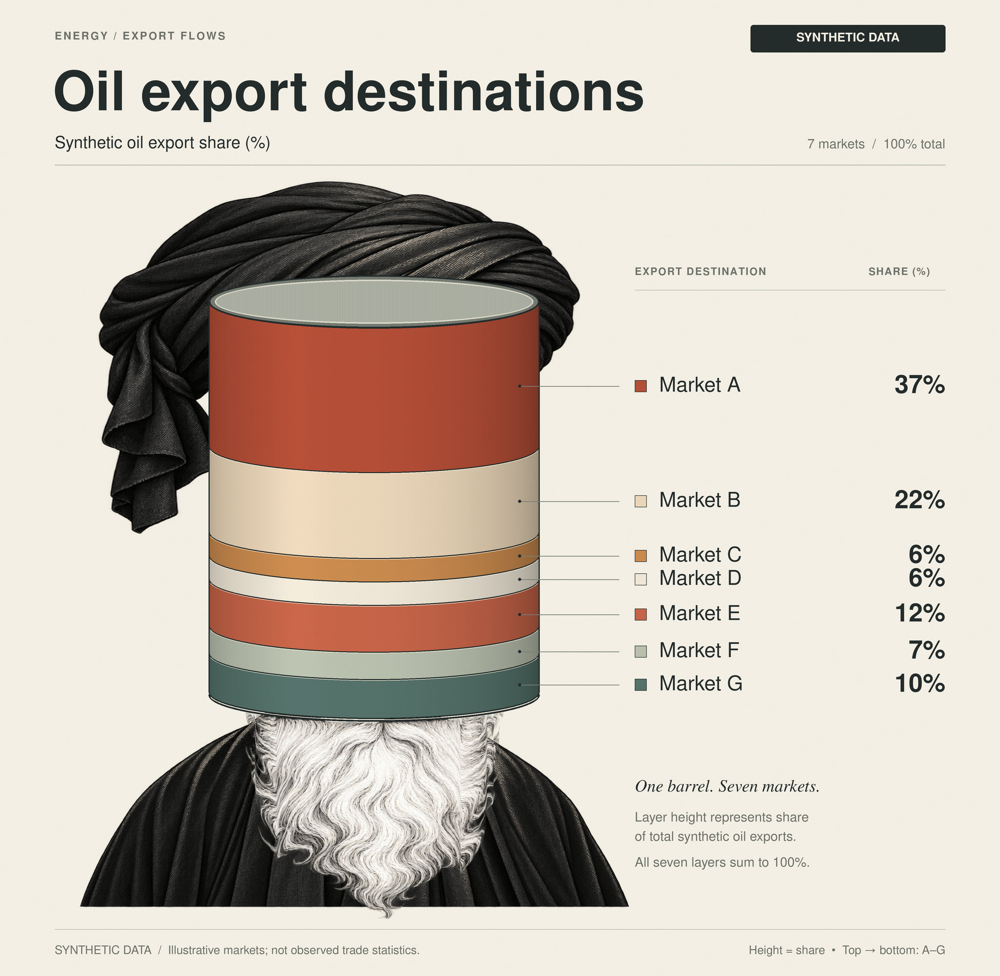
该轮修改与源码 Shorten all barrel layers with the same scale; give the generated white beard more natural length and shoulder support
轮次记录 · 绘图代码 尚无有效独立评价，原技术状态另列。
代码复现像素一致：True；完整共同支持：False
首次评审状态 冲突数据 · ok 输入数据
第1轮 首轮 · ok 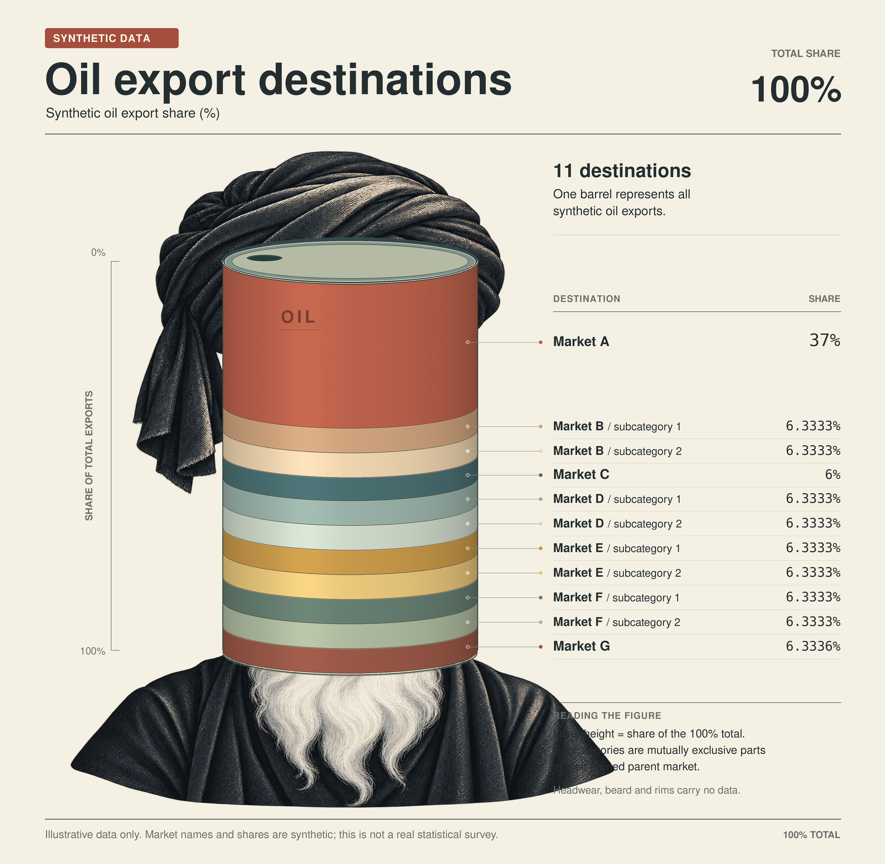
该轮修改与源码 Initial data-bound barrel portrait using generated turban and beard components; all 11 shares control translated elliptical layers
轮次记录 · 绘图代码 旧质量：pass；数值几何：True；结构：pass；意义：pass；微小标记：pass
独立评价与具体证据 数据、绑定、桶脸融合结构及当前统计含义符合要求；右下辅助说明局部低对比，判为minor。review.json已保存并通过schema校验。
completeness · pass ：11层和11行去向标签完整，顺序、父市场及子类别与输入一致。
numeric_text · pass ：37%、6%、8项6.3333%及1项6.3336%均正确，总计100%，合成声明和单位可读。
binding · pass ：各水平引线连接所属色层内部，颜色、顺序及数值一致。
geometry · pass ：像素测得约333px、54px及57px的层高，符合900px总高下的目标份额；分界弧线一致平移。
source · pass ：raw_01.png中的头巾、白须和双肩在成图中清晰匹配且构成主体；源码使用这些素材并控制桶身几何与文字。
integration · pass ：数据层直接组成桶形面部，头巾围绕上后方，桶底连接白须及双肩，未退化为旁置图表。
readability · pass ：必要标题、指标、单位、合成声明及全部类别数值清晰；辅助说明局部低对比另记minor。
critical_structure · pass ：分层油桶占据人物面部，头巾、长白须、肩部及桶沿连接关系明确，圆柱阴影保留。
semantic_meaning · pass ：石油出口去向、合成出口份额百分比及整桶代表全部出口的含义明确，类别保留父市场角色。
reference_meaning · partial ：保留出口去向份额和桶脸融合关系；原参考的伊朗、真实国家及1980年统计身份按冻结输入改为合成市场，属于允许改编。
small_mark_visibility · pass ：最薄层约54px，其余小层约57px，均可辨为连续圆柱侧壁分层，边界及引线明确。
真实国家及时期被合成市场替换来自冻结输入，不属于输出语义损失。输出保留桶脸融合及层高承载出口份额的关系；局部损失仅为辅助说明可读性。未推断参考人物的具体政治含义；末位份额差异不可见归于像素分辨率限制。
完整评审 代码复现像素一致：True；完整共同支持：True
首次评审状态 第2轮 最终 · ok 该轮修改与源码 Move explanatory text above the label rail to eliminate overlap with generated shoulders; preserve all data geometry
轮次记录 · 绘图代码 旧质量：pass；数值几何：True；结构：pass；意义：pass；微小标记：pass
独立评价与具体证据 通过。11项份额、顺序、标签及单位完整；可见层高符合数据，分层桶身实际替代人物面部，生成头巾、白须及衣肩构成主体。参考真实背景改为合成市场属于输入允许的改编。
completeness · pass ：11个桶身色层和11行去向标签齐全，按输入顺序从Market A至Market G排列，拆分项均保留语义父类。
numeric_text · pass ：图中37%、6%、八项6.3333%及末项6.3336%与数据一致，合计100%；百分号、系列单位和SYNTHETIC DATA均可见。
binding · pass ：11条水平引线各自起于对应色层内部，通向同一行类别和数值；没有交叉、串行或错配。
geometry · pass ：原图像素中的约900px数据总高被分为约333px首层、54px的Market C及约57px的其余层，符合当前比例，未见超过3个百分点的误差。
source · pass ：已查看raw_01.png及两个裁切素材；织物褶皱、白须和衣肩可在成图主体对应。render.py实际合成这些素材，并以数据控制桶身遮罩与文字。
integration · pass ：头巾位于桶身上后方并向左垂落；桶身下沿覆盖须根，白须向下伸入衣肩中央。色层本身构成面部位置的圆柱表面，桶盖、桶沿及阴影连续。
readability · pass ：主题、系列、单位、合成声明及全部类别数值均清晰；子类别说明和父类名称完整，主体未遮挡必要文字。
critical_structure · pass ：保留头巾—桶形面部—长白须—肩部的连接关系。数据承载区是桶身侧壁的连续弧形分层，头巾、盖沿与胡须不计入层高。
semantic_meaning · pass ：Oil export destinations与Synthetic oil export share (%)明确表达当前指标；整桶代表全部合成出口，层高表示份额，子类别分割其命名父类。
reference_meaning · partial ：保留参考的石油出口去向份额及油桶替代人物面部关系；伊朗、具体国家和1980年第1季度背景改为合成市场，是冻结输入允许的语义改编。
small_mark_visibility · pass ：最薄的6%层约54px，仍呈清楚、完整的圆柱环带，边界与引线可辨；没有为辨识而膨胀小层。极小份额差异的像素分辨率限制另列。
当前主题、指标、类别父子角色及份额统计含义未见输出丢失。参考地域、时期与真实国家标签的变化归因于许可的合成输入改编，故reference_meaning记partial而不判失败。仅凭图像不推断原人物的具体政治寓意；末位份额差异不可见属于分辨率限制。
完整评审 代码复现像素一致：True；完整共同支持：True
首次评审状态 E11 · 各地区意面产量 /M036 各束写实意面插入纸套，套口同高，国别标识、纸质折角和短面条露出关系保留。
参考图、共同要求与冻结变换 {'method': 'split interior parent categories; same total and extrema; explicit semantic parent retained', 'before_count': 6, 'after_count': 9, 'planned_count': 9, 'parent_totals_preserved': True}
共同设计 · 隐喻关键结构与意义 相近数据 · ok 输入数据
第1轮 首轮 · ok 该轮修改与源码 First complete candidate: photographic pasta and folded paper sleeves, common zero rim, linear data heights and exact labels.
轮次记录 · 绘图代码 尚无有效独立评价，原技术状态另列。
代码复现像素一致：True；完整共同支持：False
首次评审状态 第2轮 · ok 该轮修改与源码 Increase the common linear plotting span from 780 to 840 px to reduce UK raster quantization; move axis unit heading upward. No minimum mark or per-category scaling.
轮次记录 · 绘图代码 第3轮 最终 · ok 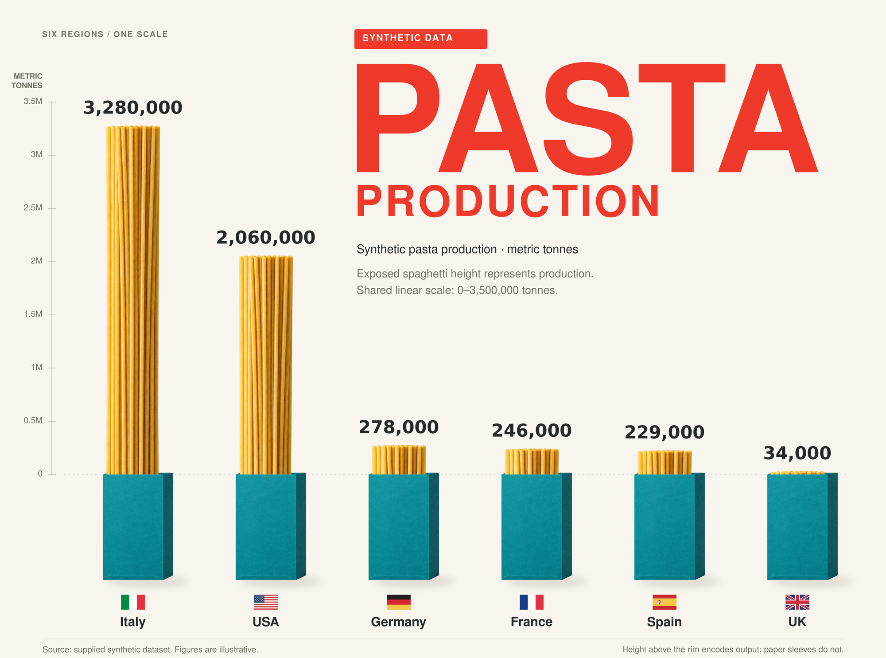
该轮修改与源码 Correct the shared pasta texture map after expanding the axis: keep source bottom cut ends below the rim so the tallest bundle stays inserted; retain all quantitative top positions.
轮次记录 · 绘图代码 尚无有效独立评价，原技术状态另列。
代码复现像素一致：True；完整共同支持：False
首次评审状态 冲突数据 · ok 输入数据
第1轮 首轮 / 最终 · ok 该轮修改与源码 First composition: generated pasta and folded sleeves, nine categories, common zero rim and linear exposed heights
轮次记录 · 绘图代码 尚无有效独立评价，原技术状态另列。
代码复现像素一致：True；完整共同支持：False
首次评审状态 E12 · 两类餐饮服务的支出变化百分比 /M037 白底双主体：蓝叉与红叉平行斜放，保留宽弧叉头、细颈、长柄和亮面彩色材质。每组的类别数量由数据决定，叉齿本身承担数值，标签紧邻对应齿尖或零值根部。
参考图、共同要求与冻结变换 {'method': 'append new synthetic categories within the existing value range; existing values unchanged; per-category intensity totals are not an aggregate control', 'before_count': 5, 'after_count': 8}
共同设计 · 隐喻关键结构与意义 相近数据 · pending 输入数据
等待完整渲染图；此项尚无质量结论。
冲突数据 · pending 输入数据
等待完整渲染图；此项尚无质量结论。
E13 · 同一桶原油对应的不同产品体积 /M045 黑色金属油桶剖开露出产品色层，桶沿、加强筋、切口金属、图例油滴及立体投影保留。
参考图、共同要求与冻结变换 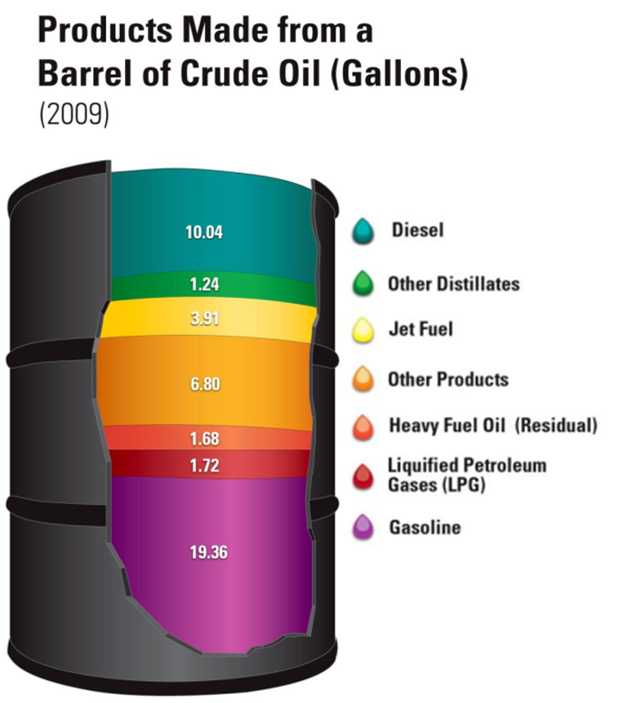
{'method': 'split interior parent categories; same total and extrema; explicit semantic parent retained', 'before_count': 7, 'after_count': 11, 'planned_count': 11, 'parent_totals_preserved': True}
共同设计 · 隐喻关键结构与意义 相近数据 · pending 输入数据
等待完整渲染图；此项尚无质量结论。
冲突数据 · pending 输入数据
等待完整渲染图；此项尚无质量结论。
E14 · 石油产品消费份额与用途 /M049 写实立式油桶分层，外围产品用途图注与对应层连接；保留油桶材质、用途图形和接触阴影。
参考图、共同要求与冻结变换 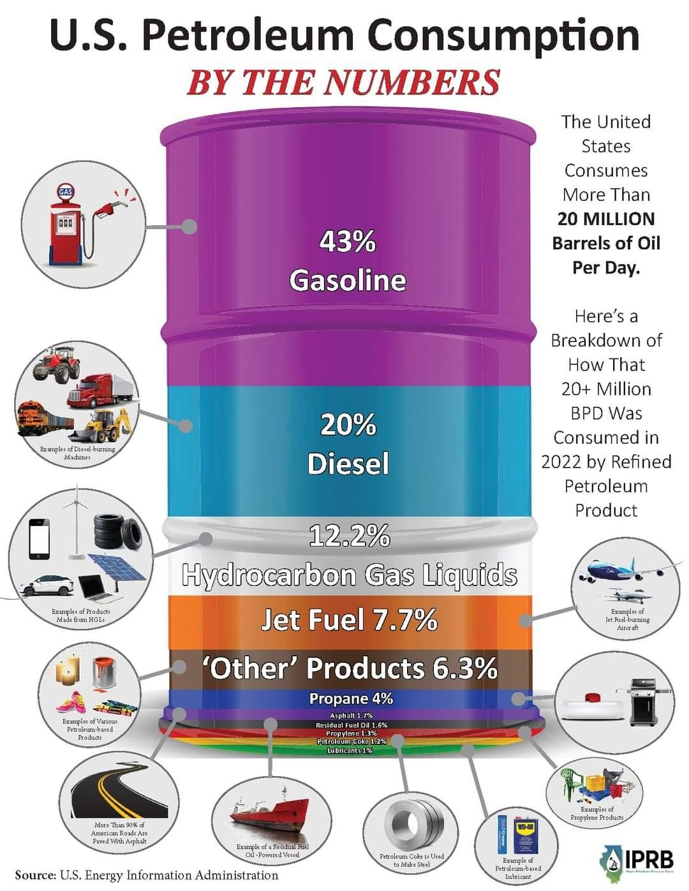
{'method': 'split interior parent categories; same total and extrema; explicit semantic parent retained', 'before_count': 11, 'after_count': 17, 'planned_count': 17, 'parent_totals_preserved': True}
共同设计 · 隐喻关键结构与意义 相近数据 · pending 输入数据
等待完整渲染图；此项尚无质量结论。
冲突数据 · pending 输入数据
等待完整渲染图；此项尚无质量结论。
E15 · 家庭室内各项用水份额 /M052 杯内分层液体、水龙头及水滴构成用水场景；杯壁、杯底与各用途引线保留。
参考图、共同要求与冻结变换 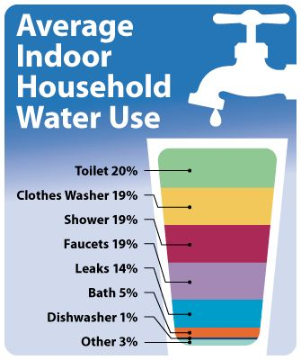
{'method': 'split interior parent categories; same total and extrema; explicit semantic parent retained', 'before_count': 8, 'after_count': 12, 'planned_count': 12, 'parent_totals_preserved': True}
共同设计 · 隐喻关键结构与意义 相近数据 · pending 输入数据
等待完整渲染图；此项尚无质量结论。
冲突数据 · pending 输入数据
等待完整渲染图；此项尚无质量结论。
E16 · 职业层级及长期失业人口构成 /M057 悬挂的写实长袖拼接上衣，保留白领、门襟、木衣架、金属挂钩、袖口、下摆、自然垂坠及袖身遮挡。数据色层直接铺满可见布料，标签外置。
参考图、共同要求与冻结变换 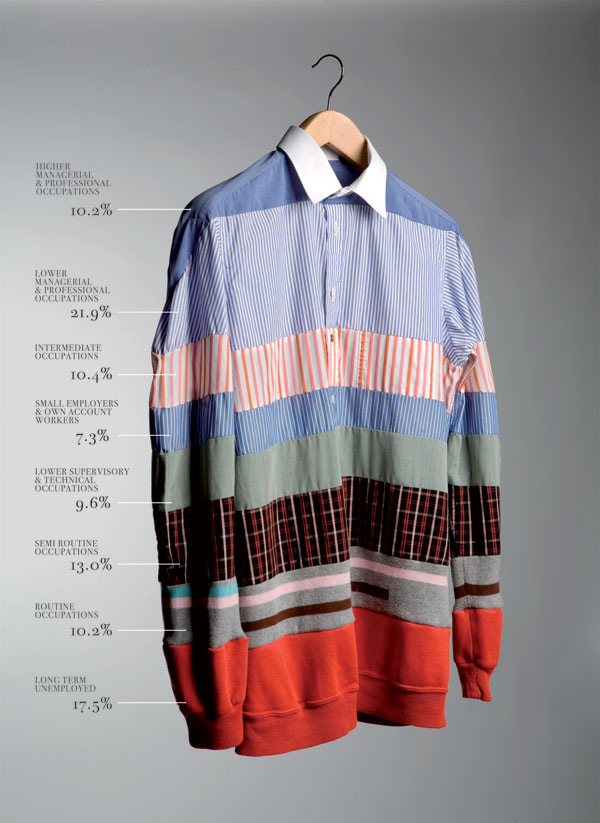
{'method': 'split interior parent categories; same total and extrema; explicit semantic parent retained; interior parent aggregates redistributed to retain the global minimum', 'before_count': 8, 'after_count': 12, 'planned_count': 12, 'parent_totals_preserved': False}
共同设计 · 隐喻关键结构与意义 相近数据 · pending 输入数据
等待完整渲染图；此项尚无质量结论。
冲突数据 · pending 输入数据
等待完整渲染图；此项尚无质量结论。
E17 · 家庭各项用水构成 /M059 完整尖顶圆腹水滴，各用途区域共用内部汇聚点，纸面印刷材质与外置引线保留。
参考图、共同要求与冻结变换 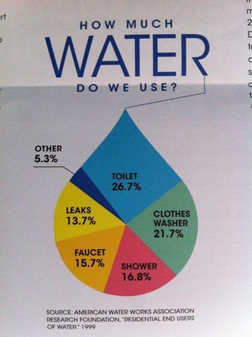
{'method': 'split interior parent categories; same total and extrema; explicit semantic parent retained', 'before_count': 6, 'after_count': 9, 'planned_count': 9, 'parent_totals_preserved': True}
共同设计 · 隐喻关键结构与意义 相近数据 · pending 输入数据
等待完整渲染图；此项尚无质量结论。
冲突数据 · pending 输入数据
等待完整渲染图；此项尚无质量结论。
E18 · 审计机构的审计费用份额 /M075 账表上的写实放大镜，镜面中共心环带、镜框、手柄与投影保留。
参考图、共同要求与冻结变换 {'method': 'split interior parent categories; same total and extrema; explicit semantic parent retained', 'before_count': 5, 'after_count': 8, 'planned_count': 8, 'parent_totals_preserved': True}
共同设计 · 隐喻关键结构与意义 相近数据 · pending 输入数据
等待完整渲染图；此项尚无质量结论。
冲突数据 · pending 输入数据
等待完整渲染图；此项尚无质量结论。
E19 · 米业市场份额 /M076 米粒摄影圆盘与盛米木勺融合，勺碗近中心、木柄向下，米粒和投影保留。
参考图、共同要求与冻结变换 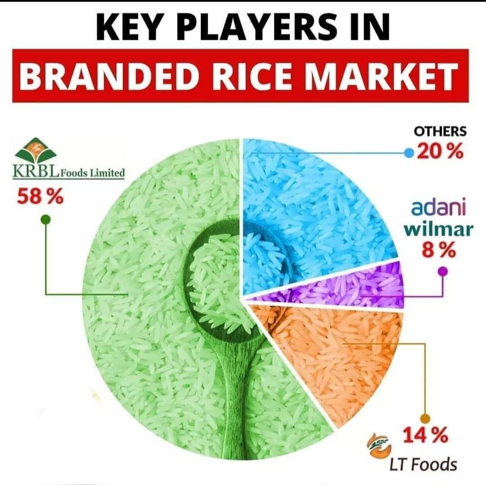
{'method': 'split interior parent categories; same total and extrema; explicit semantic parent retained', 'before_count': 4, 'after_count': 6, 'planned_count': 6, 'parent_totals_preserved': True}
共同设计 · 隐喻关键结构与意义 相近数据 · pending 输入数据
等待完整渲染图；此项尚无质量结论。
冲突数据 · pending 输入数据
等待完整渲染图；此项尚无质量结论。
E20 · 节日礼物预算偏好 /M081 顶视圆形宴会桌与人物、礼盒、食物接触，数据材质扇区直接构成桌面。
参考图、共同要求与冻结变换 {'method': 'split interior parent categories; same total and extrema; explicit semantic parent retained', 'before_count': 6, 'after_count': 9, 'planned_count': 9, 'parent_totals_preserved': True}
共同设计 · 隐喻关键结构与意义 相近数据 · pending 输入数据
等待完整渲染图；此项尚无质量结论。
冲突数据 · pending 输入数据
等待完整渲染图；此项尚无质量结论。
E21 · 年度森林火灾烧毁面积 /M003 水彩针叶林与年度折线叠合，保留完整森林场景。原设计为叠合，不强制树木轮廓成为数据线。
参考图、共同要求与冻结变换 {'method': 'reverse value order per series', 'time_points_unchanged': True, 'value_multisets_unchanged': True}
共同设计 · 隐喻关键结构与意义 相近数据 · ok 输入数据
第1轮 首轮 / 最终 · ok 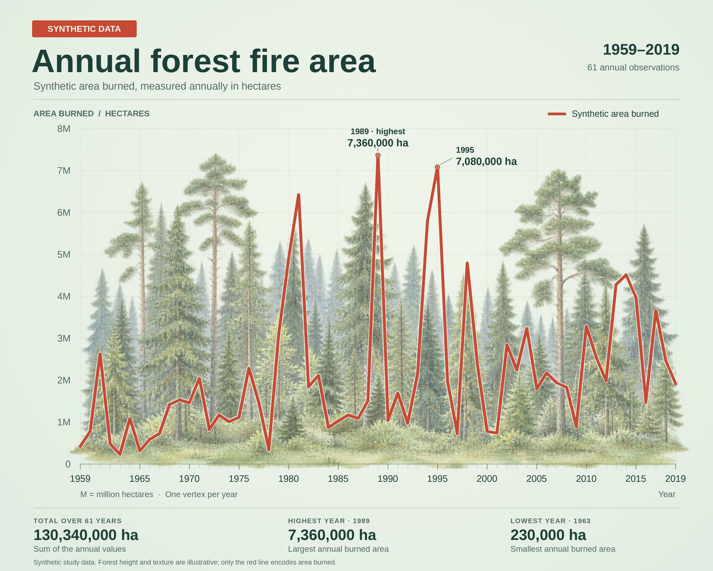
该轮修改与源码 First complete infographic: generated watercolor forest, all 61 annual vertices on a shared 0–8M hectares axis, peak labels and exact summary values.
轮次记录 · 绘图代码 旧质量：pass；数值几何：True；结构：pass；意义：pass；微小标记：pass
独立评价与具体证据 通过。61个年度点、线性量尺、数值标签及森林叠合结构均得到图像和源码支持，未发现违反冻结要求的可见缺陷。完整林景作为非定量素材与折线叠合，任务约束可兼容。
completeness · pass ：1959–2019共61年、单一烧毁面积系列；代码读取全部61点并连接60段，成图全部预期路径均有红色像素支持。稀疏年份刻度符合M1允许的密集年份标注方式。
numeric_text · pass ：可见1989年7360000 ha、1995年7080000 ha、最低1963年230000 ha，以及总计130340000 ha，均与冻结数据及独立求和一致；纵轴0–8M并解释M为百万公顷。
binding · pass ：两处峰值标签的引线分别指向1989和1995红色顶点；图例绑定红色线条与Synthetic area burned。Year、hectares及最高/最低年份没有错绑。
geometry · pass ：年度真实等间距、0–8000000线性纵轴与成图相符；全部顶点和连线通过独立红色像素覆盖核验，未见超过3%满量程的偏差。
source · pass ：已查看raw_01.png及forest_watercolor.png；其高松树、中央针叶树群和连续林地在成图中清楚出现，占据主要绘图区。render.py实际合成该素材，并由冻结数值计算折线和文字。
integration · pass ：完整森林与红线共享绘图区，林景在后、红线及标签在前；森林不是旁置装饰。没有要求将树冠边界当成数据线，成图也明确说明仅红线编码烧毁面积。
readability · pass ：原尺寸下主题、SYNTHETIC DATA、年份、单位、图例及统计摘要清楚；红线带浅色描边，跨越树冠时仍连续可辨，未见必要文字被遮挡。
critical_structure · pass ：针叶树冠连接树干，树干落在连续地表，多层树群构成完整林景；年度红线叠在同一场景前方。实际数据承载者是折线的纵向位置，森林轮廓和纹理不承担数值。
semantic_meaning · pass ：标题与副标题明确年度森林火灾烧毁面积，系列为合成烧毁面积、单位公顷，横轴为观测年份。底部总计注明年度值之和，不把主折线解释为跨年累计量。
reference_meaning · partial ：保留参考的森林火灾、年度烧毁面积及森林与折线叠合关系。原图加拿大真实统计的地域与实证语境未延续，是冻结输入明确采用合成研究数据的适配，不属于输出丢失。
small_mark_visibility · pass ：最小值1963年230000公顷的谷点在原尺寸下仍可见，中心目标高度约27像素，描边下缘与零线仍相隔约24像素；没有压为零或人为抬高。树木身份不依赖这个小值的几何高度。
当前年度、森林火灾、烧毁面积及公顷语义均保留，未见输出造成的语义损失。参考中的加拿大真实统计被冻结输入改为合成研究数据，reference_meaning的部分保留归因于该输入适配。参考和当前核心均要求叠合，不能额外要求树形随折线起伏。小值仍可辨，但精细相对误差受描边与栅格分辨率限制。
完整评审 代码复现像素一致：False；完整共同支持：False
首次评审状态 冲突数据 · ok 输入数据
第1轮 首轮 / 最终 · ok 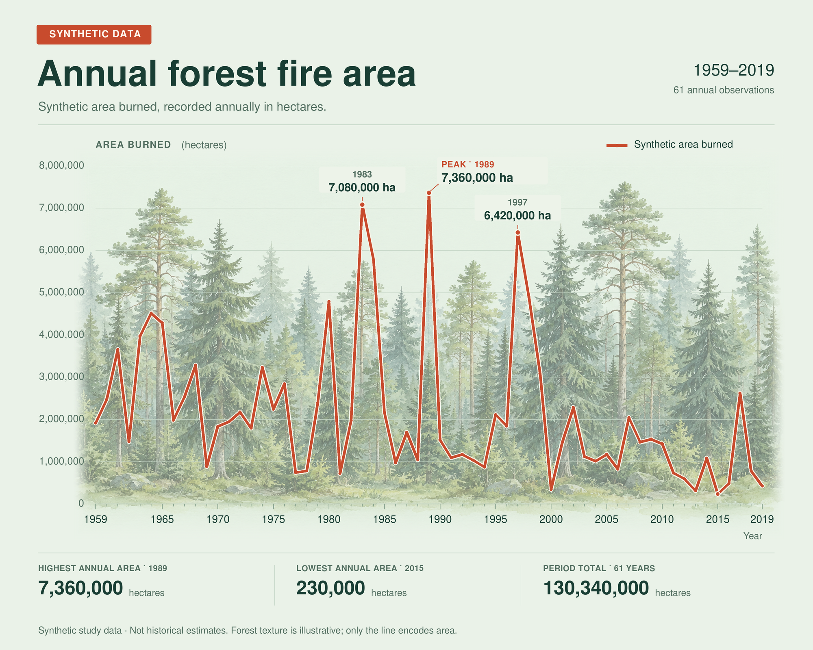
该轮修改与源码 Initial complete composition: watercolor forest overlaid with all 61 data-bound annual points, fixed 0–8M axis, exact peak labels and summary values.
轮次记录 · 绘图代码 旧质量：pass；数值几何：True；结构：pass；意义：pass；微小标记：pass
独立评价与具体证据 通过。年度点、轴尺度、关键标注及总量与冻结输入一致；完整水彩针叶林与折线的叠合关系保留，主题、年度角色和单位清楚。未发现违反必要要求的可见缺陷。
completeness · pass ：冻结数据含1959—2019年61个年度值、1个系列。源码逐年连接全部点，最终图逐点位置有折线像素；密集年份使用年度小刻度及稀疏文字刻度，符合M1。
numeric_text · pass ：可见1983年7,080,000、1989年7,360,000、1997年6,420,000；最低2015年230,000、61年总量130,340,000，均与输入及独立求和一致。0—8,000,000轴刻度与hectares单位正确。
binding · pass ：高点标签与对应年份顶点通过邻接或引线绑定；年份沿横轴递增，图例颜色对应唯一橙红折线，最低值卡片明确绑定2015年。
geometry · pass ：源码按真实年份及0—8,000,000线性尺度控制坐标，项目输入与冻结输入一致。最终像素的全部顶点位置、段内轨迹及高低点均与该映射相符，未见超出3%满量程的偏差。
source · pass ：已查看原始森林素材与透明度处理素材，两者RGB像素一致；左右高松树、中部针叶树及林地构图在最终图主体中可辨。render.py实际加载森林素材，并用代码绘制数据几何和文字。
integration · pass ：完整森林覆盖主要绘图区，折线以前景层穿过树冠、树干和林地；森林未被移到图旁。浅色描边使折线与树木清楚区分，未见遮挡数据或破坏对象身份的拼缝。
readability · pass ：原始2000×1600图中，合成提示、主题、系列、单位、轴刻度、关键点及底部统计均清晰，无必要文字截断或明显重叠。
critical_structure · pass ：多层针叶树的树冠与树干相连，树干落在连续林地上；折线覆盖同一森林场景。实际数据承载位置是折线轨迹，树冠轮廓不承担数量编码，符合冻结的叠合关系。
semantic_meaning · pass ：Annual forest fire area、Synthetic area burned、hectares及Year共同明确年度森林火灾烧毁面积。61 annual observations说明年度观测角色；PERIOD TOTAL明确期间求和，折线未被解释为累积量。
reference_meaning · pass ：保留参考的年度森林火灾烧毁面积主题、年份—公顷统计关系及森林叠合。当前冻结输入明确采用合成数据，不要求原真实数值、峰谷或加拿大来源标识。
small_mark_visibility · pass ：2015最低点与零线之间仍有约24像素间隔，标记及相邻折线可分辨；2000、2013等低谷也保持正值位置。森林结构独立于这些小值，不需要放大小值来维持物体身份。
未见输出造成的主题或统计角色丢失。参考的真实加拿大历史语境由冻结输入改为明确标识的合成年度数据，属于允许的输入适配，不是生成缺陷；当前主题及叠合结构延续。树木不与新峰谷对齐是冻结要求允许的非数据构图。小值剩余不确定性来自像素分辨率与线宽。
完整评审 代码复现像素一致：False；完整共同支持：False
首次评审状态 E22 · 债务与经济产出之比 /M004 竖版印刷织物质感星条旗，横纹和蓝色星区裁入同一年度面积图。保留完整年度点、历史实线与预测虚线的区别、预测分界和英文主题说明；标题不预设涨跌。
参考图、共同要求与冻结变换 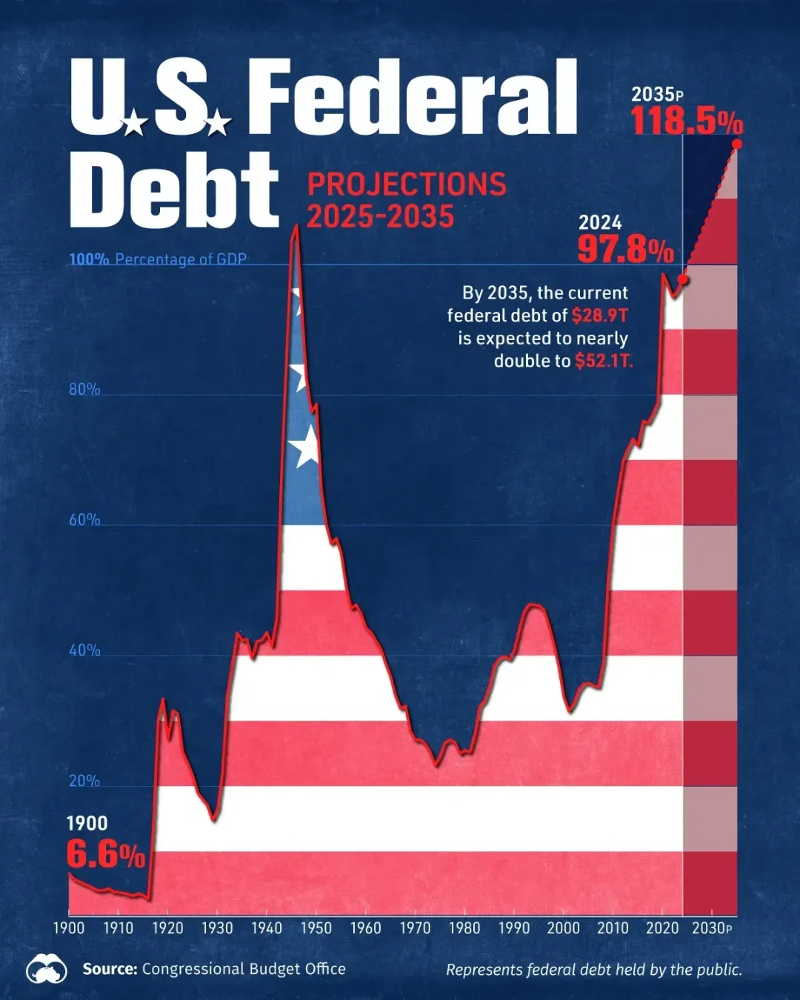
{'method': 'reverse value order per series', 'time_points_unchanged': True, 'value_multisets_unchanged': True}
共同设计 · 隐喻关键结构与意义 相近数据 · ok 输入数据
第1轮 首轮 / 最终 · ok 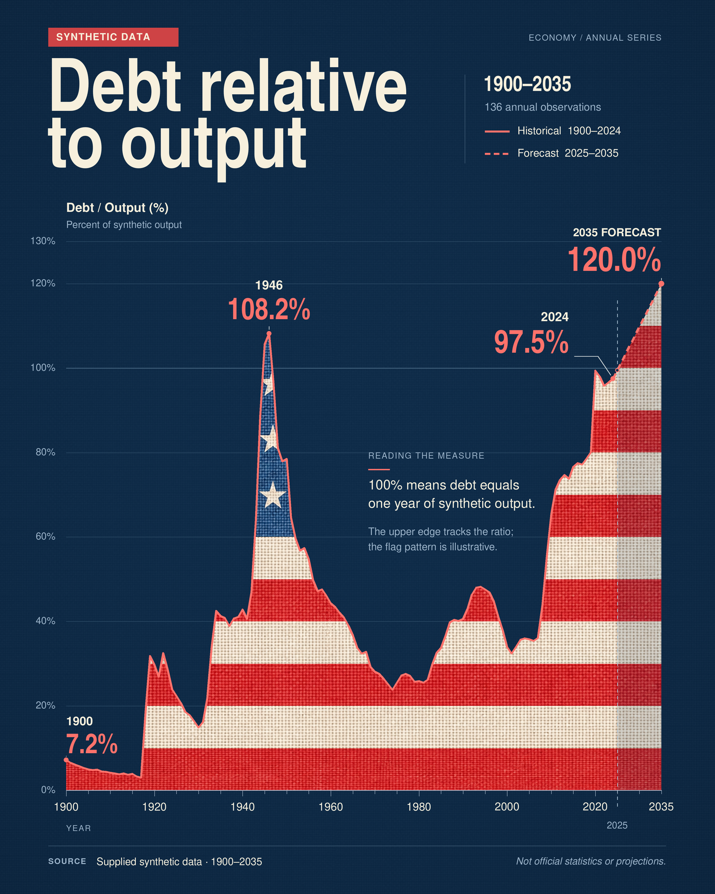
该轮修改与源码 Initial textile flag area chart with all annual vertices, linear 0–130% axis, and 2025 forecast boundary
轮次记录 · 绘图代码 旧质量：pass；数值几何：True；结构：pass；意义：pass；微小标记：pass
独立评价与具体证据 通过，已保存review.json。未见违反冻结要求的可见缺陷；真实统计到合成统计的改编归因于输入。
completeness · pass ：冻结数据与项目数据一致；全部136个年度进入路径，包括125个历史点和11个预测点。
numeric_text · pass ：1900年7.2%、1946年108.2%、2024年97.5%、2035年120.0%及年度数量均正确。
binding · pass ：关键标签连接对应数据点；2024历史末点与2025预测起点及分界可区分。
geometry · pass ：年度间距和0–130%共同线性轴正确；实际曲线及预测边缘像素核对均在容差内，面积闭合至零线。
source · pass ：已查看原始生成旗帜和处理后素材；织物与星区实质用于主体，源码控制定量裁切和文字，像素对比支持对应关系。
integration · pass ：星区和横纹包含于同一面积，旗帜上缘直接承载比例；未见影响结构或读数的错位、遮挡或接缝。
readability · pass ：主题、合成声明、单位、年份、阶段图例、关键数值和来源说明均清楚，说明文字不遮挡数据边界。
critical_structure · pass ：蓝色星区与红白横纹接合于同一织物面积，下接零线，上缘区分历史实线与预测虚线，2025分界明确。
semantic_meaning · pass ：债务／产出、合成产出百分比和年度角色明确；100%解释正确，未误作组成比例或跨年累计。
reference_meaning · partial ：保留债务相对产出、年度变化、预测和旗帜融合关系；真实联邦债务／GDP改为冻结输入指定的合成债务／产出，属于允许改编。
small_mark_visibility · pass ：早期低值仍形成连续窄织物带；最小3.0%约28像素高，未消失或压零，并与整体旗帜保持连接。
当前主题和统计含义未见输出丢失。真实统计口径替换为合成债务／产出属于输入允许的改编，参考意义因此记为部分保留，不列生成缺陷。微小年际差异的辨识受像素和描边限制。
完整评审 代码复现像素一致：True；完整共同支持：True
首次评审状态 冲突数据 · ok 输入数据
第1轮 首轮 · ok 该轮修改与源码 Initial textile flag area, all 136 annual points, shared 0–130% scale and explicit forecast boundary
轮次记录 · 绘图代码 旧质量：pass；数值几何：True；结构：pass；意义：pass；微小标记：pass
独立评价与具体证据 数据、标签及星条旗面积融合符合冻结要求，未发现实质性可见缺陷。参考图的真实统计口径改为当前合成债务/产出，属于输入指定的适配。
completeness · pass ：冻结数据含136个连续年度、1个系列；项目数据与冻结数据一致。源码逐点构造闭合面积，终图覆盖1900–2035，含125个历史点和11个预测点。
numeric_text · pass ：可见1900年120.0%、1989年108.2%、2018年3.0%、2024→2025年4.0%→4.2%、2035年7.2%，均与数据一致；最高、最低年份正确。
binding · pass ：关键年份与比例成对显示，最高点、内部峰、最低点及末点有明确引线或端点对应；历史/预测图例与线型、2025年分界一致。
geometry · pass ：时间等距、0–130%共同线性轴及零基线清楚；终图全部历史点与预测点附近均检测到对应边界像素，误差远低于容差；低值未被归零或设置显著高度下限。
source · pass ：已查看raw_01.png及flag_surface.png；生成素材的星形、红白横纹和织纹在主体内明显可见。prepare_assets.py进行重着色，render.py控制数据裁切与文字。
integration · pass ：蓝色星区与横纹同属一个闭合织物面积，上缘直接承载年度比例；没有旁置旗帜替代融合。纹样与轮廓同为正视平面，无破坏读数的错层或接缝。
readability · pass ：SYNTHETIC DATA醒目，债务/产出主题、指标、单位、年份轴、预测区间及合成来源说明均可读；密集年度使用间隔刻度与关键点标签符合许可。
critical_structure · pass ：竖版图中蓝色星区包含白星，并与下方红白横纹连续组成同一旗帜面积；底部接触共同零线，上方数据折线裁切全部纹样。历史实线、预测虚线与预测分界均保留。
semantic_meaning · pass ：Debt relative to output、Debt / Output (%)及percent of synthetic output明确表达债务与合成经济产出的年度比值。图面说明纹样不承载额外系列，未把比值误作分区占比或跨年累积。
reference_meaning · partial ：保留参考图的债务相对产出、年度比例与星条旗面积融合；原图美国公众持有联邦债务/GDP及真实来源，被冻结输入改为一般合成债务/产出，未要求保留旧数值或上涨结论。
small_mark_visibility · pass ：2018年及预测尾段仍有与主体连续的红色织物填充，未退化为仅有数字标签。最小值区域约25px高，末点约60px高；细小年度波动的独立辨识受线宽与像素限制。
未发现输出造成的当前主题或核心融合关系丢失。参考图真实美国联邦债务/GDP口径向合成债务/产出的变化来自冻结输入，故参考意义记为部分保留，不归为生成缺陷。低值保留织物与数据边界关系；亚像素年度差异属于分辨率限制。
完整评审 代码复现像素一致：True；完整共同支持：True
首次评审状态 第2轮 最终 · ok 该轮修改与源码 Move key labels clear of grid and historical outline; use 4× antialiasing and preserve the historical endpoint above the forecast connector
轮次记录 · 绘图代码 旧质量：pass；数值几何：True；结构：pass；意义：pass；微小标记：pass
独立评价与具体证据 未发现违反冻结要求的可见缺陷。review.json已保存并通过schema校验；按补充要求未运行submit.py。
completeness · pass ：全部136个年度点进入路径，包括125个历史点和11个预测点；项目数据与冻结数据一致。
numeric_text · pass ：1900年120.0%、1989年108.2%、2018年3.0%、2024→2025年4.0%→4.2%、2035年7.2%均准确。
binding · pass ：关键点标签与对应边界通过引线连接，历史／预测转换、年份及指标单位绑定明确。
geometry · pass ：年度线性排列，旗帜上缘编码比值，面积闭合至零线；原图描边像素与预期位置一致，误差在容差内。
source · pass ：已查看原始及处理后素材，星形、横纹和织纹实质用于最终主体；源码控制数据裁切、线条和文字。
integration · pass ：星区和横纹共同包含于唯一数据面积，表面与边界对齐，未见脱离主体、明显溢出或错误遮挡。
readability · pass ：主题、合成提示、指标、单位、年份、关键值、历史／预测图例和来源说明均清晰。
critical_structure · pass ：蓝色星区与红白横纹接合并裁入同一面积；旗帜上缘承载数据、底部接零线，实虚线及预测分界保留。
semantic_meaning · pass ：明确表达合成债务占经济产出的百分比及年度历史／预测角色，未把旗帜横纹误作额外系列。
reference_meaning · partial ：保留债务／产出比值与旗帜面积融合。参考的真实美国联邦债务／GDP口径改为冻结输入指定的合成债务／产出，属于允许的改编。
small_mark_visibility · pass ：右端窄面积仍可辨为连续红色织物并接触零线。2018点附近检出y=1710的描边，零线约y=1735，支持约25px的小值高度；不足1px的年度差异仍有分辨率限制。
未发现输出丢失当前主题或数据承载关系。参考真实统计口径的变化来自允许的输入改编，不计作生成缺陷；小值差异的不确定性来自像素分辨率及线宽。
完整评审 代码复现像素一致：True；完整共同支持：True
首次评审状态 E23 · 女子篮球比赛平均观众数 /M009 背面举球的完整篮球运动员与年度折线叠合，球、双臂和球衣保留。
参考图、共同要求与冻结变换 {'method': 'reverse value order per series', 'time_points_unchanged': True, 'value_multisets_unchanged': True}
共同设计 · 隐喻关键结构与意义 相近数据 · ok 输入数据
第1轮 首轮 · ok 该轮修改与源码 First complete poster: generated full athlete, all 15 values and years, shared 0–1500 linear scale
轮次记录 · 绘图代码 旧质量：pass；数值几何：True；结构：pass；意义：pass；微小标记：pass
独立评价与具体证据 15个年度数值、标签绑定和0–1500线性映射正确；背面举球的完整球员与折线保持叠合，当前主题、指标、单位及合成数据声明完整可读。未发现需要列为问题的可见缺陷。
completeness · pass ：2010–2024共15个年份、15个点、14段连接线及15个数值均可见；单一Average viewers per game系列、单位、轴范围和合成数据声明齐全。
numeric_text · pass ：图中依次显示246、260、170、221、234、197、217、163、228、241、202、303、366、432、1,360，与冻结数据逐项一致；0、500、1,000、1,500刻度及15 annual observations准确。
binding · pass ：各点按2010–2024从左到右排列，并与下方年份刻度对齐；前14个值交替置于对应点上下，末点旁的1,360与2024明确绑定。
geometry · pass ：成图独立识别出15个圆环，按可见轴换算后最大误差约0.79千人/场；线段连续经过全部点，前14年低位波动、2024升至1360的位置与数据一致。render.py确以同一0–1500仿射坐标控制全部点和折线。
source · pass ：已查看raw_01.png，其篮球、手臂、发束、球衣褶皱、短裤及鞋形与成图中央大幅人物对应。prepare_assets.py进行双色与透明度处理，render.py实际引用player_duotone.png作为主体；素材具有实质可见面积。
integration · pass ：人物与图表共享同一画面，白色折线在双小腿前连续穿过，网格也叠在人物前；这是参考要求的前景二维叠合。未见破坏部件连接、层次或定量路径的遮挡及纹理接缝。
readability · pass ：女子篮球观众主题、每场平均指标、千名观众/场单位、所有年份和数值在原分辨率下可读；标题覆盖人物局部但未遮住数据标签，页脚声明完整。
critical_structure · pass ：中央为完整背面球员：篮球在头顶，两手贴住球的两侧，双臂连接肩部，球衣、短裤、双腿和鞋连续可辨。年度折线叠在人物前，实际承载数值的是点中心及连接线的纵坐标，人物轮廓不额外编码数量。
semantic_meaning · pass ：WOMEN'S BASKETBALL VIEWERS结合Average viewers per game、thousand viewers per game、YEAR和2010–2024，明确表达女子篮球逐年每场平均观众数；醒目的SYNTHETIC DATA及页脚避免将其当作真实统计。
reference_meaning · partial ：保留了女子篮球观众主题、逐年平均观众指标以及持球球员与折线叠合的关系。参考中特指WNBA常规赛、ESPN及旧增长叙事，冻结输入改为一般女子篮球合成序列，故具体统计范围仅部分延续；该变化归于输入改编。
small_mark_visibility · pass ：前14个圆环的深色主体约16×16像素，彼此分离，浅色连线在人物及背景上均可追踪；最小值163的点距零线约109像素，未出现零化或不可辨的短小几何，像素换算值约162.79。
未见输出丢失当前主题、指标、单位、年度角色或核心叠合结构。参考中联盟、播出平台及旧真实增长叙事的泛化来自冻结输入允许的合成主题改编，不归为生成失败。姿态和折线穿过人物的部位有所适配，持球连接与叠合关系仍在；像素定位存在约1像素限制。
完整评审 代码复现像素一致：True；完整共同支持：True
首次评审状态 第2轮 最终 · ok 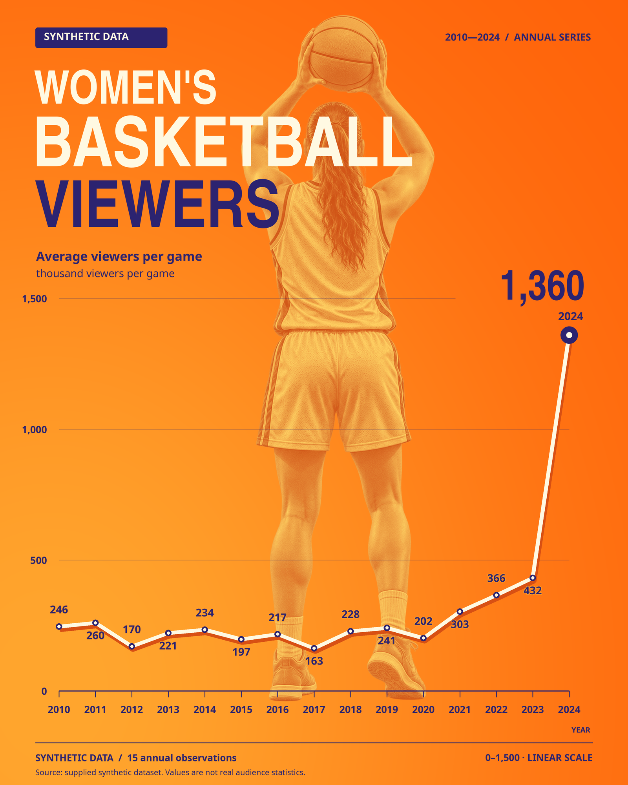
该轮修改与源码 Strengthen athlete texture and silhouette contrast; derive date range, observation count, and axis captions from data
轮次记录 · 绘图代码 旧质量：pass；数值几何：True；结构：pass；意义：pass；微小标记：pass
独立评价与具体证据 数据、标签、线性刻度及运动员与折线的叠合关系符合冻结要求，未发现实质缺陷。参考统计范围的简化来自当前输入。
completeness · pass ：2010—2024按顺序呈现15个年度刻度、15个点及一条连续折线，无缺失系列或年份。
numeric_text · pass ：图中246、260、170、221、234、197、217、163、228、241、202、303、366、432、1,360与输入逐项一致；轴值及千名观众/场单位正确。
binding · pass ：各数值紧邻对应点，上下交错但不串位；1,360与2024终点直接对应。所有点横向对齐相应年份。
geometry · pass ：像素核查支持统一0—1500线性纵轴及等距年度横轴；15点反推误差约不超过1千人，明显低于45千人容差。
source · pass ：已查看raw_01.png，其举球姿态、马尾、球衣褶皱及鞋部纹理在成图主体中可辨。prepare_assets.py处理该素材，render.py合成player_duotone.png并控制定量点位、折线与文字。
integration · pass ：人物占据中央主体，折线从前景横穿脚踝区域，网格覆盖人物场景，保留参考的叠合关系；数据由线和点的位置承载，无需将身体轮廓作为数量边界。
readability · pass ：主题、SYNTHETIC DATA、每场平均指标、千人单位、全部年份和数值均可读，无必要文字被截断或遮挡。
critical_structure · pass ：篮球位于头顶并与双手接触，双臂连接肩部，背面球衣、短裤、双腿及鞋完整可辨。折线在人物下肢前方叠合，未替换为旁置装饰物。
semantic_meaning · pass ：WOMEN'S BASKETBALL VIEWERS与Average viewers per game、thousand viewers per game、YEAR共同明确女子篮球年度每场平均观众数；合成数据声明醒目，无累计或组成比例歧义。
reference_meaning · partial ：保留女子篮球平均观众数、年度序列及举球人物叠线关系。参考的WNBA常规赛/ESPN限定未延续，但当前冻结输入已使用更宽的女子篮球主题，属于输入范围改编，不构成输出缺陷。
small_mark_visibility · pass ：最小值163的点距零线约109像素；低值点均可分辨，约16像素直径的常规标记未相互合并。图线穿过人物区域仍连续清晰，未见以最小高度夸大低值。
未发现当前主题、指标或关键物理关系的输出丢失。参考WNBA/ESPN及常规赛范围简化归于冻结输入的允许改编；不要求复现旧增长标题或真实统计。原设计的数据关系为场景叠合，成图保持该关系。原分辨率足以辨认全部点与人物连接关系，像素级误差不影响结论。
完整评审 代码复现像素一致：True；完整共同支持：True
首次评审状态 冲突数据 · ok 输入数据
第1轮 首轮 · ok 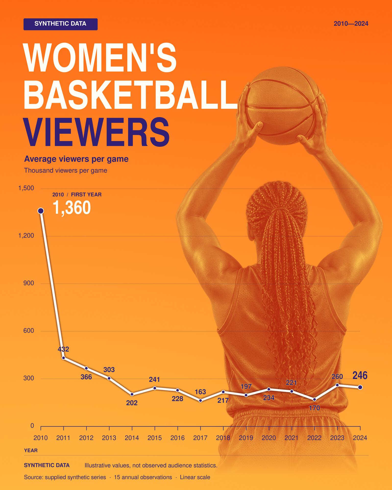
该轮修改与源码 First complete composition: rear-view athlete, shared linear axis, all 15 data-bound years and values
轮次记录 · 绘图代码 旧质量：pass；数值几何：True；结构：pass；意义：pass；微小标记：pass
独立评价与具体证据 通过。15个年度点、数值、年份绑定及0–1500线性轴一致；背面举球球员与折线的叠合关系、当前主题和统计单位保留。未发现需要列为问题的可见缺陷。
completeness · pass ：2010—2024共15个年份、15个圆点和单一年度系列齐全，白色折线连续连接全部点。
numeric_text · pass ：可见数值依次为1360、432、366、303、202、241、228、163、217、197、234、221、170、260、246，与冻结数据一致。
binding · pass ：圆点与对应年份刻度纵向对齐；数值紧邻对应点，首点另标2010 / FIRST YEAR，未见错绑或跨年歧义。
geometry · pass ：零起点、0–1500共用线性轴正确；15点的PNG像素反算最大误差约满量程0.075%，折线峰谷顺序与数据一致。
source · pass ：已查看raw_01.png、athlete_duotone.png及资产清单，最终人物的篮球、发辫、双臂和球衣与素材对应。render.py实际合成该素材，并从数据计算点位、折线及文字；捕获脚本已查看但未执行。
integration · pass ：人物构成右侧大面积主体，后半段折线直接穿过球衣下部并处于人物前层，保留参考的场景叠合关系；不要求二维折线贴合衣料透视。
readability · pass ：主题标题、Average viewers per game、Thousand viewers per game、YEAR、15个数值及年份均清楚可读；SYNTHETIC DATA醒目，页脚明确为示意数据。
critical_structure · pass ：背面头部与球衣上身相连，双臂自肩部向上弯曲，双手接触并持住头顶篮球；球体、手臂和球衣边界可辨。数据由前层折线的圆点纵坐标承载，人物部件没有替代量值边界。
semantic_meaning · pass ：女子篮球、每场平均观众数、千名观众/场、年度2010—2024与合成数据身份均明确；单系列年度比较含义完整，没有复制参考的旧上升结论。
reference_meaning · partial ：保留女子篮球观众及每场平均收视的联系。参考中的WNBA常规赛/ESPN范围被冻结输入泛化为合成女子篮球比赛主题，属于输入允许的改编，并非生成图遗漏必需语义。
small_mark_visibility · pass ：最小值163的圆点距零线约105.7像素；内部圆点紫色区域约10×10像素，白边和连线清楚。低值点均可区分，未见归零、遮蔽或为辨认而抬高数值几何。
未发现输出造成的当前主题、指标或物体关系损失。参考赛事/平台范围的泛化及真实数据改为合成数据来自冻结输入；旧上升宣传不适用于当前数值，不作为缺陷。参考和最终图均为人物与折线叠合，未强加人物轮廓承载数值的融合要求。像素精度限制已单列，不影响此次点位及低值可辨性判断。
完整评审 代码复现像素一致：True；完整共同支持：True
首次评审状态 第2轮 最终 · ok 该轮修改与源码 Move the 2011 value label clear of the steep first segment; preserve all geometry and artwork
轮次记录 · 绘图代码 旧质量：pass；数值几何：True；结构：pass；意义：pass；微小标记：pass
独立评价与具体证据 通过。数据、年份绑定、线性几何及人物叠合关系符合要求。review.json已保存并通过schema校验；按追加要求未运行submit.py。
completeness · pass ：15个年度类别、单一系列、15个点和14段折线完整，必要标题、单位及合成声明齐全。
numeric_text · pass ：全部15个数值与data.json一致，纵轴0至1,500每300一格。
binding · pass ：各点与对应年份垂直对齐，邻近数值上下交错排列，无明显错配。
geometry · pass ：全部点的最大像素测量偏差约0.082%满量程；年份间距均匀，升降关系正确。
source · pass ：原始及双色素材的篮球、双手、辫发和球衣与最终主体对应，使用面积显著。render.py合成素材并控制数据点、折线和文字。
integration · pass ：折线实际覆盖球衣，保留参考叠合关系。数值由二维点位高度承担，无须随球衣透视变形。
readability · pass ：原始分辨率下主题、指标、单位、全部年份及数值清晰，无必要文字或点线被遮断。
critical_structure · pass ：球位于头顶，两手接触球，双臂经肘部连接肩膀，头部与球衣完整可辨；上半身裁切与参考相容，折线穿越球衣区域。
semantic_meaning · pass ：主题明确为女子篮球观众，注明每场平均值、千人单位与观察年份，合成声明完整，未误写为累计统计。
reference_meaning · partial ：保留女子篮球年度平均观众及举球叠合含义。原参考的WNBA常规赛ESPN口径和上升宣传由冻结输入泛化为当前合成主题，属于允许改编。
small_mark_visibility · pass ：最小值163的点距零线约105.6像素，紫色内部约10×10像素，白边和相邻折线可辨，未压零或抬高小值。
当前主题、年度角色、平均每场口径、单位及叠合结构均保留。参考特定联赛、转播范围和上升叙事的变化归于冻结输入允许的改编，不归因于输出丢失。固定物体结构与定量约束兼容；分辨率仅限制亚像素精度。
完整评审 代码复现像素一致：True；完整共同支持：True
首次评审状态 E24 · 年度森林损失及火灾/非火灾来源 /M011 逐年焦木有主干、枝梢和火色下段，树体自身承担两来源堆叠高度。
参考图、共同要求与冻结变换 {'method': 'reverse value order per series', 'time_points_unchanged': True, 'value_multisets_unchanged': True}
共同设计 · 隐喻关键结构与意义 相近数据 · ok 输入数据
第1轮 首轮 · ok 该轮修改与源码 Initial composition: generated charred trees, exact stacked heights, smoke texture and complete numeric table
轮次记录 · 绘图代码 旧质量：pass；数值几何：True；结构：pass；意义：pass；微小标记：pass
独立评价与具体证据 年度、两来源、单位和树体堆叠关系完整，数据几何在容差内，生成素材实质用于主体。发现两处局部文字遮叠；完整图例和底表仍支持读取，不构成重大缺陷。
completeness · pass ：可见23棵年度树及2001—2023的23列表格，两来源均保留，无缺项。
numeric_text · pass ：底表46个来源数值与输入一致，23个年度合计正确；最高合计2016年29.7，末年28.2，均符合当前数据。
binding · pass ：树、刻度及表格各年同列且顺序一致；图例和说明明确橙色下段为火灾、黑色上段为非火灾。
geometry · pass ：23个橙色边界与梢端的像素核对均在0.9百万公顷容差内；共用零线及0—30线性刻度，总高为两段之和。
source · pass ：已查看raw_01、raw_02及裁切树素材，其枝干形态、树皮和烟火纹理可在成图识别；render.py使用这些素材并按数据控制高度、色界和文字。
integration · pass ：有纹理的树体本身承担数量；同一主干下部为橙黄、上部为焦黑，两段直接相接，枝梢属于总高范围。无旁置装饰替代数据主体。
readability · pass ：主题、SYNTHETIC DATA、年度含义、两来源图例、单位和完整数值表可读；局部峰值叠字与重复行名截断见minor问题。
critical_structure · pass ：每年均为竖向主干连接侧枝与尖梢的焦木，火色下段连接黑色上段并落在共同地面。可见分色边界和树梢分别承载火灾值及总值。
semantic_meaning · pass ：Forest loss by cause、Annual forest loss、每树代表一年、两色相加为年度总量及million hectares共同交代主题、时间角色、统计口径和单位；没有跨年累计或百分比组成歧义。
reference_meaning · pass ：保留参考的年度森林损失、火灾/非火灾角色和焦木堆叠融合关系。冻结输入要求当前合成值，未沿用旧峰值或“持续恶化”标题不构成意义丢失。
small_mark_visibility · pass ：最小火灾值2001年1.7的橙色段约58像素高，树皮和接触边界可见；最短总树仍有清楚主干及枝梢，没有为识别而放大小值的证据。
输出保留当前主题、系列角色及树体承载年度两来源合计的关系。合成数值、峰位变化及不复述旧恶化结论均由冻结输入允许，不能归为生成器损失。两处文字问题属于输出局部遮叠；细梢定位的不确定性来自像素分辨率与抗锯齿。
完整评审 代码复现像素一致：True；完整共同支持：True
首次评审状态 第2轮 最终 · ok 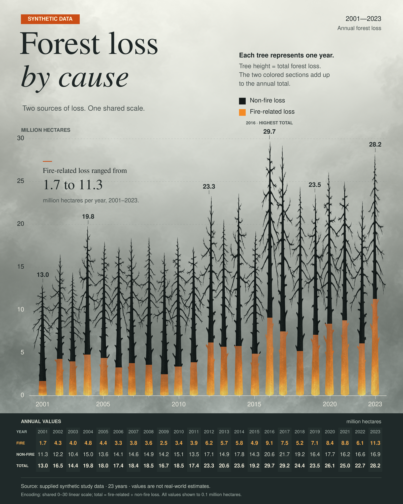
该轮修改与源码 Resolve overlapping peak/year and 2004 labels; replace duplicate reading aid with data-derived fire range; separate table row labels
轮次记录 · 绘图代码 旧质量：pass；数值几何：True；结构：pass；意义：pass；微小标记：pass
独立评价与具体证据 23个年度及两类来源完整，数值、标签绑定和可见堆叠高度符合冻结要求。焦木主干、枝梢与火色下段直接承载数据，主题、单位和合成数据身份清楚，未发现需列为问题的可见缺陷。
completeness · pass ：2001–2023共23棵树及23列表格完整；火灾、非火灾两系列均保留，顺序与输入一致。
numeric_text · pass ：底表46个来源值与输入逐项一致，23个年度总量加和正确；2016最高总量29.7、2023总量28.2及火灾范围1.7–11.3均正确。
binding · pass ：各树沿年度顺序对应下方刻度及表格列；橙色绑定Fire-related loss，黑色绑定Non-fire loss，关键总量标签位于相应树梢上方。
geometry · pass ：23个可见颜色分界与数据目标误差不超过0.6像素；保守深色连通区域顶端检测最大偏差12.4像素，低于30.6像素容差。未见额外树冠高度或最小长度夸大。
source · pass ：已查看raw_01.png与raw_02.png；前者的树形、树皮和后者的烟雾、火色纹理可在成图对应。render.py读取这些素材及树体裁片，按数据控制高度、分段与文字。
integration · pass ：火色下段与黑色上段属于同一连续树干轮廓，侧枝连接主干；树体直接构成堆叠标记。共用基线、正视方向一致，枝条局部交叠未遮掉分段边界或改变年度绑定。
readability · pass ：原始1600×2000分辨率下，主题、合成数据声明、图例、单位、刻度、年度及底部数值均可读，无必要文字被遮挡。
critical_structure · pass ：逐年均有焦黑主干和相连枝梢，橙黄下段接续黑色上段并落在共同零线；上下两段厚度及整株高度分别承担两来源和年度总量。
semantic_meaning · pass ：Forest loss by cause、Annual forest loss、来源图例与million hectares明确指标及单位；Each tree represents one year及两段相加说明明确逐年加和，不是跨年累计。
reference_meaning · pass ：保留参考的年度森林损失主题、火灾/非火灾统计角色及树体融合关系。原图真实统计、旧峰年和恶化论断不属于当前必须复现的含义，成图未将其套用于合成数据。
small_mark_visibility · pass ：最小火灾值1.7对应2001年约58像素的橙黄树干下段，仍能辨认其与黑色主干的接触及共同零线；其他分段更高，无须依靠数字标签替代几何辨认。
年度森林损失及两类来源的核心语义未见输出丢失。以合成数值替换真实统计、按新数据标出2016峰年，属于冻结输入允许的适配，不是参考意义失真。参考与成图均由树体承载堆叠高度；细枝像素边缘的不确定性来自分辨率和抗锯齿，不影响该关系。
完整评审 代码复现像素一致：True；完整共同支持：True
首次评审状态 冲突数据 · ok 输入数据
第1轮 首轮 · ok 该轮修改与源码 Initial composition: generated charred trees, exact stacked heights, smoke and masked flame textures, all annual values
轮次记录 · 绘图代码 旧质量：pass；数值几何：True；结构：pass；意义：pass；微小标记：pass
独立评价与具体证据 数据、堆叠几何和焦木融合关系均保留，仅右上年份间箭头显示为缺字框。已保存review.json并通过schema校验；未运行submit.py。
completeness · pass ：23个年份、23棵树、46个来源值及23个年度合计均完整。
numeric_text · pass ：逐年数值与data.json一致；合计为当年两来源之和，2008最高29.7及端点28.2、13.0正确。
binding · pass ：年份、树和表格列对应；橙色下段绑定火灾损失，黑色上段绑定非火灾损失。
geometry · pass ：共同0–30线性标尺；最终像素检测的接点及树尖偏差均低于31.5像素容差，未发现额外加高或跨年累计。
source · pass ：已查看原始焦木及烟火素材，枝形和火焰纹理在最终主体中可辨；源码裁切素材并控制年度总高和火灾分界。
integration · pass ：火色基部与同一黑色树干相接，枝梢连于主干，树体直接承载数据。未见破坏解释的遮挡、层序、透视或接缝问题。
readability · pass ：必要主题、合成声明、单位、图例、年份和数据表清楚完整；辅助箭头缺字不影响必要标签理解。
critical_structure · pass ：逐年主干、枝梢和火色基部完整；橙黑交界表示火灾量，树尖至基线表示总量，黑色上段表示非火灾量。
semantic_meaning · pass ：年度森林损失、火灾与非火灾来源、百万公顷单位及一树一年均明确，表达当年两来源相加。
reference_meaning · pass ：保留森林损失主题、两来源角色及焦木堆叠关系；旧恶化趋势句和真实峰值按冻结要求无需沿用。
small_mark_visibility · pass ：最小火灾值1.7仍对应约59像素高、20像素宽的可见火色基部，与黑色树干连续相接，未见最小高度抬升。
当前主题及两来源统计含义完整保留。合成数值、2008峰值和端点下降由冻结输入决定，不属于输出语义丢失；未发生主题替换。输出损失仅为辅助箭头字形，细枝端点存在数像素的抗锯齿不确定性。
完整评审 代码复现像素一致：True；完整共同支持：True
首次评审状态 第2轮 · ok 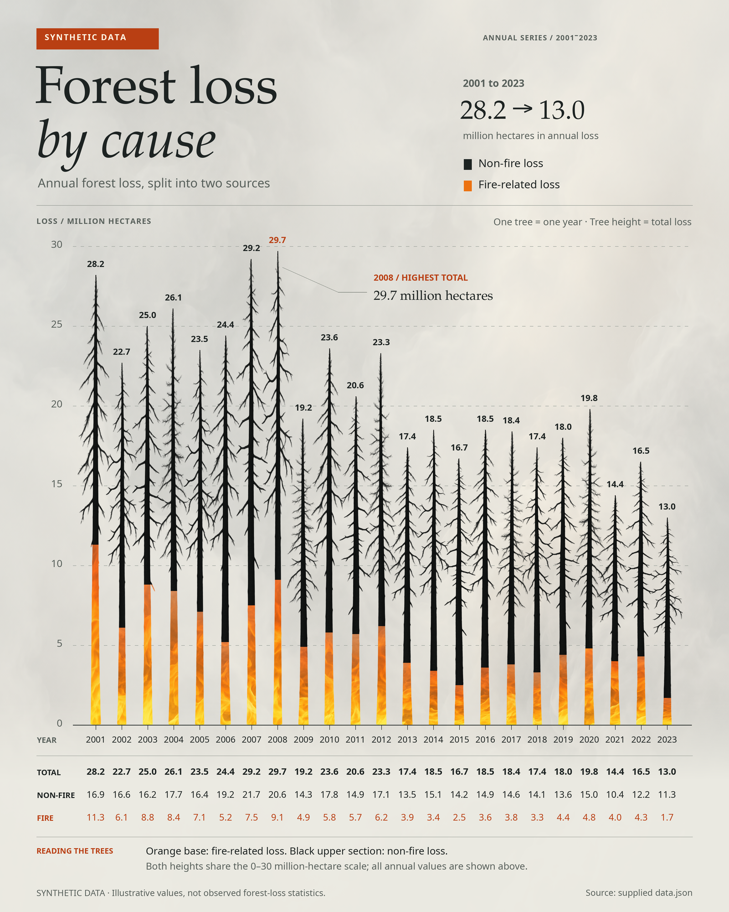
该轮修改与源码 Fix unsupported small arrow, align trunk bases to annual ticks, strengthen existing crown tips within exact data height
轮次记录 · 绘图代码 第3轮 最终 · ok 该轮修改与源码 Place the zero line behind trees so it no longer hides one pixel of the fire-colored bases
轮次记录 · 绘图代码 旧质量：pass；数值几何：True；结构：pass；意义：pass；微小标记：pass
独立评价与具体证据 通过。23年两来源数值、标签和树形堆叠高度一致；生成素材实质构成树体与火纹，年度森林损失语义、关键连接关系及最小火灾段均保留。
completeness · pass ：23棵树及2001–2023年标签完整；每年均有两来源数值和总量，无缺项。
numeric_text · pass ：可见46个来源数值与data.json一致，23个总量等于当年两项之和；2008最高29.7及首末28.2→13.0准确。
binding · pass ：各年份、树干和下方数值列对齐；橙色绑定Fire-related loss，黑色绑定Non-fire loss，图例及底部说明一致。
geometry · pass ：共用0–30线性刻度，逐年像素边界核验误差约不超过0.5像素；枝梢未超出总高，透明留白未造成明显缩短。
source · pass ：已查看raw_01.png的四棵焦木和raw_02.png的烟火素材；其枝形与火纹可见于主体。prepare_assets.py裁出树形及纹理，render.py按数据缩放树体并将火纹限定于下段。
integration · pass ：火纹位于树干内部并与黑色上段接触，主干连接枝梢；树体自身承载两段高度，无旁置物体替代。邻树少量枝条交叠未遮挡色界或树尖。
readability · pass ：主题标题、SYNTHETIC DATA、年份、单位、图例、全部数值和读取说明在原分辨率可读，无必要文本遮挡。
critical_structure · pass ：逐年焦木包含连续主干、连接的枝梢及底部火色段；橙黑交界划分来源，树尖至共同基线表示总量，连接和承载关系保留。
semantic_meaning · pass ：Forest loss by cause及Annual forest loss明确主题；YEAR、两来源图例和million hectares明确年度类别、指标与单位。每棵树是当年两项相加，未表达跨年累计或百分比构成。
reference_meaning · pass ：参考图的年度森林损失、火灾/非火灾来源及焦木堆叠关系保留。当前输入允许替换旧实测数值和涨跌结论，未沿用旧恶化标题或2017峰值。
small_mark_visibility · pass ：最小火灾值为2023年的1.7；原图可见约59像素高的橙色火纹段，紧接黑色树干且落在共同基线，接近目标59.5像素，无夸大最小高度。
未发现输出造成的主题或关键关系丢失。参考实测值改为合成数据、取消旧恶化结论并突出2008峰值均由当前冻结输入授权；主题和两来源统计角色保持。细枝抗锯齿属于分辨率限制，不影响主干、色界和火灾段识别。
完整评审 代码复现像素一致：True；完整共同支持：True
首次评审状态 E25 · 各地区年度国防支出 /M018 完整战机与尾迹背景叠合多地区曲线；原设计为背景叠合，不要求机体轮廓编码。
参考图、共同要求与冻结变换 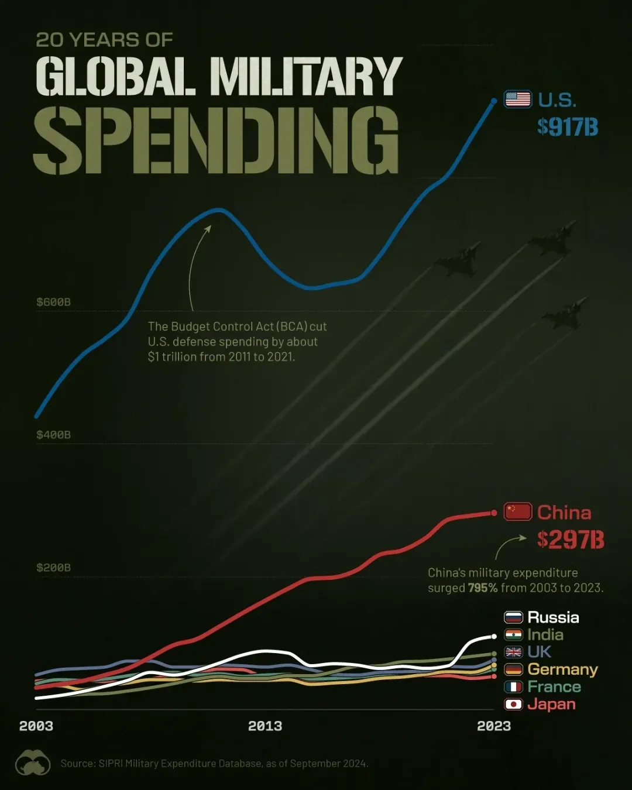
{'method': 'reverse value order per series', 'time_points_unchanged': True, 'value_multisets_unchanged': True}
共同设计 · 隐喻关键结构与意义 相近数据 · ok 输入数据
第1轮 首轮 · ok 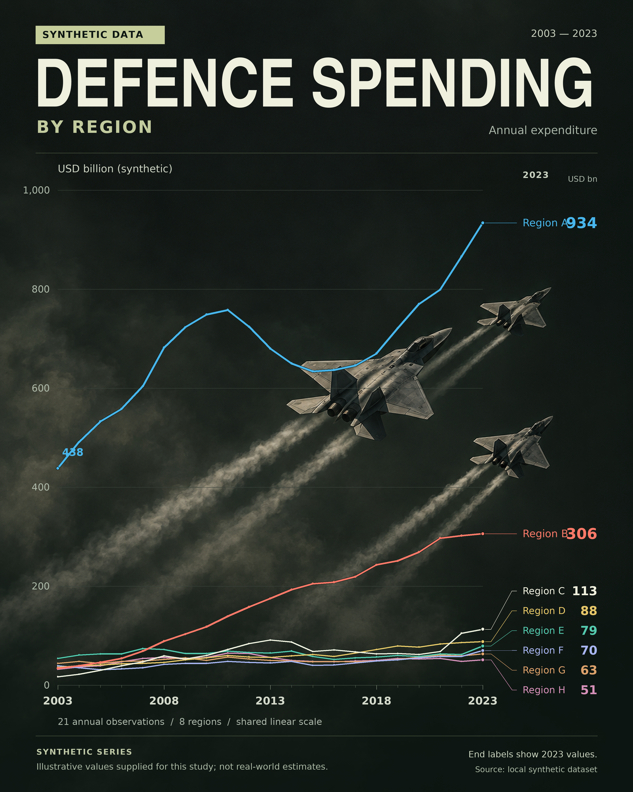
该轮修改与源码 First complete poster: generated aircraft plate with all eight exact annual series and displaced terminal labels
轮次记录 · 绘图代码 旧质量：pass；数值几何：True；结构：pass；意义：pass；微小标记：partial
独立评价与具体证据 已保存并通过schema校验的review.json。数据、年度尺度及背景叠合关系保持，仅发现A/B端点文字轻微重叠。
completeness · pass ：图面有八地区端点标签及2003—2023年份；SVG每系列21点，共168点，项目数据与冻结数据一致。
numeric_text · pass ：八个末值及A起点438均正确，0—1000刻度、合成声明和单位正确。
binding · pass ：曲线、端点、引线与地区标签颜色对应；低值标签移位未改变实际端点。
geometry · pass ：年度等距、共享线性纵轴，可见峰谷和起止位置符合数据；未发现超过3%满量程的偏差。
source · pass ：已查看raw_01.png，其战机、云雾与尾迹在成图大面积可见；代码读取素材并控制数据几何及文字。图面明确本地合成来源。
integration · pass ：曲线跨过飞机和尾迹区域，保留参考要求的背景叠合；机体轮廓无需编码数值。
readability · pass ：必要文字整体可读；A/B端点轻微碰撞已列为minor，无重大不可读。
critical_structure · pass ：完整机头、机身、机翼和尾部保持连接，尾迹从机尾向左下延伸，机头朝右上。折线位于背景前层，由年份位置和高度承载数据。
semantic_meaning · pass ：主题、Annual expenditure、年份和USD billion (synthetic)共同明确各地区年度国防支出，未误作累计或组成比例。
reference_meaning · partial ：具名国家改为合成Region A—H属于冻结输入允许的改编；年度军费比较及战机尾迹叠合关系保留。
small_mark_visibility · partial ：低值保持真实比例，C的17及八个末端可见；部分密集点与他线合并，四点不能独立辨认。
具名国家到合成地区的变化归因冻结输入，非输出语义丢失。低值点的局部辨认限制来自叠压及像素分辨率。参考原本为背景叠合，不追加机体轮廓编码要求。
完整评审 代码复现像素一致：True；完整共同支持：True
首次评审状态 第2轮 最终 · ok 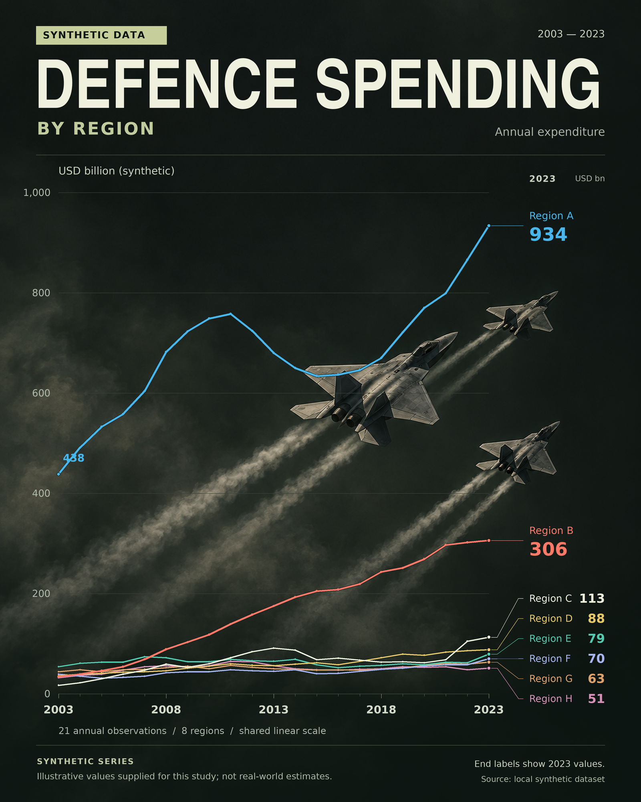
该轮修改与源码 Separate Region A and B names from their large terminal values; align the terminal-label header
轮次记录 · 绘图代码 旧质量：pass；数值几何：True；结构：pass；意义：pass；微小标记：partial
独立评价与具体证据 数值、共享尺度、标签及战机尾迹叠合结构符合冻结要求，未发现重大可见缺陷。review.json已保存并通过schema校验；未运行submit.py。
completeness · pass ：八条系列及八个终点标签齐全；年份顺序正确。代码及SVG各含21点，图面注明21个年度观测、8个地区。
numeric_text · pass ：终值934、306、113、88、79、70、63、51及A起值438均正确；单位、年份和0—1000刻度准确。
binding · pass ：Region A—H通过同色折线、终点和引线绑定；低值标签移位，数据终点仍保持正确量值位置。
geometry · pass ：源码、SVG与成图像素共同支持共享线性轴和完整逐年路径；可独立匹配点远在容差内，未发现可见错误映射。
source · pass ：已查看raw_01.png；其中战机、尾迹及烟云纹理在成图大面积可见。render.py使用该素材并控制数据几何和文字。
integration · pass ：曲线覆盖战机及尾迹背景，保留参考的叠合关系；无需贴合机身表面或由机体轮廓编码。
readability · pass ：主题、合成声明、年度指标、单位、关键年份及八个终值清晰，无重大文字遮挡。
critical_structure · pass ：三架战机朝右上方，机翼和尾翼连接机身，座舱及双发动机可辨；尾迹从机尾向左下延伸。实际数据载体为前景折线。
semantic_meaning · pass ：标题、Annual expenditure及USD billion (synthetic)明确地区年度国防支出；地区为系列、年份为时间轴，没有累计量或组成份额误读。
reference_meaning · partial ：军事支出的年度比较意义保留；具体国家、真实统计及政策注释按冻结输入改为合成地区，属于允许的输入改编。
small_mark_visibility · partial ：低值线和终点可见，最小值17的C起点仍在零线上方；少数相等或紧邻点局部覆盖，无法逐点独立辨认，未见人为抬高小值的证据。
未发现输出造成的实质语义丢失。真实国家改为合成地区来自冻结输入，不要求保留旧数值、峰谷或政策结论。少量小点不可分辨归于曲线重合与像素分辨率限制，不据此推定数据错误。
完整评审 代码复现像素一致：True；完整共同支持：True
首次评审状态 冲突数据 · ok 输入数据
第1轮 首轮 · ok 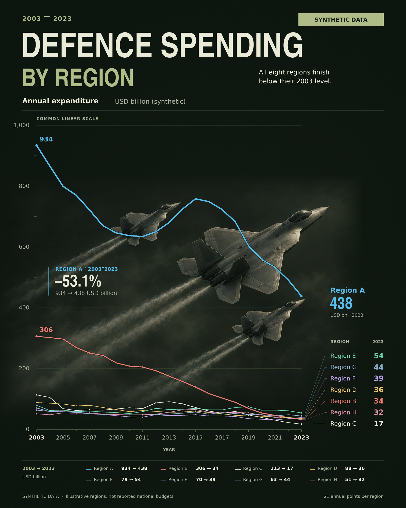
该轮修改与源码 First complete poster: generated aircraft and contrails, all eight series on a shared linear axis, exact endpoint labels.
轮次记录 · 绘图代码 旧质量：pass；数值几何：True；结构：pass；意义：pass；微小标记：partial
独立评价与具体证据 未发现违反冻结要求的重大可见缺陷。八组年度曲线、端点数值、单位及合成数据语义一致，完整战机与尾迹保持参考的背景叠合关系。局部同值重合限制了小标记的独立辨认。
completeness · pass ：八个Region系列均有身份及首末值标签；图示2003–2023并标注每组21个年度点，原图可检测21个年度刻度。源码逐组连接冻结数据的全部21点，共168点。
numeric_text · pass ：首末值依次为A 934→438、B 306→34、C 113→17、D 88→36、E 79→54、F 70→39、G 63→44、H 51→32，均与输入一致。A的−53.1%符合计算值−53.1049%；八组末值均低于首值。
binding · pass ：曲线颜色与底部系列键、右侧端点标签一致；右侧E54、G44、F39、D36、B34、H32、C17通过细引线连接对应末点。标签错位排布未改变实际端点高度。
geometry · pass ：可见网格与年度刻度支持共享0–1000线性纵轴及等间隔真实年份轴；主要曲线、低值端点和165个可辨目标点的像素支持均与输入相符，未发现超过满量程3%的偏移。源码确认未平滑或设最小数值高度。
source · pass ：raw_01.png中的三架战机、相接尾迹及云层与最终图逐一对应，素材在主体区域显著可见。render.py负责素材合成、数据坐标、曲线及文字；capture_render.py提供完整渲染捕获入口，执行历史未作验证。
integration · pass ：战机与尾迹置于绘图区背景，曲线和网格叠于其前方；保留参考的叠合关系。机身轮廓和尾迹均不承担数值边界，无须让其随曲线改变形状。
readability · pass ：主题、Annual expenditure、USD billion (synthetic)、SYNTHETIC DATA、年份与八组端点标签清楚完整。低值区局部交叉，但右侧引线及底部系列键仍可读，无重大遮挡。
critical_structure · pass ：三架战机的机身、机翼、座舱、尾翼及发动机保持连通，机头朝右上，尾迹由机尾向左下延伸。完整物体与多条时间曲线处于同一叠合画面，实际数据由曲线纵向位置承载。
semantic_meaning · pass ：DEFENCE SPENDING BY REGION配合Annual expenditure、YEAR及USD billion (synthetic)，明确表示各地区年度国防支出。Region A–H与冻结语义角色一致，底部说明其为示意地区而非真实国家预算；没有累计或组成份额误读。
reference_meaning · partial ：军事支出主题、年度比较及战机背景叠合保留；参考中的具体国家身份与真实统计改为冻结输入明确指定的合成地区数据。此处partial记录输入改编，不是输出丢失或对旧涨跌结论的要求。
small_mark_visibility · partial ：最小值C17的末点距零轴约20px，正值没有消失或被人为放大。C/H在2017年同为53、D/H在2013年同为56、F/G在2008年同为49，局部笔画重合而不能分别辨认；其余低值走势及全部末值标签可见。
当前军事支出主题、年度指标、地区角色及单位未见输出损失。reference_meaning的partial归因于冻结输入将真实国别统计改为合成地区；small_mark_visibility的partial归因于同值重合及像素分辨率，不能据此推断数值错误。参考明确要求背景叠合，不应另加机体轮廓编码要求。
完整评审 代码复现像素一致：True；完整共同支持：True
首次评审状态 第2轮 最终 · ok 该轮修改与源码 Reduce low-value endpoint dot radii to prevent adjacent 2023 endpoints from masking Region B; preserve every coordinate and all labels.
轮次记录 · 绘图代码 旧质量：pass；数值几何：True；结构：pass；意义：pass；微小标记：partial
独立评价与具体证据 通过。八地区年度支出曲线、数值标签、共同线性尺度及战机尾迹背景叠合关系符合冻结要求。低值交点有局部分辨限制，未发现主要可见缺陷。
completeness · pass ：八个Region系列及2003–2023年份轴完整；源码为每系列连接21个年度点，原图可见八组端点标签和首末值登记，未见遗漏系列。
numeric_text · pass ：A至H首末值依次为934→438、306→34、113→17、88→36、79→54、70→39、63→44、51→32，均与输入一致；−53.1%及全部地区低于2003年的说明正确。
binding · pass ：曲线、右侧端点引线、Region名称和底部色键对应一致。右侧低值标签按E/G/F/D/B/H/C排列，与54/44/39/36/34/32/17端点相符；年份顺序未改变。
geometry · pass ：共享0–1000线性纵轴、2003–2023等距年份轴；蓝线先降后回升再下降，符合当前A系列。原图节点颜色核查的可测偏差远小于35.91px容差；未见截断零点、错误堆叠或沿用参考峰值。
source · pass ：已查看raw_01.png及aircraft_layer.png，三架战机、机身纹理和成对尾迹在最终图中清楚且大面积可见。render.py读取原始素材并以代码控制折线坐标、刻度和文字；capture_render.py实现完整成图保存。
integration · pass ：战机和尾迹位于绘图区背景，蓝色及其他曲线置于前景，保留参考的叠合关系。无要求将支出映射到机翼、机身或透视表面，因此平面曲线与立体飞机的方向不同不构成错位。
readability · pass ：主题、Annual expenditure、USD billion (synthetic)、SYNTHETIC DATA、年份、八组名称及首末数值可读；右侧分散标签未遮挡数据路径，底部说明完整。
critical_structure · pass ：三架飞机均有连贯机身、座舱、机翼及尾翼，机头朝右上，成对尾迹从机尾向左下延伸。物体完整叠合于曲线背景；实际数据边界是各彩色折线的纵向位置，不是飞机轮廓或尾迹宽度。
semantic_meaning · pass ：DEFENCE SPENDING BY REGION结合Annual expenditure、YEAR、USD billion (synthetic)明确表达各地区逐年国防支出；Region A–H为合成地区系列。图面未将年度值解释为时间累计或百分比分配。
reference_meaning · partial ：保留参考的国防支出时间序列主题与战机背景叠合关系；原图真实国家名称和历史说明被冻结输入明确替换为合成地区及当前数值。这是输入允许的语义改编，不是输出遗漏。
small_mark_visibility · partial ：最小端点C=17仍在零线上方约20px，未膨胀或归零；各低值系列和端点颜色可见。但B/D/H末端仅相隔约2–3px，另有三个等值重合节点无法单独辨认，细小差异的逐点识别有限。
未发现输出造成的主题或关键结构丢失。真实国别改为Region A–H、真实统计改为合成支出源自冻结输入，reference_meaning的部分保留归因于该允许改编。飞机上升朝向与当前支出下降不矛盾：参考及core均规定飞机为背景叠合对象，其飞行方向不编码增长。小值局部不可分辨归因于等值重合和像素/线宽限制，不据此判定数值错误。
完整评审 代码复现像素一致：True；完整共同支持：True
首次评审状态 E26 · 德国旗主题的实际GDP水平，非增长率 /M022 印刷质感黑红金旗帜填入数据面积，三个颜色带属于同一纹样。
参考图、共同要求与冻结变换 {'method': 'reverse value order per series', 'time_points_unchanged': True, 'value_multisets_unchanged': True}
共同设计 · 隐喻关键结构与意义 相近数据 · ok 输入数据
第1轮 首轮 · ok 该轮修改与源码 First complete poster: generated print textures clipped to all 134 quarterly points; zero-based 0–800 axis and bound labels.
轮次记录 · 绘图代码 旧质量：pass；数值几何：True；结构：pass；意义：pass；微小标记：pass
独立评价与具体证据 未发现违反冻结要求的可见缺陷。review.json已保存并通过schema校验；未运行submit.py。
completeness · pass ：134个季度、时间点和数值完整，项目数据与冻结数据一致；源码遍历全部点，图面计数及期间正确。
numeric_text · pass ：四个关键数值、134季度计数、0—800刻度及合成货币单位均正确。
binding · pass ：关键季度和数值通过引线连接对应边界；三色明确属于同一纹样。
geometry · pass ：全部目标点附近可见描边，像素邻近差远低于满量程容差；路径按时间展开并闭合至零线。
source · pass ：已查看原始三色素材及黑色裁片；其印刷纹理在最终主体中大面积可见，源码确认裁切、调色及多边形填充。
integration · pass ：旗帜直接构成数据面积，上缘承载GDP；未见破坏关系的遮挡、错位或接缝。
readability · pass ：标题、合成声明、指标、单位、关键标签及系列说明均可读。
critical_structure · pass ：黑红金三带直接相接、共享左右边界；金带接零线，黑带上缘随数据变化。
semantic_meaning · pass ：德国主题、实际GDP水平、季度观察、合成单位及单系列角色明确，并注明非增长率和非官方统计。
reference_meaning · partial ：德国GDP与旗帜面积融合保留；参考图的增长停滞叙事及真实统计依冻结输入改为合成GDP水平，属于允许的输入改编。
small_mark_visibility · pass ：数值范围501—778，旗帜面积及最薄黑带仍清楚可辨；末端亚像素变化另保留不确定性。
未发现输出造成的主题或数据承载关系丢失。旧叙事与真实币值的变化来自冻结输入指定的改编；末端微小变化难以分辨属于分辨率限制。
完整评审 代码复现像素一致：True；完整共同支持：True
首次评审状态 第2轮 最终 · ok 该轮修改与源码 Improve title-band fit and keep generated paper grain near its native aspect; retain all data geometry and labels.
轮次记录 · 绘图代码 旧质量：pass；数值几何：True；结构：pass；意义：pass；微小标记：pass
独立评价与具体证据 通过。季度GDP水平、关键点标签和单系列语义准确；黑红金印刷纹样实际填入数据面积，上缘承载数值，未见超出容差的几何偏差或结构损失。
completeness · pass ：134个季度、1个系列，范围1991-Q1至2024-Q2；图面数量与冻结数据一致。源码遍历全部点，像素核对覆盖全部134个预期位置。
numeric_text · pass ：四个可见关键点1991-Q1=503、2009-Q1=616、2020-Q2=684、2024-Q2=774.8均匹配数据；0至800刻度、134 quarters及1 series正确。
binding · pass ：四组季度和值通过引线接触各自上缘圆点；年份沿时间递增，单位绑定REAL GDP LEVEL，三色明确说明为同一纹样而非额外系列。
geometry · pass ：可见上缘与134个线性时间、线性水平预期点位吻合，局部最近描边距离最大1.625像素，远小于36.6像素容差。底边沿零线闭合，没有累计或增长率编码。
source · pass ：已查看raw_01.png及prepare_assets.py、render.py；原始黑红金材质经裁切调色后实质填满主体，颗粒纹理在成图可见。代码控制裁剪轮廓、坐标和文字；未将历史执行情况视作已验证。
integration · pass ：黑、红、金色带上下接触、共用左右边界及零线底边，被同一数据轮廓包含；黑色上缘直接表示GDP。平面印刷关系一致，未见错层、溢出或破坏身份的接缝。
readability · pass ：标题、SYNTHETIC DATA、实际GDP指标、单位、季度范围、关键数值和单系列说明均清楚；浅色引线与深色主体有足够对比，未见必要文字遮挡。
critical_structure · pass ：上黑、中红、下金组成连续印刷旗帜面积；红金分界水平，最上方轮廓随季度数值变化，左右边界连接零线。旗帜纹样与数据区域融合关系保留。
semantic_meaning · pass ：GERMANY、SYNTHETIC GDP level、REAL GDP LEVEL及billion synthetic currency units共同明确当前主题和单位；Quarterly observations及level, not growth rate明确时间角色与统计解释。
reference_meaning · partial ：保留德国旗承载GDP水平的关系。参考图的真实货币统计与增长停滞论述被明确改为合成GDP水平；此改编来自冻结brief/data/core，不归为输出语义失败。
small_mark_visibility · pass ：本组水平为501至778，最小值仍占满量程62.625%，没有近零面积标记。季度横向间距约9.81像素，上缘及旗帜区域可辨；亚像素相邻起伏的精细辨识另保留不确定性。
真实统计及旧增长结论的变化属于冻结输入允许的主题改编；未见输出丢失当前GDP水平、季度、单位或单系列含义。三色属于同一数据面积的判断有图面与文字共同支持。微小相邻差值的辨识限制来自当前分辨率，不据此制造结构失败。
完整评审 代码复现像素一致：True；完整共同支持：True
首次评审状态 冲突数据 · ok 输入数据
第1轮 首轮 · ok 该轮修改与源码 首版：生成印刷材质裁入134个季度点的零基线面积，绑定德国旗主题、单位和关键季度标签
轮次记录 · 绘图代码 旧质量：pass；数值几何：True；结构：pass；意义：pass；微小标记：pass
独立评价与具体证据 当前数据、关键标签及旗帜与面积图的融合关系均符合冻结要求，未发现重大或次要可见缺陷。像素测量支持上缘按季度GDP水平编码；原参考真实统计及增长叙事的改变属于输入许可改编。
completeness · pass ：输入含134个季度、一个系列，图面明确标示134及1991-Q1至2024-Q2；源码使用全部134点，时间顺序与输入一致。密集季度采用年份刻度和关键点标签符合M1。
numeric_text · pass ：图中774.8、778、684、616、672、503分别对应1991-Q1、1992-Q4、1995-Q1、2006-Q2、2007-Q2、2024-Q2，与输入一致；778确为全局峰值。0至800刻度及单位正确。
binding · pass ：六个季度与数值由引线连接到各自上缘标记，1995低谷、2006低谷及2007回升的标签没有错绑；时间轴使用真实年份位置。
geometry · pass ：126个可测边界列的最大偏差为2.475像素，约满量程0.245%，低于3%；六个标注点质心均接近目标。零基线闭合、下降趋势及局部谷峰与当前数据一致。
source · pass ：已查看raw_01.png及黑、红、金三个材质切片，其斑纹和划痕在最终旗面中可见且覆盖主体。render.py读取这些素材，以数据多边形遮罩裁切，代码另行绘制文字和轮廓；未据此宣称已验证执行历史。
integration · pass ：纹理直接填入数据面积，黑带上缘就是GDP边界；三色共用左右边界并闭合至零线，图内明确说明ONE SERIES，未形成额外系列或旁置装饰旗。
readability · pass ：原分辨率下标题、SYNTHETIC DATA、指标、单位、时间范围、关键数值、轴刻度及页脚解释均完整可读；未见严重重叠、截断或遮挡。
critical_structure · pass ：黑色区域位于红带上方，红带接触金带，金带底边接触零线；三带连续构成同一印刷旗面。只有整体上缘随季度GDP改变，水平色带分界为纹样，符合M2、M3、M6。
semantic_meaning · pass ：德国主题、合成实际GDP水平、季度时间角色和billion synthetic currency units均明确；页脚明确为水平而非增长率，并声明不是观测到的德国统计数据。
reference_meaning · partial ：德国旗与GDP面积图的融合保留；原参考真实欧元统计、季调说明及增长叙事被当前冻结输入改编为合成GDP水平，未照搬旧涨跌结论。部分变化归于输入许可，不是输出失误。
small_mark_visibility · pass ：当前值域501至778，没有近零面积；最低点处仍有约128像素高的黑带，三色旗面及数据上缘保持可辨。未见人为最小高度放大；个别亚像素季度波动的区分性保留分辨率不确定性。
未发现当前主题、单位或数据承载关系的输出损失。参考增长标题、真实货币及统计口径的变化来自冻结输入的明确改编，不归责生成器。参考图本身可见旗面与GDP面积相融，此关系在待评图中保留；极小相邻季度差异的不可单独辨读属于像素分辨率限制。
完整评审 代码复现像素一致：True；完整共同支持：True
首次评审状态 第2轮 最终 · ok 该轮修改与源码 第二版：移开接近网格线的数字和季度标签；保持背景纸纹比例并降低对比；数据几何不变
轮次记录 · 绘图代码 旧质量：pass；数值几何：True；结构：pass；意义：pass；微小标记：pass
独立评价与具体证据 季度GDP上缘、零基线面积和黑红金旗帜融合关系完整。数据标注、时间位置、单位与当前合成主题一致，生成纹理实质用于主体，未发现超容差或其他需列报的可见缺陷。
completeness · pass ：冻结输入与项目数据一致，含134个季度、单一系列；源码使用全部134点，图面标明134次观测及1991-Q1至2024-Q2，密集年份采用许可的刻度和关键点标签。
numeric_text · pass ：可见标注1991-Q1/774.8、1992-Q4/778、1995-Q1/684、2006-Q2/616、2007-Q2/672、2024-Q2/503均与冻结数据一致；778确为最大值。
binding · pass ：六组季度与数值通过端点、圆点及引线绑定对应上缘位置；年份从左至右递增，未见引线误指或系列混淆。
geometry · pass ：可见凹口、回升、总体下降和末端微升与当前数据相符。134列黑色上界检测最大偏差约0.70%满量程，低于3%；面积闭合至0，未截断纵轴。
source · pass ：已查看raw_01.png，其黑红金印刷纹理可在成图大面积主体辨认；素材清单及render.py显示派生纹理填入数据多边形，代码控制轮廓与文字。
integration · pass ：旗帜纹样本身填充GDP数据面积，上缘直接承载数值；不是旁置旗帜。图内明确说明三色属于一个系列。
readability · pass ：合成声明、主题、系列名、单位、季度范围、刻度、关键数值和阅读说明均清楚，无影响必需信息的裁切或遮挡。
critical_structure · pass ：黑带上缘为季度折线；红带紧接黑带，金带紧接红带并落至零线，三者共享左右边界且无分离缝隙。平面纹样与图表对齐，未见层序颠倒。
semantic_meaning · pass ：德国旗主题、Synthetic real GDP level、billion synthetic currency units及季度观测角色明确；底部说明是水平而非增长率，且不是真实德国GDP统计。
reference_meaning · partial ：德国、实际GDP水平与旗帜面积融合关系保留。参考图的增长停滞叙述、真实欧元和季调口径被冻结输入明确改编为合成水平数据，属于输入允许的语义调整。
small_mark_visibility · pass ：全部水平值为501至778，最薄处仍保留清楚的黑带及完整红金带；未见最小尺寸抬高或小值丢失。亚像素季度差异的相对幅度另列为分辨率限制。
未发现输出造成的主题或核心关系丢失。原图真实统计、增长叙述与季调口径的变化来自brief/core对合成GDP水平的明确改编，不归因于生成失败；微小季度差异不可逐一目测确认属于分辨率限制。
完整评审 代码复现像素一致：True；完整共同支持：True
首次评审状态 E27 · 单位经济产出的能源消耗强度 /M027 输电塔、架空电线、栖鸟与绿色数据曲线相接，保留电力场景。
参考图、共同要求与冻结变换 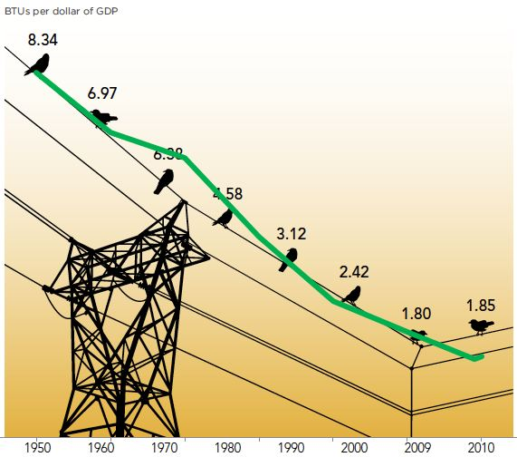
{'method': 'reverse value order per series', 'time_points_unchanged': True, 'value_multisets_unchanged': True}
共同设计 · 隐喻关键结构与意义 相近数据 · ok 输入数据
第1轮 首轮 · ok 该轮修改与源码 First complete composition: generated tower and four perched birds integrated with the exact eight-point energy-intensity cable.
轮次记录 · 绘图代码 旧质量：uncertain；数值几何：None；结构：pass；意义：pass；微小标记：pass
独立评价与具体证据 数据几何、主题单位及电力场景融合符合要求。八个数值标签中，两处因同色结构重叠而无法可靠读全。已保存并校验review.json，未运行submit.py。
completeness · pass ：八个数据点及相连路径存在，八个年份通过轴标签或直接标注明确；系列、单位及合成声明齐全。
numeric_text · uncertain ：六处数值可直接辨读且正确；6.72和6.14源码正确，但图面无法可靠读全。
binding · pass ：各点按年份排列；末两组年份和数值通过引线分别连接2009与2010，未见交换。
geometry · pass ：像素位置符合真实年份和共同0–10线性轴，最大纵差约满量程0.11%，低于3%容差。
source · pass ：生成素材中的塔架和四只鸟实质可见；render.py读取素材，并由输入数据控制折线、圆点及文字。
integration · pass ：绿色线接到塔架上层右侧绝缘子末端，四只鸟的足部接触绿色线；深色导线连接塔架硬件。
readability · fail ：1960与1970的两处数值标签与同色塔架、绝缘子混合，不能可靠读全；其余主要文字清晰。
critical_structure · pass ：塔身、横担、绝缘子、架空线与栖鸟保持连接或接触；绿色折线承担定量路径并兼作栖线。
semantic_meaning · pass ：主题、经济产出解释、系列名称、BTU per GDP dollar及Year明确表达指标、单位和时间角色。
reference_meaning · pass ：保留参考的能源/GDP含义及输电场景与绿色曲线叠合关系；合成值替换属于输入授权。
small_mark_visibility · pass ：原像素可辨末端两个独立圆点及上升短段；最小值仍有约162像素基线高度，未见几何夸大。
当前主题、年份角色及物体与数据的关系保留。合成数值替换不是语义丢失；输出损失集中在两处数值文字的可读性。末端小标记在当前分辨率下仍可辨。
完整评审 代码复现像素一致：True；完整共同支持：False
首次评审状态 第2轮 最终 · ok 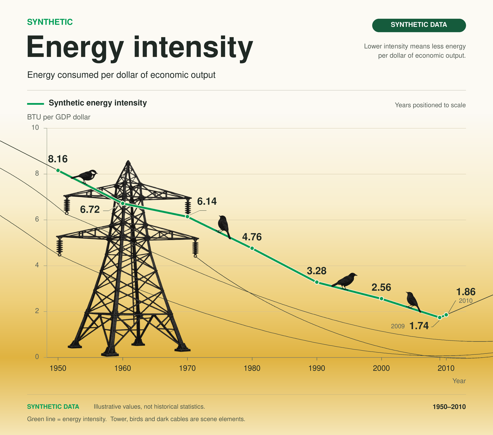
该轮修改与源码 Clear numeric labels from the generated tower and dark cables; shorten endpoint leaders without changing any data geometry.
轮次记录 · 绘图代码 旧质量：pass；数值几何：True；结构：pass；意义：pass；微小标记：pass
独立评价与具体证据 数据、年份间距、标签与能源强度语义正确，电力场景及数据融合关系保留。review.json已保存并通过schema.json校验；未运行submit.py。
completeness · pass ：单系列、八个点及全部年份完整；2009以邻近引线标签显示。
numeric_text · pass ：8.16、6.72、6.14、4.76、3.28、2.56、1.74、1.86均与冻结数据一致。
binding · pass ：系列图例与绿线绑定清楚；1960、1970和末端引线分别指向正确圆点，场景元素未被当成额外数据。
geometry · pass ：像素位置符合真实年份及共同0–10线性轴；最大纵向偏差约满量程0.081%。
source · pass ：原始素材中的格构塔、绝缘子和四只鸟在主体中可见；源码实际合成素材并依据数据计算折线、圆点及文字。
integration · pass ：鸟脚接触绿色导线；1970点连接右上绝缘子末端，其他黑电线连接塔架，数据线首末端接续黑导线。
readability · pass ：主题、系列、单位、年份、数值及SYNTHETIC DATA清晰完整，未见必要文字遮挡或裁切。
critical_structure · pass ：塔身、横担、悬垂绝缘子及导线连接关系可辨；鸟位于绿线上方并与之接触。数据由绿点位置和连接折线承载。
semantic_meaning · pass ：标题及经济产出释义明确能源强度，BTU per GDP dollar提供单位，Year明确时间角色，合成统计声明完整。
reference_meaning · pass ：参考图的能源强度指标、年份角色及电力场景关系保留；当前合成数值未被误称为历史统计。
small_mark_visibility · pass ：原分辨率下2009与2010圆点独立可辨，中心相距约28.72像素，末段约11像素上升可见；未放大最小值几何。
未见输出造成的主题或关键关系丢失。替换为冻结合成数值属于授权的数据适配，主题与指标单位未改变。鸟的数量、姿态及非数据塔架比例调整仍保持身份和接触关系；细边缘不确定性来自像素分辨率。
完整评审 代码复现像素一致：True；完整共同支持：True
首次评审状态 冲突数据 · ok 输入数据
第1轮 首轮 · ok 该轮修改与源码 Initial complete composition: true-year green cable connected to generated pylon, shared 0–10 axis, all values and bird perches
轮次记录 · 绘图代码 旧质量：pass；数值几何：True；结构：pass；意义：pass；微小标记：pass
独立评价与具体证据 八个数据点、真实年份间距、单位与主题均保留，绿色曲线和塔、线、栖鸟的融合关系清楚。仅发现装饰电线轻微穿过底部轴文字，不影响识别。
completeness · pass ：八个年份、八个数值及单一能源强度系列齐全；2009与2010分别用引线绑定年份标签。
numeric_text · pass ：1.86、1.74、2.56、3.28、4.76、6.14、6.72、8.16均与输入一致；单位BTU per GDP dollar及派生比值4.39×正确。
binding · pass ：各数值对应相邻绿色标记，末两点以细引线区分；鸟、塔及黑色电线另有明确非数据说明。
geometry · pass ：图像实测标记中心与共同0–10线性轴及真实年份间距相符，最大纵向误差约满量程0.11%；源码使用全部八点，未以装饰物代替数据点。
source · pass ：已查看raw_01.png，格构塔和四只鸟的具体造型在成图中实质可见；render.py加载相应切片并控制折线、标记及文字。capture_render.py的流程源码已查看，执行历史未核验。
integration · pass ：绿色线从左侧黑线接入并在右侧接触塔上绝缘子；三只鸟落在绿线上，另一只落在黑线上，塔和电缆构成连续电力场景。
readability · pass ：标题、合成声明、指标解释、数值、单位和图例清楚；YEAR及1970被细电线轻微划过但仍可读，已单列minor。
critical_structure · pass ：格构塔包含横担及悬垂绝缘子，黑色架空线连接其端部；绿色数据线终点与左上绝缘子接触，鸟足与绿色或黑色线相接，保留参考的场景叠合关系。
semantic_meaning · pass ：SYNTHETIC Energy intensity、每美元经济产出的能源消耗解释、BTU per GDP dollar及YEAR共同明确当前主题、指标、单位和时间角色。
reference_meaning · pass ：参考与成图均表达按年份变化的每GDP美元能源消耗，并将曲线融入电力场景。参考的下降走势并非当前要求；成图上升走势来自冻结合成数据。
small_mark_visibility · pass ：八个圆环中心均能在原分辨率检测；最低值1.74仍有约162像素的零线高度，首段小幅下降可见；2009与2010标记和引线可区分，无最低高度膨胀迹象。
当前主题与参考主题一致；数值及涨跌方向变化归于获准的合成输入替换，不构成输出语义丢失。塔的位置和鸟的数量、姿态属于非数据部件适配，未改变曲线承担量值的关系。确认的输出问题仅为两处轻微文字遮挡；细部接触及像素精度限制已单独说明。
完整评审 代码复现像素一致：True；完整共同支持：True
首次评审状态 第2轮 最终 · ok 该轮修改与源码 Clear auxiliary cables from year labels; preserve bird anatomy with rigid rotations and perch one bird on the outgoing upper conductor; data geometry unchanged
轮次记录 · 绘图代码 旧质量：pass；数值几何：True；结构：pass；意义：pass；微小标记：pass
独立评价与具体证据 八个年份、数值、单位及系列完整，像素位置符合真实年份与0–10线性轴。绿色数据线与栖鸟、架空电线及塔架绝缘子形成可见连接，能源强度主题和合成数据身份明确，未发现必要要求的可见缺陷。
completeness · pass ：八个年份1950、1960、1970、1980、1990、2000、2009、2010及对应八个折线节点、数值均可见；单系列、单位、年份角色及SYNTHETIC DATA齐全。
numeric_text · pass ：图上1.86、1.74、2.56、3.28、4.76、6.14、6.72、8.16逐项符合输入；附加比较明确写2010相对1950、8.16÷1.86及正确的4.39×。
binding · pass ：前六个数值邻近相应节点；6.72和8.16以细引线绑定末两点，2009和2010的年份也分别引注。图例明确仅绿色线编码数据，鸟和暗色电线未冒充额外观测。
geometry · pass ：网格及八个节点的像素采样与0–10线性映射一致，最大纵向误差约0.08%满量程。横距保持每年21像素，包括末尾相隔一年的两点；最初1.86至1.74的小幅下降保留。
source · pass ：已查看assets/raw_01.png，其塔架格构、绝缘子及鸟的羽纹在成图主体中清晰对应。render.py实际合成tower.png和鸟素材，并计算数据路径、标记及文字；capture_render.py具有完整图像保存逻辑，执行历史未核查。
integration · pass ：绿色折线由左侧暗色来线接入，三只鸟的足部接触绿色线段，末端接触右侧塔架左上绝缘子；其他架空导线连接侧部绝缘子，右侧另有栖鸟。素材与数据线处于同一电力场景，连接处未见破坏结构的遮挡或接缝。
readability · pass ：主题、副标题、合成声明、BTU per GDP dollar、0–10刻度、全部年份及数值均可读。密集的末两年及数值通过分开引注保持辨识，塔架和鸟未遮住必要文字。
critical_structure · pass ：可见格构塔身、横担和悬挂绝缘子组成连续塔架，暗色导线接在绝缘子末端；绿色数据线与塔架端点相接，鸟足接触其线段。实际数据承载边界为绿色折线和节点，暗线、塔体及鸟为非数据结构。
semantic_meaning · pass ：Energy intensity、Energy consumed per dollar of economic output、BTU per GDP dollar及Synthetic energy intensity共同明确当前统计指标和系列；YEAR及1950–2010明确观测年份。图形表示逐年强度而非累计量或组成比例。
reference_meaning · pass ：参考中的BTUs per dollar of GDP指标、电力场景及曲线与栖鸟/电线的叠合关系均保留。新图采用冻结合成数值的上升走势；输入允许改变旧走势及非数据部件位置，不构成原主题损失。
small_mark_visibility · pass ：八个浅色点心均能从原分辨率像素中单独定位，未发现缺失或合并。2009和2010横距虽仅21像素，纵距约134像素，节点和引注均分开；前两点约11像素的高度差也保留。鸟足与绿色线段的接触仍可辨。
未发现输出造成的核心语义损失。当前主题仍是单位经济产出的能源消耗强度；合成数值、走势及塔架位置和非数据鸟的配置变化属于输入允许的适配，不要求复制参考的下降结论。参考意义判断限于其可见单位与电力场景，不推断未显示的作者意图。像素级误差及未核查的生成/捕获历史已单独注明。
完整评审 代码复现像素一致：True；完整共同支持：True
首次评审状态 E28 · 年度砂石开采量 /M041 浅色背景上的颗粒沙堆，其上缘为年度走势；斜插铲子局部遮叠沙面，保留沙粒、自然落影和边缘飞散颗粒。全部年份与当前数值准确显示，标题中性。
参考图、共同要求与冻结变换 {'method': 'reverse value order per series', 'time_points_unchanged': True, 'value_multisets_unchanged': True}
共同设计 · 隐喻关键结构与意义 相近数据 · technical_failure 输入数据
第1轮 首轮 / 最终 · ok 该轮修改与源码 First complete composition: generated sand face, integrated shovel, exact twelve-node linear profile and all value labels
轮次记录 · 绘图代码 旧质量：pass；数值几何：True；结构：pass；意义：pass；微小标记：pass
独立评价与具体证据 通过。12个年份、数值及绑定完整准确，砂体上缘符合0–400线性高度编码。砂石材质、斜铲及局部遮叠关系可辨，年度开采量、单位和合成数据身份清楚。
completeness · pass ：2008–2019按原顺序显示，12个年份、12个节点及数值齐全，单一砂石开采量系列与单位均在图面。
numeric_text · pass ：逐项可读为124、109、127、143、146、159、201、193、184、274、342、334，与冻结数据一致；纵轴0、100、200、300、400及million tonnes正确。
binding · pass ：各数值位于对应节点上方，各年份位于同一横坐标的零线下方；2018的342与2019的334分别绑定各自端点，无交换或跨年错位。
geometry · pass ：12个节点像素高度及相邻段上缘均通过满量程3%容差；共用零线、等距年份与直线连接可见。铲子和游离砂粒不承担数值高度。
source · pass ：已查看raw_01.png和shovel.png；原始砂石纹理及D形柄木杆金属铲头在成图中实质可见。prepare_assets.py提取素材，render.py以数据多边形裁切材质并绘制文字；capture_render.py存在，捕获历史未核验。
integration · pass ：砂石材质覆盖承载数据的整个区域，上缘本身表达走势。铲头覆盖左部砂面、下端被砂材质遮住，接触阴影和底部散粒仍可辨；没有影响读图的材质接缝或层序破坏。
readability · pass ：主题标题、SYNTHETIC DATA、系列名称、单位、全部年份及数值清楚；标签未被铲子或砂体遮挡，页脚说明高度表示年度开采量。
critical_structure · pass ：D形握柄、木杆和金属铲头连续连接，铲子由左上向右下斜入砂体；铲面与砂面局部交叠，下端有砂粒覆盖。颗粒砂体在浅底上闭合到共同零线，其上缘保留数据折线，底部有落影和散粒。
semantic_meaning · pass ：Sand and gravel extraction、Illustrative sand and gravel extraction、Annual series、million tonnes和2008–2019共同表达年度砂石开采量；显著合成标识及页脚明确其为示例数值，纵向高度编码有文字解释。
reference_meaning · pass ：保留参考的砂石年度开采量主题、百万吨单位、年度比较及砂体上缘承载走势的关系。原真实全球统计的来源和数值已由冻结输入改为示例序列，不要求复制原峰值或原统计来源。
small_mark_visibility · pass ：最小值109的可见高度约253像素，仍有充分砂体区域；143与146的节点高度差约7像素，可辨小幅上升。12个空心节点均可见，未见为增强识别而抬高小值。
未发现输出造成的主题、系列角色或物体关系丢失。真实统计改为合成示例序列由冻结输入授权，参考主题与高度编码仍保留；原有全球工业统计来源不作为当前图面必须恢复的声明。局部遮挡及抗锯齿限制像素定位精度，不构成当前容差下的失败证据。
完整评审 代码复现像素一致：True；完整共同支持：False
首次评审状态 技术记录：timeout
冲突数据 · technical_failure 输入数据
等待完整渲染图；此项尚无质量结论。
技术记录：timeout
E29 · 按出生年份队列统计的左利手比例 /M047 方格纸上的长指与掌部插画，保留可辨认指身、圆钝指尖、紫色指甲、关节纹和手掌。年份纵向排列，比例水平排列；手指弯曲方向跟随当前数据，不指定向右增长。
参考图、共同要求与冻结变换 {'method': 'reverse value order per series', 'time_points_unchanged': True, 'value_multisets_unchanged': True}
共同设计 · 隐喻关键结构与意义 相近数据 · ok 输入数据
第1轮 首轮 / 最终 · ok 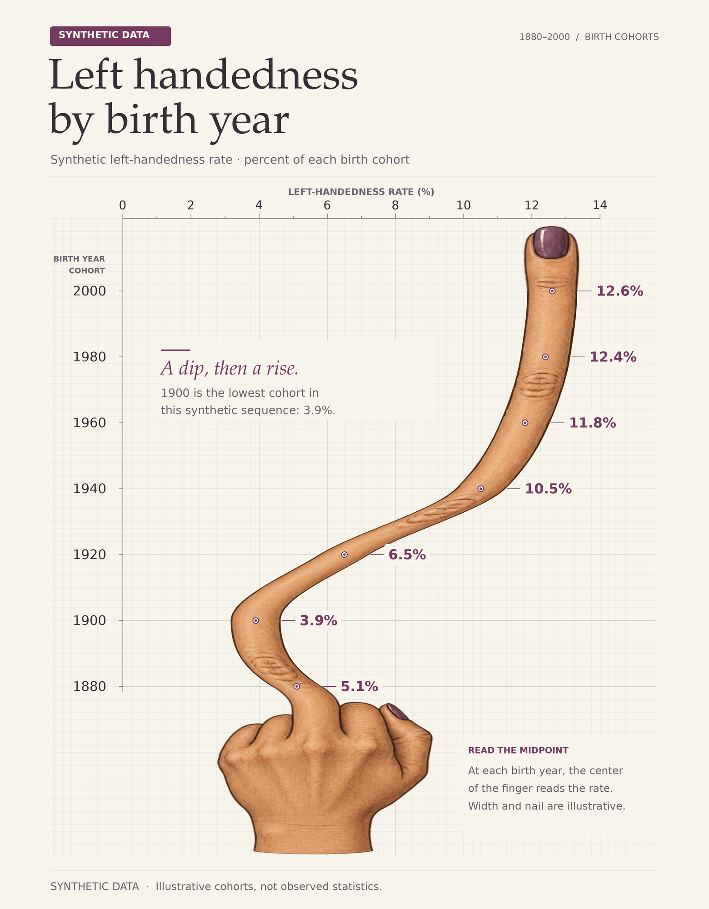
该轮修改与源码 首次完整渲染：生成手部素材按七个出生队列的比例逐行变形，加入方格纸、共同百分比轴与全部标签
轮次记录 · 绘图代码 旧质量：pass；数值几何：True；结构：pass；意义：pass；微小标记：pass
独立评价与具体证据 通过。数据、标签绑定、手指轮廓编码及主题语义均符合冻结要求，未发现实质可见缺陷。review.json已保存并通过schema校验；未运行submit.py。
completeness · pass ：七个出生队列、单一比例系列及七个观测标记完整。
numeric_text · pass ：5.1%、3.9%、6.5%、10.5%、11.8%、12.4%、12.6%均准确；1900最低值说明正确。
binding · pass ：数值标签连接对应指身截面，中心标记与年份网格线对齐。
geometry · pass ：七个截面中点的像素估计均在容差内；年份真实等距排列，弯曲方向符合当前数值。
source · pass ：原始素材的指甲、皮肤纹理、关节纹和手部实质用于成图主体；源码控制重映射几何和文字。
integration · pass ：指身左右轮廓中点承载比例，长指连续连接手部，物体自身形成数据轨迹。
readability · pass ：主题、合成声明、出生队列、百分比单位、七项数值及中点读法均清楚。
critical_structure · pass ：长指、圆钝指尖、紫色指甲、关节纹及手部可辨认且连接连续；非数据部件未覆盖观测截面。
semantic_meaning · pass ：明确表达每个出生年份队列的左利手比例，未混淆出生年与观测年。
reference_meaning · pass ：保留参考主题、出生年份语义及手指与数据融合关系；当前曲线遵循冻结合成数据。
small_mark_visibility · pass ：七个约14×14像素的圆环标记均位于可辨认指身内；相近高值仍可区分，最小值未被零化。
当前主题与参考一致，合成数值及弯曲形态来自冻结输入。成图保留出生队列、左利手比例、百分比及指身中点编码，未发现输出语义损失。非数据手部画法变化未破坏连接关系。
完整评审 代码复现像素一致：True；完整共同支持：True
首次评审状态 冲突数据 · ok 输入数据
第1轮 首轮 · ok 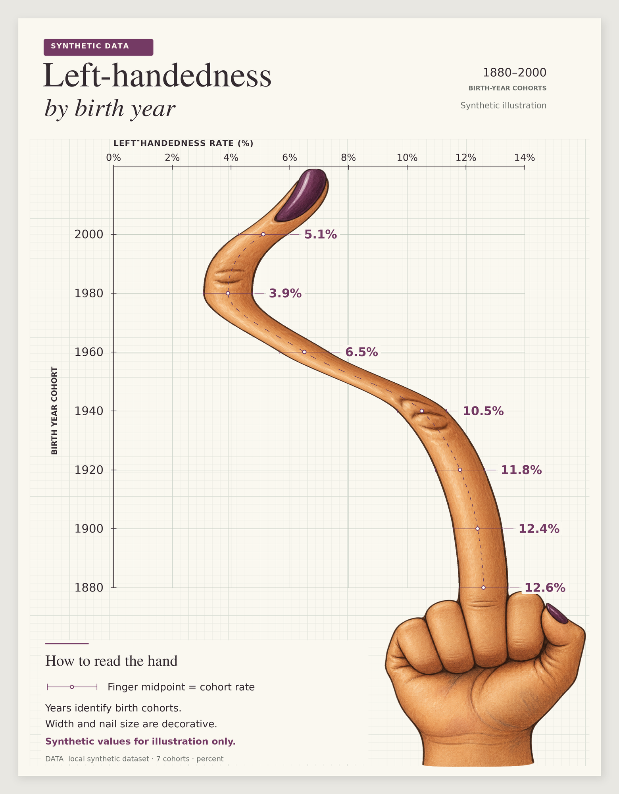
该轮修改与源码 First complete composition: generated hand warped to seven birth-cohort rates, shared 0–14% axis, graph-paper layout and midpoint labels
轮次记录 · 绘图代码 旧质量：pass；数值几何：True；结构：pass；意义：pass；微小标记：pass
独立评价与具体证据 七个出生队列的数值、标签绑定与指身截面中点几何一致；长指与掌部的连接、紫色指甲、关节纹及左利手统计语义均保留，未发现违反必要要求的可见缺陷。
completeness · pass ：单系列七个出生队列全部出现；七处数据截面、数值标签、单位与合成数据声明完整。
numeric_text · pass ：1880、1900、1920、1940、1960、1980、2000分别标注12.6%、12.4%、11.8%、10.5%、6.5%、3.9%、5.1%，与输入完全一致。
binding · pass ：年份水平参考线对应指身截面，中点圆点与右侧数值引线位于同一高度，未见错绑或交叉。
geometry · pass ：共同线性横轴及真实年份间距成立；像素估计的七处轮廓中点与目标相符，连续轮廓未见超出相邻值的实质性过冲。
source · pass ：raw_01.png的紫甲高光、关节纹与掌纹在最终主体中可辨；render.py读取hand_clean.png并逐行变形，代码控制两侧轮廓、中点及文字位置。
integration · pass ：承载数据的是长指实体的左右轮廓中点；指身与下方掌部连续连接。虚线辅助读数，未将物体降为旁置装饰。
readability · pass ：主题、SYNTHETIC DATA、出生队列轴、百分比轴及七组数值均清晰；说明明确指出宽度和甲片大小不编码数值。
critical_structure · pass ：方格纸上可见圆钝指尖、紫色甲片、长指、关节纹和掌部。甲片位于2000截面之上，掌部位于1880截面之下；指身弯曲并连续接入掌部，数据截面未被遮住。
semantic_meaning · pass ：Left-handedness by birth year、LEFT-HANDEDNESS RATE (%)及BIRTH-YEAR COHORTS共同表达按出生年份队列统计的左利手百分比；合成性质醒目明确。
reference_meaning · pass ：保留参考的左利手主题、出生年份角色及手指与数值曲线的融合关系。当前数据带来的弯曲方向变化符合冻结要求，不要求复制参考的旧趋势。
small_mark_visibility · pass ：最小值3.9%的截面、中点及双侧轮廓在原分辨率清楚可见，仍属于连接掌部的完整指身；未以扩大数据位置或只保留数值文字替代几何。
当前输入保留参考主题并将统计值明确设为合成示例；旧数值和旧趋势的变化归于输入许可，不是输出语义丢失。手指与掌部的姿态适配未破坏数据承载关系。边界读数存在像素级不确定性，但未见关键结构或统计角色丢失。
完整评审 代码复现像素一致：True；完整共同支持：True
首次评审状态 第2轮 最终 · ok 该轮修改与源码 Final reading-key refinement: explain non-data fingertip and palm; derive cohort count from data; chart geometry unchanged
轮次记录 · 绘图代码 旧质量：pass；数值几何：True；结构：pass；意义：pass；微小标记：pass
独立评价与具体证据 七个出生队列的数值、绑定和指身截面中点均符合冻结数据。生成手部素材实质构成数据主体，指甲、关节纹、圆头与掌部连接完整，主题和合成数据标识清楚。未发现需列为问题的可见缺陷。
completeness · pass ：1880、1900、1920、1940、1960、1980、2000七个出生队列及单一左利手比例系列完整出现。
numeric_text · pass ：七个百分比依次为12.6%、12.4%、11.8%、10.5%、6.5%、3.9%、5.1%，均与data.json一致；0–14%轴及百分比单位明确。
binding · pass ：各年份水平导线对应指身截面，截面白色圆点、右侧引线及数值逐一绑定；年份从下至上等距增加，无错配。
geometry · pass ：实际指身左右轮廓的中点通过像素核查，七个截面最大偏差约0.027个百分点，远低于0.42个百分点容差；连续轮廓随当前值先左弯、再向2000年的5.1%回转。
source · pass ：raw_01.png中的紫色甲片、关节褶皱、皮肤明暗与握拳掌部在成图中可对应；render.py读取hand_clean.png并重映射成整条长指，生成素材构成主体。capture_render.py源码存在，实际调用历史未核验。
integration · pass ：数据承载边界就是生成手指的左右外轮廓，截面中点随数值变化；指甲与掌部属于同一连续手部，并非普通曲线旁置插画。
readability · pass ：原分辨率下标题、SYNTHETIC DATA、出生队列轴名、百分比刻度及七个数值均清楚，无主体遮字；图例明确中点编码、宽度和甲片不承载数据。
critical_structure · pass ：长指在1880截面以下连续接入握拳掌部；紫色指甲包含于2000截面以上的圆钝指尖，指身可见关节纹。掌部、圆头均未遮挡观测截面，方格纸与纵向年份、横向比例关系保留。
semantic_meaning · pass ：Left-handedness by birth year、BIRTH-YEAR COHORTS及LEFT-HANDEDNESS RATE (%)共同明确按出生年份队列统计左利手比例；不是观测日历年，合成数据性质也明确。
reference_meaning · pass ：参考的左利手主题、出生年份角色及用长指形态承载比例的融合关系保留。当前合成值改变弯曲方向符合冻结输入，不要求沿用原图趋势或真实统计。
small_mark_visibility · pass ：最小值3.9%的截面中点距0%轴约289 px，白色圆点、横截线及两侧指身轮廓可辨；七个节点均能与实体指身对应，没有仅靠数字维持的不可见小值。
当前主题与参考相同。合成数据身份及新数值造成的姿态变化来自冻结输入允许的适配，不属于输出语义流失；图面保留出生队列、左利手比例、百分比单位和指掌融合关系。未推定参考具有额外手势意图或要求复制旧涨跌结论。剩余不确定性来自像素边缘定位与未核验的渲染历史。
完整评审 代码复现像素一致：True；完整共同支持：True
首次评审状态 E30 · 年度鼻部手术数 /M051 近正视方格纸上的鼻形插画，保留鼻梁、鼻尖、鼻翼或鼻孔提示及上部眼睛小覆盖图层。年份纵向、手术数横向；轮廓允许随新数据改变，标题不预设走势。
参考图、共同要求与冻结变换 {'method': 'reverse value order per series', 'time_points_unchanged': True, 'value_multisets_unchanged': True}
共同设计 · 隐喻关键结构与意义 相近数据 · ok 输入数据
第1轮 首轮 / 最终 · ok 该轮修改与源码 First complete render: generated pencil skin bound to all five nose-profile widths, with eye and nostril overlays
轮次记录 · 绘图代码 尚无有效独立评价，原技术状态另列。
代码复现像素一致：True；完整共同支持：False
首次评审状态 冲突数据 · ok 输入数据
第1轮 首轮 · ok 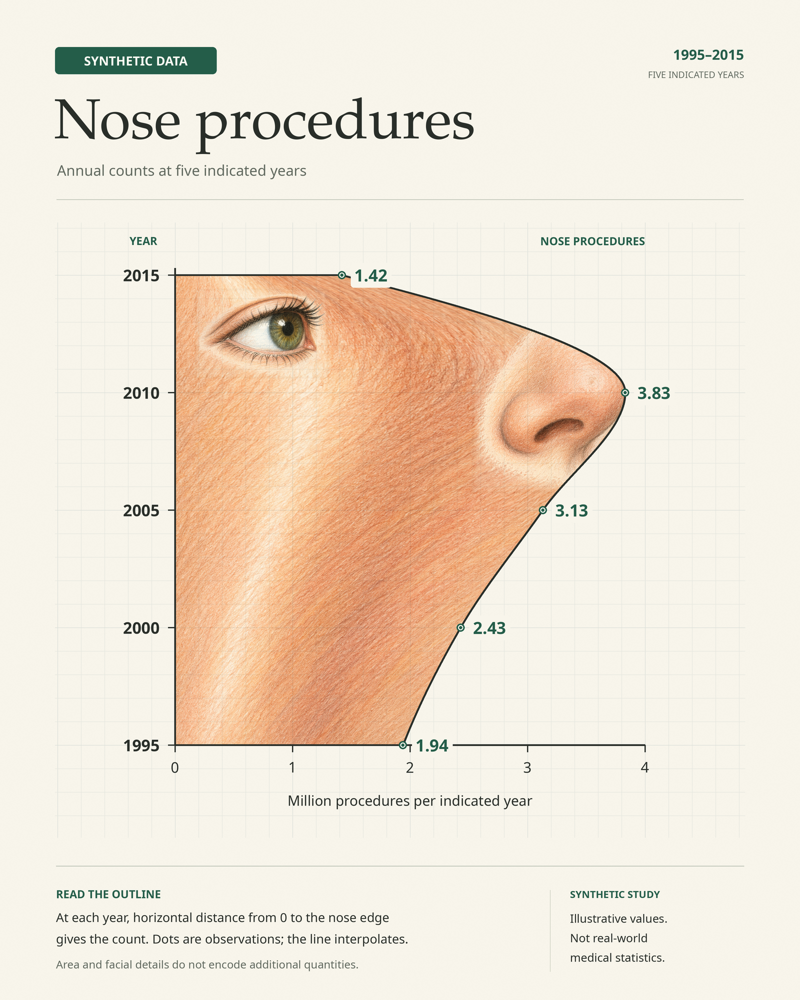
该轮修改与源码 First composition: generated pencil anatomy fused with the exact five-point nose silhouette
轮次记录 · 绘图代码 尚无有效独立评价，原技术状态另列。
代码复现像素一致：True；完整共同支持：False
首次评审状态 第2轮 最终 · ok 该轮修改与源码 Move endpoint labels clear of the nose boundary and baseline; derive header and units from input data
轮次记录 · 绘图代码 尚无有效独立评价，原技术状态另列。
代码复现像素一致：True；完整共同支持：False
首次评审状态 E31 · 分来源的各期海洋塑料排放量 /M053 横向海洋剖面，保留水面、海水材质、游艇与四个不同颜色的水下来源层。横向有序时期，数据向下累计；图例、当前分项与总值表可外置以保证可读性。
参考图、共同要求与冻结变换 {'method': 'reverse value order per series', 'time_points_unchanged': True, 'value_multisets_unchanged': True}
共同设计 · 隐喻关键结构与意义 相近数据 · ok 输入数据
第1轮 首轮 · ok 该轮修改与源码 First complete composition: generated ocean texture and yacht, four data-bound layers, aligned exact-value table
轮次记录 · 绘图代码 尚无有效独立评价，原技术状态另列。
代码复现像素一致：True；完整共同支持：False
首次评审状态 第2轮 · ok 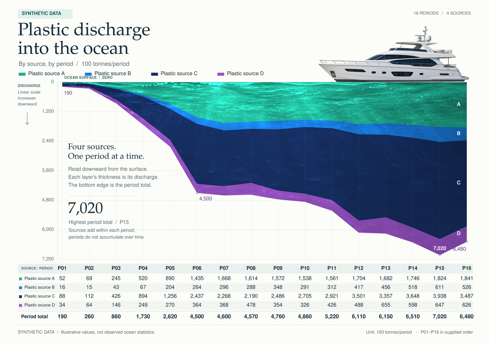
该轮修改与源码 Increase table label spacing and clear grid lines behind explanatory text; retain identical numerical mapping
轮次记录 · 绘图代码 第3轮 最终 · ok 该轮修改与源码 Remove the outside total-outline stroke to avoid adding apparent depth to the smallest early-period layers
轮次记录 · 绘图代码 尚无有效独立评价，原技术状态另列。
代码复现像素一致：True；完整共同支持：False
首次评审状态 冲突数据 · ok 输入数据
第1轮 首轮 · ok 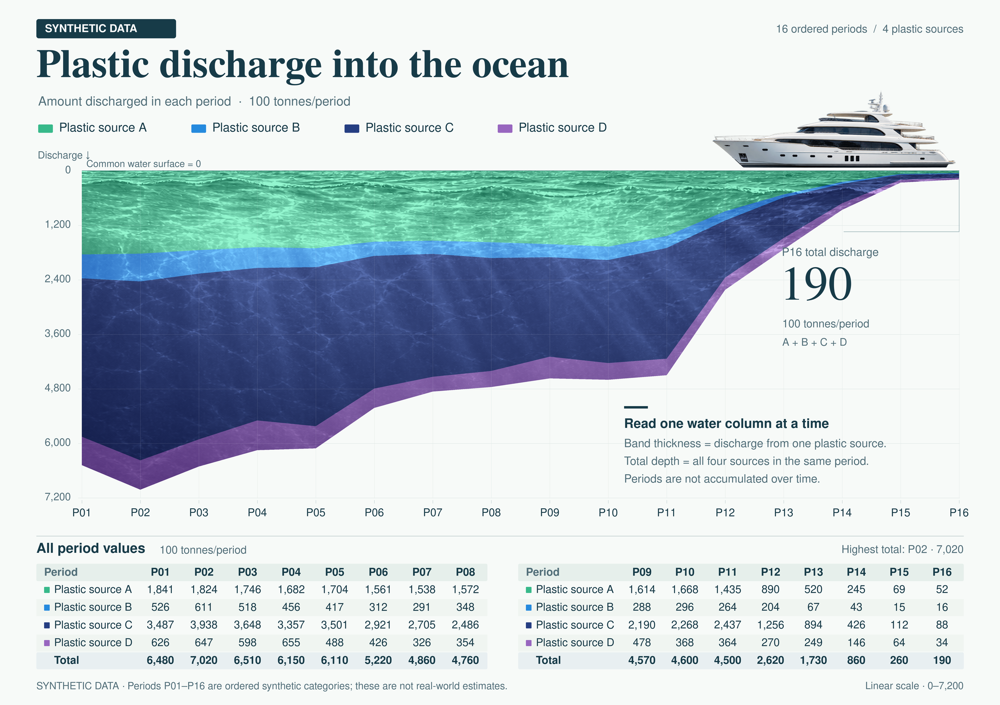
该轮修改与源码 首轮：生成海水材质裁切为四层精确线性面积，水面零线与游艇相接，附完整分项和总值表。
轮次记录 · 绘图代码 尚无有效独立评价，原技术状态另列。
代码复现像素一致：True；完整共同支持：False
首次评审状态 第2轮 最终 · ok 该轮修改与源码 第二轮：去掉游艇下方残余透明空隙使船底接触零水面；下移 P16 注释消除与 P13 附近图层约 6.8 像素的重叠；调整轴说明间距。
轮次记录 · 绘图代码 尚无有效独立评价，原技术状态另列。
代码复现像素一致：True；完整共同支持：False
首次评审状态 E32 · 人均经济产出与跳水者姿态 /M055 方格纸和底部水面中的侧视跳水者，保留连贯的脚、双腿、髋、躯干、肩臂、头颈、泳帽与泳衣。人体姿势由当前趋势适配，节点路径沿脚经身体至手穿行。
参考图、共同要求与冻结变换 {'method': 'cyclic half shift', 'time_points_unchanged': True, 'value_multisets_unchanged': True}
共同设计 · 隐喻关键结构与意义 相近数据 · ok 输入数据
第1轮 首轮 · ok 该轮修改与源码 First complete composition: generated diver warped to all ten values, exact data polyline, graph-paper grid and zero-level waterline
轮次记录 · 绘图代码 尚无有效独立评价，原技术状态另列。
代码复现像素一致：True；完整共同支持：False
首次评审状态 第2轮 最终 · ok 该轮修改与源码 Move 18,800, 17,100 and 10,800 labels away from the data stroke so every segment remains visible
轮次记录 · 绘图代码 尚无有效独立评价，原技术状态另列。
代码复现像素一致：True；完整共同支持：False
首次评审状态 冲突数据 · ok 输入数据
第1轮 首轮 · ok 该轮修改与源码 First complete composition: data-warped diver, linear red path, graph paper, waterline zero, all exact labels
轮次记录 · 绘图代码 尚无有效独立评价，原技术状态另列。
代码复现像素一致：True；完整共同支持：False
首次评审状态 第2轮 最终 · ok 该轮修改与源码 Move the 10,800 and 11,200 value labels clear of the generated body; retain all data geometry
轮次记录 · 绘图代码 尚无有效独立评价，原技术状态另列。
代码复现像素一致：True；完整共同支持：False
首次评审状态 E33 · 年度住宅价格 /M056 斜视完整住宅有墙体、门窗、房顶、升离地面的房体与下方家庭。屋顶真实轮廓承担走势，价格抬升或下降的寓意可见，不能强设噩梦或持续上涨结论。
参考图、共同要求与冻结变换 {'method': 'reverse value order per series', 'time_points_unchanged': True, 'value_multisets_unchanged': True}
共同设计 · 隐喻关键结构与意义 相近数据 · pending 输入数据
等待完整渲染图；此项尚无质量结论。
冲突数据 · pending 输入数据
等待完整渲染图；此项尚无质量结论。
E34 · 女性议员席位占比与50%平等目标 /M058 浅灰方格纸上的肤色手臂与向右伸展的完整手，保留叠置与分开的手指、五处紫色指甲、拇指和掌纹。主上轮廓直接承担当前走势；标题不预设接近50%或上升。
参考图、共同要求与冻结变换 {'method': 'reverse value order per series', 'time_points_unchanged': True, 'value_multisets_unchanged': True}
共同设计 · 隐喻关键结构与意义 相近数据 · pending 输入数据
等待完整渲染图；此项尚无质量结论。
冲突数据 · pending 输入数据
等待完整渲染图；此项尚无质量结论。
E35 · 年度出生率 /M078 完整婴儿的鼓起白尿布承载红折线，双脚、头部、手臂、尿布折边和书页说明保留。
参考图、共同要求与冻结变换 {'method': 'reverse value order per series', 'time_points_unchanged': True, 'value_multisets_unchanged': True}
共同设计 · 隐喻关键结构与意义 相近数据 · pending 输入数据
等待完整渲染图；此项尚无质量结论。
冲突数据 · pending 输入数据
等待完整渲染图；此项尚无质量结论。
E36 · 税法文档的年度页数 /M082 各年份独立白色散页纸堆，纸边、纸层、顶面和共用地面保留。
参考图、共同要求与冻结变换 {'method': 'reverse value order per series', 'time_points_unchanged': True, 'value_multisets_unchanged': True}
共同设计 · 隐喻关键结构与意义 相近数据 · pending 输入数据
等待完整渲染图；此项尚无质量结论。
冲突数据 · pending 输入数据
等待完整渲染图；此项尚无质量结论。
E37 · 政党选票份额与未投票人口比例 /M087 红色桌面上的写实乡村面包、黄油、淡黄色奶酪与绿色葱茎，保留孔隙、粗糙外皮、食材接触阴影及前后层次。两系列分别由细茎中心线、奶酪下边缘承担。
参考图、共同要求与冻结变换 {'method': 'reverse value order per series', 'time_points_unchanged': True, 'value_multisets_unchanged': True}
共同设计 · 隐喻关键结构与意义 相近数据 · pending 输入数据
等待完整渲染图；此项尚无质量结论。
冲突数据 · pending 输入数据
等待完整渲染图；此项尚无质量结论。
E38 · 社区街头共绘计划的净支持度（合成议题替代） /M092 写实成人在街头共同涂绘、刷子接触路面和前后遮挡保留；折线叠合于场景。
参考图、共同要求与冻结变换 {'method': 'reverse value order per series', 'time_points_unchanged': True, 'value_multisets_unchanged': True}
共同设计 · 隐喻关键结构与意义 相近数据 · pending 输入数据
等待完整渲染图；此项尚无质量结论。
冲突数据 · pending 输入数据
等待完整渲染图；此项尚无质量结论。
E39 · 年度价格通胀与实际产出变化 /M094 插画地球融化到积液和滴流，暗背板与浅透视底座保留，两系列叠合。
参考图、共同要求与冻结变换 {'method': 'reverse value order per series', 'time_points_unchanged': True, 'value_multisets_unchanged': True}
共同设计 · 隐喻关键结构与意义 相近数据 · pending 输入数据
等待完整渲染图；此项尚无质量结论。
冲突数据 · pending 输入数据
等待完整渲染图；此项尚无质量结论。
E40 · 一克拉钻石价格与舞台人物屈腿 /M115 全身舞台人物保留礼帽、两臂、两腿、网袜和高跟鞋；数据路径融合前景腿。
参考图、共同要求与冻结变换 {'method': 'reverse value order per series', 'time_points_unchanged': True, 'value_multisets_unchanged': True}
共同设计 · 隐喻关键结构与意义 相近数据 · pending 输入数据
等待完整渲染图；此项尚无质量结论。
冲突数据 · pending 输入数据
等待完整渲染图；此项尚无质量结论。
E41 · 人均年度卷纸用量 /M008 白底单排卷纸插画，保留椭圆卷头、卷绕连接、白色纸面、穿孔虚线、锯齿撕口与卷头彩色类别纹样。卷头大小不编码，纸带长度跟随当前值。
参考图、共同要求与冻结变换 {'method': 'rank and ties preserved, fixed common axis, expanded positive max/min ratio', 'baseline_positive_ratio': 3.76, 'conflict_positive_ratio': 940.0, 'unchanged_other_series': 0}
共同设计 · 隐喻关键结构与意义 相近数据 · ok 输入数据
第1轮 首轮 / 最终 · ok 该轮修改与源码 First complete render: generated roll heads and embossed tissue with a shared 0–100 length scale
轮次记录 · 绘图代码 旧质量：pass；数值几何：True；结构：pass；意义：pass；微小标记：pass
独立评价与具体证据 十个类别、数值、单位与纸带长度正确对应。卷头与下垂纸带保持连接，生成素材可见，主题及合成人口组含义完整，未发现违反冻结要求的可见缺陷。
completeness · pass ：十条纸带及Group A–J完整，顺序与输入一致；标题、合成提示、系列和单位齐全。
numeric_text · pass ：可见数值依次为94、89、83、61、58、54、48、47、32、25，与data.json逐项一致。
binding · pass ：类别位于各卷正上方，数值位于对应纸带下端；没有跨列、遮挡或系列混淆。
geometry · pass ：共同零线至锯齿平均下缘的像素长度符合0–100线性轴；十项最大测量偏差约0.06%满量程，低于3%容差。
source · pass ：已查看raw_01.png、roll_head.png和paper_texture.png；最终卷头的孔洞、卷层及纸面压纹与素材对应。render.py加载这些素材并按数据裁剪纸带，capture_render.py含完整图像保存流程。
integration · pass ：数据边界就是白色下垂纸带的侧边与锯齿下缘；卷头接触并连接纸带，网格位于纸后，未见破坏融合关系的层次或接缝。
readability · pass ：原始分辨率下十组标签、数值、Annual use及rolls/person/year均清晰；SYNTHETIC DATA醒目，人口组父类和读图说明可读。
critical_structure · pass ：白底单排十卷纸均有椭圆端面、中心孔、环状卷层及彩色纹样；白纸从卷体下缘连续向下延伸，保留横向穿孔虚线和锯齿撕口。卷头大小一致，不承担量值。
semantic_meaning · pass ：Annual toilet paper use与rolls/person/year明确人均年度卷纸用量；SYNTHETIC POPULATION GROUPS解释Group A–J的类别角色，说明明确这些不是观测国家统计。
reference_meaning · pass ：保留参考的人均年度卷纸用量主题及纸带长度承载数量的融合关系；国家及原统计值按冻结输入替换为合成人口组和新数值。
small_mark_visibility · pass ：最短Group J纸带约270像素，卷头连接、纸面、穿孔与锯齿仍可辨；47和48两条下缘相差约11像素，没有人为最小长度或小值消失。
当前主题与参考一致。国家名及真实统计替换为合成人口组和新值来自冻结输入，图面补充了人口组父类与非观测说明，属于允许的输入适配；彩色环纹保留卷头类别标识。未见输出导致的主题、物体关系或统计含义丢失，也未见小值受分辨率限制而失去纸带关系。
完整评审 代码复现像素一致：False；完整共同支持：False
首次评审状态 冲突数据 · ok 输入数据
第1轮 首轮 · ok 该轮修改与源码 Initial complete composition: generated roll heads and paper texture, one shared linear length mapping, all ten exact category/value labels
轮次记录 · 绘图代码 旧质量：pass；数值几何：True；结构：pass；意义：pass；微小标记：partial
独立评价与具体证据 数据、标签绑定、主题及卷纸承载关系符合冻结要求。微小纸带的物体细节仅部分可辨，属于原分辨率限制；未发现实质性可见缺陷。
completeness · pass ：十个类别、十个卷纸标记及唯一Annual use系列完整，顺序为Group A–J。
numeric_text · pass ：全部十个数值与data.json一致，0.5、0.2、0.1未被舍入为零；rolls/person/year单位明确。
binding · pass ：类别位于各自卷头上方，数值位于对应纸带下方；E–J以独立竖直引线连接，未见交叉或错配。
geometry · pass ：纸带共享零线与0–100线性刻度，最终像素下缘符合目标值，最大近似偏差约0.04个单位；微小值的相对精度另保留不确定性。
source · pass ：已查看raw_01.png、卷头及纸纹裁切素材；其纸芯、彩色同心纹样、卷绕阴影与压纹实质性出现在最终主体中。render.py使用这些素材，并由代码生成数据纸带边界和文字。
integration · pass ：承载数值的区域是连接卷体下缘的垂挂纸带；生成纸纹限制在该区域内。卷头同尺寸，纸带长度随值变化，连接、遮挡和表面方向协调。
readability · pass ：标题、合成声明、人口组父类、全部类别和值、系列、单位及读数说明清楚，没有必要文字被遮挡或截断。
critical_structure · pass ：白底单排卷纸保留椭圆侧端面、纸芯、彩色类别纹样和弧形卷体；白纸从卷体底部连续下垂，较长纸带具穿孔虚线与锯齿撕口。最短纸带细节受像素限制。
semantic_meaning · pass ：Annual toilet paper use、Annual use及rolls/person/year共同表达合成人口组的人均年度用量；图面明确纸带长度编码、卷头和穿孔不编码，未引入累计或组成解释。
reference_meaning · partial ：保留参考的人均年度卷纸用量及卷纸长度比较关系；原国家类别和真实统计改为冻结输入指定的合成人口组，属于允许的输入改编，不归责为输出丢失。
small_mark_visibility · partial ：G、H仍可见短纸带与细小撕口；I、J在原生分辨率下主要表现为卷体下方约两像素和一像素的细边，白纸区域与锯齿难以分别辨认。数值和绑定清楚，未见人为加长。
输出保留当前主题、统计口径与纸带承载关系。参考中的真实国家统计被输入明确改为合成人口组，因而参考意义记为部分保留，不是生成器错误。最小值的纸面与撕口辨识不足归于像素分辨率，不能仅凭正确公式断言其完整可见，也不据此要求放大数据。
完整评审 代码复现像素一致：False；完整共同支持：False
首次评审状态 第2轮 最终 · ok 该轮修改与源码 Remove faint gridlines behind the reading note; retain every data position, true small length, roll part and label
轮次记录 · 绘图代码 旧质量：pass；数值几何：True；结构：pass；意义：pass；微小标记：partial
独立评价与具体证据 通过。数据、绑定、主题与纸带隐喻均保留，未发现重大可见缺陷。极小标记的结构可辨性部分保留。review.json已保存并通过schema校验。
completeness · pass ：十个卷头与Group A至J顺序完整，Annual use及单位均显示。
numeric_text · pass ：94、52、27、12、5、2、1、0.5、0.2、0.1全部准确，无正值写成零。
binding · pass ：类别位于对应卷头上方，数值位于对应纸带下方；短纸带引线没有跨列误绑。
geometry · pass ：成图端点符合共同0–100线性尺度，偏差未超满量程3%；代码直接控制长度和对称锯齿，不设最小长度。
source · pass ：已查看原始素材、卷头和纸纹资产，其纸芯、彩色环纹、阴影及纹理实际出现在主体中；源码直接使用这些资产。合成数据及本地来源说明明确。
integration · pass ：纸带连续连接卷头下缘，长度本身承载数值；未见破坏连接的遮挡或错位。
readability · pass ：主题、合成声明、人口组父类、类别、数值、单位及读图说明清晰，标签不遮挡数据端点。
critical_structure · pass ：保留单排等尺寸卷头、椭圆侧面、纸芯和彩色纹样；白纸从卷绕面向下接出，长纸带具有穿孔虚线和锯齿撕口，平均撕口高度承载数据。
semantic_meaning · pass ：标题及rolls/person/year明确人均年度卷纸用量，synthetic population groups解释Group A至J的类别角色。
reference_meaning · pass ：保留以展开纸带长度比较每人每年卷纸用量的含义；国家名和旗纹改为合成人口组及彩色环纹，符合当前输入适配。
small_mark_visibility · partial ：0.2和0.1仅在卷头底部留下数像素边带，独立白纸面和锯齿难辨。数值与引线清晰，但不能替代微小几何证据；未见人为放大。
未见输出造成的主题或统计口径丢失。真实国家到合成人口组的变化来自冻结输入允许的适配。最小标记的部分结构不可辨主要受真实比例与像素分辨率限制，不归为重大生成缺陷。
完整评审 代码复现像素一致：False；完整共同支持：False
首次评审状态 E42 · 用芝麻糖单元表示每周收入 /M014 写实芝麻糖的完整顶面单元首尾排列，共同零线、蓝色台面和碎屑保留。
参考图、共同要求与冻结变换 {'method': 'rank and ties preserved, fixed common axis, expanded positive max/min ratio', 'baseline_positive_ratio': 5.0, 'conflict_positive_ratio': 50.0, 'unchanged_other_series': 0}
共同设计 · 隐喻关键结构与意义 相近数据 · ok 输入数据
第1轮 首轮 · ok 该轮修改与源码 First composition: fixed 0–990000 USD scale, full sesame tops at 25 px per 18000 USD, blue tabletop and exact weekly labels
轮次记录 · 绘图代码 旧质量：pass；数值几何：True；结构：pass；意义：pass；微小标记：pass
独立评价与具体证据 数值、完整单元计数、线性量尺及标签绑定正确。芝麻糖顶面直接构成数据柱，小单元仍可辨认和计数；未发现违反必要要求的可见缺陷。
completeness · pass ：五个周类别按WK1–WK5排列，单一每周收入系列、全部金额、USD单位和SYNTHETIC DATA声明齐全。
numeric_text · pass ：18,000、36,000、72,000、54,000、90,000美元均与输入一致；合计270,000美元、15个单元、每单元18,000美元及0–990,000量尺正确。
binding · pass ：每根柱下方居中对应周标签、金额及1/2/4/3/5 slabs说明，顺序和相邻柱之间的归属清楚。
geometry · pass ：原图可分辨1、2、4、3、5个完整材质带，节距25像素；五柱高度与目标25、50、100、75、125像素一致至约1像素边缘取样误差，低于3%满量程容差。
source · pass ：已查看raw_01.png和slab_01.png；其中的芝麻焦糖顶面纹理实际用于全部柱体及图例，碎屑用于台面。render.py加载这些素材，并以输入值控制重复次数、位置和尺寸。
integration · pass ：芝麻糖完整顶面本身就是计数单元和柱体区域，直接编码每周收入；图例明确一完整顶面对应18,000美元，并排除阴影与碎屑。
readability · pass ：主题、合成数据声明、系列与单位、周标签、金额、计数及量尺说明清晰，没有遮挡必要文字。
critical_structure · pass ：每个单元保留芝麻颗粒覆盖的矩形顶面、窄暗边和台面投影；多个顶面沿纵向首尾相接排列，接缝可分辨，五列下缘共同落在零线。蓝色台面和散落碎屑保留，无遮挡导致单元缺失。
semantic_meaning · pass ：Weekly revenue in sesame slabs、Synthetic weekly revenue (USD)、WEEK及WK1–WK5共同明确合成的每周收入主题、时间类别和美元单位；五周合计与单周柱分别标识，未混为累计序列。
reference_meaning · partial ：保留参考图中以食物顶面数量组成周别金额柱的关系。core.json明确reference_semantic_scope为adapted_topic，当前每周收入语义及新单元金额按输入解释；此部分属于允许的输入改编，不是输出意义丢失。
small_mark_visibility · pass ：原分辨率下单元约150×25像素，芝麻颗粒纹理、整块轮廓和各块间接缝可见；最小WK1仍有一个完整顶面，其他柱可逐块计数。未依赖数值标签单独证明几何。
当前主题与参考语义的差异由冻结输入明确许可的adapted_topic产生；输出保留了每周收入、USD、周类别和顶面计数的联系。横向细长糖块属于允许的身份兼容形状适配，未见关键连接关系或数据承载关系丢失。约1像素边缘定位及更小显示尺寸属于分辨率限制。
完整评审 代码复现像素一致：True；完整共同支持：True
首次评审状态 第2轮 最终 · ok 该轮修改与源码 Rectify complete sesame top edges to remove measured 2 px height loss; separate USD axis label from title
轮次记录 · 绘图代码 旧质量：pass；数值几何：True；结构：pass；意义：pass；微小标记：pass
独立评价与具体证据 通过。五周金额、1/2/4/3/5个完整顶面、共同零线和固定线性量尺一致；芝麻糖直接承载数据，每周收入及USD语义清楚。未发现重大或需单列的轻微可见缺陷。
completeness · pass ：WK1–WK5按输入顺序完整出现，单一收入系列、五个金额及全部15个数据顶面均保留。
numeric_text · pass ：五个金额18,000/36,000/72,000/54,000/90,000、合计270,000、每块18,000及0–990,000 USD量尺均与冻结数据一致。
binding · pass ：每周名称、金额和块数居于对应柱下方；1/2/4/3/5个可见顶面分别绑定WK1–WK5，无错位或串列。
geometry · pass ：像素检测得到25/50/100/75/125像素柱高，与满尺度1375像素下的目标一致；完整单元可逐个数出，没有为小值设最低高度，阴影不形成额外单元。
source · pass ：已查看raw_01.png及校直素材，芝麻粒、焦糖纹理和碎屑实质用于成图。render.py读取这些素材，由数据控制重复次数、位置、高度及标签；未执行渲染。
integration · pass ：数据柱本身由芝麻糖完整顶面构成，非旁置插画。糖块依次接触排列于蓝色台面，细侧边及下侧投影与顶面相接，未见破坏结构的遮挡、悬空或纹理接缝。
readability · pass ：合成数据提示、主题标题、系列及USD单位、周标签、数值、单位图例和量尺均清晰可读；糖块与文字互不遮挡。
critical_structure · pass ：五列完整芝麻糖顶面沿量值方向连续排列，底边共用零线，列间分离；蓝色台面和散落碎屑保留。承载数值的是顶面单元的整数数量和整列长度，薄侧边及投影未额外延长排列间隔。
semantic_meaning · pass ：Weekly revenue in sesame slabs、Synthetic weekly revenue (USD)、WEEK及WK1–WK5共同明确合成每周收入、周类别和美元单位。五周合计单独说明，未将各周柱误作累计收入或百分比组成。
reference_meaning · partial ：保留参考的周序列、金额轴和以芝麻糖顶面构成柱的关系。core明确指定adapted_topic，当前合成收入主题属于输入允许的改编；不要求保留参考数值或原始真实统计含义，此部分保留不计为生成缺陷。
small_mark_visibility · pass ：原尺寸下最小WK1单元约150×25像素，仍可辨完整矩形顶面及芝麻纹理；其余柱的单元分隔可数。判断有直接可见边界支持，不仅依赖金额文字或代码公式。
未发现输出造成的主题、单位、周类别或数据承载关系丢失。当前合成每周收入是core允许的主题改编，因此reference_meaning记为partial而非生成失败。原图具体真实业务口径无法由可见内容确定；小单元的细粒度材质受分辨率限制，但顶面身份、接触关系和计数仍保留。
完整评审 代码复现像素一致：True；完整共同支持：True
首次评审状态 冲突数据 · ok 输入数据
第1轮 首轮 · ok 该轮修改与源码 首张完整图：蓝色台面、生成芝麻糖完整顶面、1/2/4/3/50单元及统一线性美元量尺
轮次记录 · 绘图代码 旧质量：pass；数值几何：True；结构：pass；意义：pass；微小标记：pass
独立评价与具体证据 五周数值、单元计数、标签绑定及线性尺度正确。完整芝麻糖顶面直接构成柱形，蓝色台面、碎屑和共同零线保留；小值仍可辨认完整单元。未发现违反冻结要求的可见缺陷。
completeness · pass ：WK1至WK5依原顺序齐全，单系列收入、USD、合成声明、单位图例及0–990000量尺均可见。
numeric_text · pass ：五柱标值18000、36000、72000、54000、900000准确；单元数1、2、4、3、50及总计1080000均正确，50 of 60 slabs与数据一致。
binding · pass ：每个金额位于对应糖柱上方，周标签和单元计数位于同一柱下方，未见跨柱错绑或遮挡。
geometry · pass ：图像检出的五柱高度约24、48、96、72、1200像素，与1、2、4、3、50个等高单元吻合；WK5的49条内部接缝支持实际50段，最高顶边对齐900000刻度。偏差远小于3%满量程。
source · pass ：已查看raw_01.png及slab_01.png，原始素材中的芝麻糖纹理在全部数据柱和图例中实质可见。prepare_assets.py提取顶面，render.py使用这些素材，并以数据计算单元数量、位置和文字。
integration · pass ：芝麻糖完整顶面就是计量单元；各顶面沿柱方向相接，其并集边界承载柱高。薄右侧阴影及台面碎屑不增加数值，文字和图例说明一致。
readability · pass ：主题、收入指标、USD、周标签、全部金额、单元图例和合成声明清晰；未见必要文字被柱体、纹理或其他文字遮挡。
critical_structure · pass ：五列近俯视的完整芝麻糖顶面纵向接续，底端贴共同零线；表面芝麻嵌在糖体中，右侧薄影与蓝色台面关系一致，零散碎屑保留。数据由糖体顶面及其连续排列承载。
semantic_meaning · pass ：Weekly revenue in sesame slabs、Synthetic weekly revenue · USD、WEEK及WK1–WK5共同表达合成每周收入。1 whole slab = $18,000解释单位编码；五周总额明确为求和，未将柱形表述为逐周累计。
reference_meaning · partial ：core明确reference_semantic_scope为adapted_topic，当前每周收入主题属于输入允许的改编。参考的糖块组成柱形、周类别、金额尺度和台面关系保留；参考未明确写出的原业务含义不作推断。
small_mark_visibility · pass ：最小单元约156×24像素，仍可见完整矩形顶面、芝麻纹理和边界。前四柱的1、2、4、3段可直接区分，未通过抬高小值或添加分数糖块增强辨认。
未发现当前主题或关键数据承载关系的输出丢失。参考意义的部分保留源于core允许的主题改编，不计为生成缺陷；原图具体业务指标仍不明确。小单元的顶面关系可见，微细材质判断受24像素高度限制。
完整评审 代码复现像素一致：True；完整共同支持：True
首次评审状态 第2轮 最终 · ok 该轮修改与源码 调亮糖块内侧底缘，改善零线附近24像素小单元的可见边界；移除量尺顶部重复USD微字
轮次记录 · 绘图代码 旧质量：pass；数值几何：True；结构：pass；意义：pass；微小标记：pass
独立评价与具体证据 五周数值、标签、完整糖块计数及线性柱高一致。芝麻糖顶面直接组成数据柱，台面、碎屑和共同零线保留，未发现实质性可见缺陷。参考主题的明确改编单独记为部分保留。
completeness · pass ：WK1至WK5依次呈现，单一收入系列完整；五柱共60个数据单元，另有明确分离的图例单元。
numeric_text · pass ：五个金额、1/2/4/3/50块、总额$1,080,000、50 of 60 slabs及每块$18,000均与输入一致；量尺明确为$0–$990,000。
binding · pass ：金额置于对应柱顶，周次和糖块数量位于同柱正下方；未见错位、串列或遮挡。
geometry · pass ：原图像素边界支持24、48、96、72、1200像素柱高和1、2、4、3、50块计数；全部从同一零线起算，影子未增加柱高。
source · pass ：SYNTHETIC DATA醒目可读。已查看raw_01.png和slab_01.png，芝麻糖纹理与成图主体对应；render.py加载这些素材并控制各单元位置、数量和文字。
integration · pass ：糖块顶面本身构成五根数据柱，非旁置装饰；每个完整顶面的范围承担$18,000，碎屑和右向投影置于台面且明确不计值。
readability · pass ：标题、收入指标、USD、周类别、金额、计数、量尺和图例均清晰完整，无关键文字重叠或截断。
critical_structure · pass ：完整横向长方形糖块顶面沿柱方向相接，横向接缝分隔各单元；五柱底部共线，右侧投影与蓝色台面接触，散落碎屑保留。姿态适配未破坏顶面计数关系。
semantic_meaning · pass ：Weekly revenue in sesame slabs及Synthetic weekly revenue · USD明确主题、指标和单位；WEEK与WK1至WK5明确类别角色，五周总额与单周收入区分清楚。
reference_meaning · partial ：参考中的周序、美元刻度和糖块组成柱形的关系保留。core明确reference_semantic_scope为adapted_topic；当前合成收入主题及单位值的变化归因输入许可，不要求保留原金额或旧峰谷。
small_mark_visibility · pass ：最小柱仍有约156×24像素的完整顶面，芝麻纹理与轮廓可辨；前四柱1、2、4、3块可分辨。WK5的49道内部分界在原分辨率中存在，未以夸大小值换取辨识度。
未发现输出造成的主题、类别角色或数据承载关系丢失。reference_meaning的部分保留来自core明确允许的主题改编，并非生成失败；参考原始业务主题本身不完全可见。小单元仍保留顶面与相接关系，细微侧边观感的分辨率限制不构成结构缺失。
完整评审 代码复现像素一致：True；完整共同支持：True
首次评审状态 E43 · 列车最高速度与一小时行程 /M017 八行侧视高速列车，各列车车头朝右，保留不同鼻形、车窗、车厢、轮组和受电弓。顶部双单位速度轴与底部一小时距离参照共用水平尺度。
参考图、共同要求与冻结变换 {'method': 'rank and ties preserved, fixed common axis, expanded positive max/min ratio', 'baseline_positive_ratio': 1.5255102040816326, 'conflict_positive_ratio': 500.0, 'unchanged_other_series': 0}
共同设计 · 隐喻关键结构与意义 相近数据 · ok 输入数据
第1轮 首轮 / 最终 · ok 该轮修改与源码 Initial composition: eight generated side-profile train bodies, measured linear nose endpoints, shared speed and distance scales
轮次记录 · 绘图代码 旧质量：pass；数值几何：True；结构：pass；意义：pass；微小标记：pass
独立评价与具体证据 通过。数据、标签、列车结构及速度—距离关系符合要求。review.json已保存并通过schema校验；按补充要求未运行submit.py。
completeness · pass ：八类别按输入顺序完整显示，单一速度系列、双单位速度轴及一小时距离轴齐全。
numeric_text · pass ：km/h为598、596、570、482、428、416、412、392；mph为371.6、370.3、354.2、299.5、265.9、258.5、256.0、243.6，均正确。
binding · pass ：类别、列车和速度逐行对应，鼻尖引线无跨行错绑。
geometry · pass ：实体鼻尖长度符合共同零点的线性编码；最大像素换算误差约0.63 km/h，上下尺度一致。
source · pass ：已查看两张原始素材，其列车纹理和部件实质构成成图主体；源码读取素材并控制长度。
integration · pass ：实际数据边界就是实体列车鼻尖，列车本身承担长度编码。
readability · pass ：标题、合成声明、类别、数值、单位和一小时解释清晰，无明显遮挡或截断。
critical_structure · pass ：八行列车均朝右，鼻形有区别；车窗在车厢内、轮组在车体下方、受电弓连接车顶，节间连接连续。
semantic_meaning · pass ：明确表达合成最高速度及保持该速度一小时的行程，列车类别和km/h、mph、km角色清楚。
reference_meaning · partial ：保留速度比较与一小时距离关系。真实车型、地区和城市叙事由冻结输入改为合成类别及通用距离参照，属于允许的输入改编。
small_mark_visibility · pass ：最短列车仍约1104像素，无微小数据标记。598与596的鼻尖相差约5像素，接近目标5.63像素，未人为扩大差距。
未发现当前主题、统计角色或列车长度承载关系的输出丢失。原真实类别与城市叙事的部分替换归因于冻结输入合成化，不计输出缺陷；分辨率仅限制鼻尖亚像素定位。
完整评审 代码复现像素一致：True；完整共同支持：True
首次评审状态 冲突数据 · ok 输入数据
第1轮 首轮 · ok 该轮修改与源码 First complete render: generated train bodies on shared linear speed/distance scale, with explicit small-value detail scale
轮次记录 · 绘图代码 旧质量：pass；数值几何：True；结构：pass；意义：pass；微小标记：partial
独立评价与具体证据 数据、标签、共同尺度和实体鼻尖编码相符，生成列车素材实质参与数据承载。小值另有明确标尺的细节图；主图极小标记的部件辨识受分辨率限制，未发现违反可行核心要求的重大可见缺陷。
completeness · pass ：Train A–H按输入顺序完整出现，单一最高速度系列及八个非零值均保留；细节图明确重复E–H。
numeric_text · pass ：八个km/h数值与输入一致；mph依次为371.6、152.9、62.9、25.9、10.7、4.4、1.8、0.7，符合除以1.609344并保留一位小数。
binding · pass ：每个类别、km/h及mph标签与同一水平行列车绑定；细节图另标Train E–H，无错配。
geometry · pass ：实际鼻尖位置与线性目标的像素差远小46.8px；主图未设置可见的最小长度。上下主轴同零点同跨度，细节图独立标明0–20及18×。
source · pass ：已查看raw_01.png；其鼻形、窗列、轮组和车身材质明显用于成图。render.py实际按数据计算宽度并拼接、缩放这些素材。
integration · pass ：连续车身本身构成长短标记，右侧实体鼻尖是数据边界，未被普通条形或旁置图标替代；细节图保持同一关系。
readability · pass ：合成数据提示、主题、类别、精确数值、双单位、细节倍率和一小时恒定最高速度假设均可读，无重大遮挡。
critical_structure · pass ：八行共同左起点、朝右车头及上下对齐标尺保留。大车和细节图可见车窗嵌入车厢、轮组接于车底、受电弓接于车顶；未见破坏车身连续性的拼接或层序问题。
semantic_meaning · pass ：标题、副标题及页脚明确表达假想列车最高速度与按该速度行驶一小时的距离，类别角色、km/h、mph和km均清楚。
reference_meaning · partial ：保留参考的列车实体长度比较速度及一小时距离关系；真实列车型号、地域和世界纪录语境由冻结输入明确改为假想Train A–H，属于允许的输入改编。
small_mark_visibility · partial ：主图F–H约18、8、3px长，后两者接近细线或点，不能充分辨认部件关系。18×独立尺度使E–H重新可见为列车；其中H约56px长，细部仍有限。
真实列车及地域身份的变化归因于允许的合成输入改编，当前速度—距离含义未丢失。主图极小车体关系的弱化主要来自真实比例与像素分辨率，细节图提供补充证据；不据此认定重大输出语义失败。
完整评审 代码复现像素一致：True；完整共同支持：True
首次评审状态 第2轮 最终 · ok 该轮修改与源码 Refine short-cab assembly to remove the compressed carriage stub in Train F detail; derive magnification label from the axis mapping
轮次记录 · 绘图代码 旧质量：pass；数值几何：True；结构：pass；意义：pass；微小标记：partial
独立评价与具体证据 通过。八类数值、单位换算、共零点至实体鼻尖的长度及一小时距离尺度一致；生成列车素材实际承担数据编码。微小主图标记的部件辨识有限，明确标尺的细节图提供补充。允许的非数据尺寸适配使任务可行，未发现重大可见缺陷。
completeness · pass ：Train A–H按输入顺序齐全，单一峰值速度系列有八个主图标记；细节框明确重复E–H，不构成额外类别。
numeric_text · pass ：八个km/h数值均完整保留；mph依次为371.6、152.9、62.9、25.9、10.7、4.4、1.8、0.7，均符合除以1.609344并保留一位小数。双单位轴及一小时距离换算正确。
binding · pass ：各类别、km/h及mph文字与同一水平行的列车对应；细节框E–H标签和车体对应清楚，无交叉绑定。
geometry · pass ：像素检测支持主图共零点、线性鼻尖位置及上下轴对齐；右缘误差远小于3%满量程。主图未对小值设置最小长度，细节框明确使用独立18倍尺度。
source · pass ：已查看raw_01.png及prepare_assets.py、render.py；原始素材的车窗、车身配色、轮组和鼻形在成图中实质可见。代码裁取并拼接车厢，以当前数据控制总宽、轴和文字。
integration · pass ：数据区域由实体车身连续延伸至朝右鼻尖构成；窗位于车身内，轮组位于车底，受电弓连接车顶。长车厢相接，未见破坏长度判读的断裂或遮挡。
readability · pass ：合成数据提示、主题、类别、完整数值、单位和恒定峰值速度行驶一小时的说明均可读；细节尺度与主图清晰区分，无重要文字遮挡。
critical_structure · pass ：保留八行侧视列车、朝右鼻尖、共零点及顶部双单位速度轴与底部同尺度距离轴。较大主体和细节图中可见车窗、车厢连接、轮组及车顶受电弓；微小主图的局限另记于小标记检查。
semantic_meaning · pass ：标题及副标题明确表达列车合成最高速度与一小时行程；Train A–H明确为八种假设列车。km/h、mph、km及速度乘一小时的关系齐全，统计口径可理解。
reference_meaning · partial ：速度比较和一小时行程关系保留。参考中的真实列车纪录、地区身份及纽约至蒙特利尔对照被当前输入指定的合成列车与通用距离取代，属于允许的输入改编，不是输出缺陷。
small_mark_visibility · partial ：E–H主图目标长度由数据推算约为44.6、18.4、7.6、3.1px；G/H实际可检出约8/3px宽，难辨物体部件。18倍细节图保持比例，H约56px宽，可见车体与朝右头形，但细小轮组及受电弓的辨识仍有限。
输出保留当前主题、指标、类别角色和速度至一小时距离的关系。真实列车及城市叙事改为假设列车与通用距离来自冻结输入的授权改编；微小主图部件辨识不足归于像素分辨率，不据此认定数值错误或方法不可行。
完整评审 代码复现像素一致：True；完整共同支持：True
首次评审状态 E44 · 园艺试验地块产量（原参考无可读指标） /M024 俯拍泥土中彩绳网区由木桩固定，施工人物、工具、草地和接触遮挡保留。
参考图、共同要求与冻结变换 {'method': 'rank and ties preserved, fixed common axis, expanded positive max/min ratio', 'baseline_positive_ratio': 5.733333333333333, 'conflict_positive_ratio': 500.00000000000006, 'unchanged_other_series': 0}
共同设计 · 隐喻关键结构与意义 相近数据 · ok 输入数据
第1轮 首轮 · ok 该轮修改与源码 Initial data-bound garden scene with generated soil, twine, pegs, contacting gardeners and six measured nets
轮次记录 · 绘图代码 旧质量：pass；数值几何：True；结构：pass；意义：pass；微小标记：pass
独立评价与具体证据 六个产量网区的数据、标签与共同线性尺度一致；生成素材实质用于地面、绳网、木桩、人物和工具，关键接触关系保留。未发现违反明确要求的可见缺陷。
completeness · pass ：六个网区、Plot A–F及单一Harvest yield系列齐全；顺序与冻结数据一致。
numeric_text · pass ：15、17、29、38、55、86 kg全部准确；240 kg合计、6 PLOTS与0–90刻度正确。
binding · pass ：各数值牌位于对应网区顶边上方并由短线指向该网，下方Plot标签与同列网区对齐，无错绑。
geometry · pass ：像素核对六条顶边和共同基线，长度符合15、17、29、38、55、86的线性比例；满量程720 px，定位偏差远低于21.6 px容差。
source · pass ：已查看raw_01.png和raw_02.png；土地、草地、两名园丁、工具及桩材与成图对应。render.py将绳材映射至按数据计算的网区，并控制标签与刻度。
integration · pass ：数据边界就是地面彩绳网的顶边和底边；绳网落在泥土上并连接木桩，人物手部在Plot C左上桩和Plot F右侧桩附近接触遮挡，未破坏端点可读性。
readability · pass ：主题标题、SYNTHETIC DATA、类别、数值、kg单位及底部编码说明均可读，必需文字无明显遮挡。
critical_structure · pass ：保留俯拍土地、外围草地、彩绳交叉网、边角及侧边木桩、施工人物和工具；绳与桩连接、人物局部覆盖接触部位，网区实际长度承担定量编码。
semantic_meaning · pass ：Garden plot yield、GARDEN TRIALS、HARVEST YIELD (kg)及Plot A–F明确园艺地块、产量指标和类别角色；底部说明长度编码及宽度、绳密度、桩数不编码，合成标识醒目。
reference_meaning · partial ：原图的土地上绳网施工关系得到保留；参考图无可读指标，园艺产量主题由core明确指定为adapted_topic，属于输入允许的主题改编。
small_mark_visibility · pass ：最短两个网区约120、136 px高，均能辨认完整边界、多条交叉绳、木桩和泥土地面关系；未出现为辨认而抬高最小长度的可见迹象。
园艺地块产量是冻结输入明确允许的主题改编，reference_meaning的partial不归因于生成器。输出保留当前主题、指标、单位及绳网长度的数据关系，未见语义丢失；不确定性限于原图未说明的统计含义、细结扣分辨率及未核验的渲染历史。
完整评审 代码复现像素一致：True；完整共同支持：True
首次评审状态 第2轮 最终 · ok 该轮修改与源码 Improve header spacing by combining the metric and garden-trial description into one clear subtitle; preserve measured geometry
轮次记录 · 绘图代码 旧质量：pass；数值几何：True；结构：pass；意义：pass；微小标记：pass
独立评价与具体证据 数据、标签绑定及网区长度正确，必要结构与当前主题完整。未发现实质缺陷。已保存review.json并通过schema校验；未运行submit.py。
completeness · pass ：Plot A–F依输入顺序完整出现，各有一块网区；Harvest yield及kg单位明确。
numeric_text · pass ：15、17、29、38、55、86 kg及总量240 kg均正确，合成声明和0–90 kg范围完整。
binding · pass ：数值牌位于对应网区顶边上方并有短引线，类别牌位于同列下方，无错绑。
geometry · pass ：实测网长符合统一线性尺度，共同底边对齐零线，误差远低于满量程3%。
source · pass ：已查看两张原始素材，泥土草地、人物、木桩及工具实质出现在最终图；render.py使用这些素材并控制定量边界和文字。
integration · pass ：彩绳网区自身承担数据边界，木桩固定网边，人物手部与绳桩接触遮挡；俯视方向与地面一致。
readability · pass ：主题、合成声明、类别、数值、轴刻度、单位及编码说明均可读，无主要遮挡或裁切。
critical_structure · pass ：泥土、草地、彩绳网区、固定木桩、作业人物及工具保留；共用底边至各顶边的地面屏幕长度承担数据。
semantic_meaning · pass ：标题和副标题明确表达六个园艺试验地块的收获产量，Plot A–F为地块类别，kg为单位，240 kg为六地块总量。
reference_meaning · partial ：参考中的绳网、木桩及人物作业接触关系保留。core明确授权主题改编，原图无可读指标；当前园艺产量不构成输出语义丢失。
small_mark_visibility · pass ：最短两块约120和136 px，边绳、网线、木桩与泥土关系清楚，约16 px长度差可辨，未见人为增大短网。
未见输出造成的主题或结构语义丢失。园艺产量属于冻结输入授权的主题改编，reference_meaning记partial不代表生成缺陷。分辨率限制仅涉及细绳结局部，不影响长度编码和接触关系判断。
完整评审 代码复现像素一致：True；完整共同支持：True
首次评审状态 冲突数据 · ok 输入数据
第1轮 首轮 · ok 该轮修改与源码 First composition: generated garden and photographic twine/pegs, six exact linear plot lengths, full labels and gardener overlap
轮次记录 · 绘图代码 旧质量：pass；数值几何：True；结构：pass；意义：pass；微小标记：partial
独立评价与具体证据 通过。数据、标签和长度编码一致，地面绳网结构及人物接触关系保留。微小网区可辨性有限，单独记录为部分保留。review.json已保存并通过schema校验，未运行submit.py。
completeness · pass ：Plot A–F顺序完整，单一Harvest yield系列、kg单位及六个标记均存在。
numeric_text · pass ：六项数值全部与输入一致；500×等于86.0/0.172。
binding · pass ：类别和数值位于对应网区正下方，色线与网色匹配。
geometry · pass ：像素中的底边及B–F顶边符合共同0–90 kg线性编码和3%容差；A位于基线附近，其微小间距无法精测。
source · pass ：已查看原始场景、绳、木桩和人物素材，均与最终画面对应；render.py读取数据控制边界和文字。
integration · pass ：彩绳网顶边承担数据长度，绳角连接外围木桩，网孔中露出土壤；F处手部覆盖网绳。
readability · pass ：主题、指标、单位、六类精确数值、刻度、合成数据提示及编码说明清楚。
critical_structure · pass ：俯拍泥土、草地、木桩固定彩绳网、施工人物和工具均保留；D–F网面贴合与人物遮挡明确。
semantic_meaning · pass ：标题和副标题明确园艺试验地块及Harvest yield (kg)，各Plot为独立类别，不暗示组成或时间累计。
reference_meaning · partial ：参考中的地面绳网施工关系保留；园艺产量主题由输入明确改编，原图指标不可读，不归为输出缺陷。
small_mark_visibility · partial ：A呈绿色细线，网孔和顶底绳难以分辨；B呈极薄黄色条带，C可辨浅网区，D–F网面清楚。数值标签不能替代小网面的视觉证据。
未发现输出造成的主题、指标或类别角色丢失。园艺产量属于输入允许的改编；参考原始统计含义无法确认。A、B网面关系的部分可辨性受真实比例和像素分辨率限制，不作为重大失真，也不要求放大小值。
完整评审 代码复现像素一致：True；完整共同支持：True
首次评审状态 第2轮 最终 · ok 该轮修改与源码 Add an explicit true-scale note for tiny nets and visible twine wraps fastening all four wooden anchors; data geometry unchanged
轮次记录 · 绘图代码 旧质量：pass；数值几何：True；结构：pass；意义：pass；微小标记：partial
独立评价与具体证据 未发现违反必要要求的可见缺陷。六项数值、标签绑定和共同线性尺度正确；彩绳网在泥土上由木桩固定，人物接触遮挡及工具、草地保留。最小网区的内部结构受像素分辨率限制，单独记为部分可辨。
completeness · pass ：Plot A至Plot F共六类、一个Harvest yield系列均出现，顺序与输入一致；单位kg、0–90尺度和SYNTHETIC DATA提示完整。
numeric_text · pass ：六个标签依次为0.172、0.596105、2.065934、7.159958、24.814438、86.0 kg，均与数据一致；500×最高/最低比值正确，没有将正值显示为零。
binding · pass ：六个类别和数值分别位于对应网区下方并水平居中，色条与各网颜色一致；共同基线及Harvest yield (kg)明确。
geometry · pass ：像素边界支持统一790 px满量程；B至F网长约5.5、18、63、218、755 px，符合目标比例及23.7 px容差。A只形成三行左右的彩色带，未被放大为可观高度；其相对精度仍受分辨率限制。
source · pass ：已查看raw_01.png和raw_02.png。前者的泥土、草地、工具及两名人物在成图中大面积可见；后者提供绳和木桩素材。render.py明确载入这些素材及其裁切件，并按输入值设置网顶、边绳、网纹及文字。
integration · pass ：数据边界就是地面彩绳网的顶边与共同底边，网角通过短绳连向木桩。右侧手部遮住F网线，网下仍可见泥土；场景对象直接参与数据载体，非旁置装饰。
readability · pass ：Garden plot yield、Harvest yield (kg)、Six experimental garden plots、SYNTHETIC DATA、全部类别与精确数值清晰；说明文字明确长度编码，宽度、网距、桩和人物不编码。
critical_structure · pass ：俯拍泥土地面被草地包围，六组绳边从共同基线向上延伸，较大网区内部交叉绳纹清楚。木桩位于网角外侧并有系绳连接；左下人物处理木料，右侧人物手覆盖网边，工具保留。A的局部网面可辨性另列。
semantic_meaning · pass ：标题及副标题明确园艺试验地块收获产量，Plot A–F是六块试验地，指标为Harvest yield、单位kg。0–90线性尺度及长度说明可读，没有将独立地块产量误作时间累计或百分比组成。
reference_meaning · partial ：参考的地面施工绳网、固定桩、人物及工具关系保留。core.json明确标为adapted_topic，当前园艺产量主题属于输入许可的改编；参考没有可读指标，无法确认旧统计意义，不归因为输出丢失。
small_mark_visibility · partial ：原尺寸局部中，A的上下边绳几乎合并，内部网纹无法可靠辨认；B可见窄条内细小交叉绳纹，C及以上网面结构清楚。A、B仍有对应颜色、角部系绳及标签，但精确文字不能证明A的微小几何相对准确。
当前主题与统计角色保留，未发现输出造成的主要意义丢失。参考主题改为园艺试验产量由输入明确许可，reference_meaning的partial归于该改编及原图指标不可读，不是生成失败。最小网区内部结构弱化归于真实比例下的分辨率限制，未据此要求放大量值，也未以源码正确代替像素证据。
完整评审 代码复现像素一致：True；完整共同支持：True
首次评审状态 E45 · 社交账号关注者数量 /M029 大型写实蓝鸟叠合数据板，行内相同小鸟符号计数，账号头像和标签保留。
参考图、共同要求与冻结变换 {'method': 'rank and ties preserved, fixed common axis, expanded positive max/min ratio', 'baseline_positive_ratio': 1.2800953516090583, 'conflict_positive_ratio': 500.00000000000006, 'unchanged_other_series': 0}
共同设计 · 隐喻关键结构与意义 相近数据 · ok 输入数据
第1轮 首轮 / 最终 · ok 该轮修改与源码 Initial complete infographic: generated blue bird overlaps board; native pictogram rows bind all five values
轮次记录 · 绘图代码 旧质量：pass；数值几何：True；结构：pass；意义：pass；微小标记：pass
独立评价与具体证据 通过。五行数值、绑定、完整图符计数及末符裁切符合冻结数据；写实蓝鸟叠合数据板与小鸟计数关系保留。合成账号替代原真实榜单属于输入允许的适配。
completeness · pass ：五个账号按A至E顺序完整呈现，单一Followers系列、五个头像、单位、图例、合成提示和479.9M合计均可见。
numeric_text · pass ：107.4、104.6、97.8、86.2、83.9 M逐项匹配data.json；合计479.9M、每完整小鸟10百万及行容量120百万均正确。
binding · pass ：每个头像、Account标签、数值及图符位于同一分隔行；A/B为10个完整符号，C为9个，D/E为8个，末符分别对应各行余数。
geometry · pass ：原图像素区间核对确认完整计数及末符宽度，误差远低于满量程3%容差。完整符号保持相同轮廓与尺度，末符为左侧保留的裁切，未见挤压或按面积编码。
source · pass ：raw_01.png的羽毛、头部和尾部形态与最终大鸟对应，raw_02.png的五个人像逐一出现在账号行。render.py加载处理后的素材，由数据计算完整符号数与分数裁切，并绘制文字；生图素材有实质可见作用。
integration · pass ：大鸟腹部叠在板面上缘前方并带接触阴影，尾部覆盖板面右上区域；计数由板内重复小鸟承担。该叠合关系与参考一致，数据和标签未被遮挡，未见影响识别的接缝。
readability · pass ：标题Social account followers、SYNTHETIC DATA、账号名、五个数值、百万单位和裁切说明在原尺寸下均清楚，必要文字没有重叠或截断。
critical_structure · pass ：写实蓝鸟的头、腹、翅及斜向右下的尾部连续相接，腹部覆盖白板上缘；板内五行各含圆形头像、账号文字和同形小鸟序列。实际数据边界是各行完整符号计数与末符竖直裁切边，大鸟不编码。
semantic_meaning · pass ：社交账号是比较类别，Followers是指标，million followers是单位；图例明确符号换算与末符裁切。合计标为Sum of account counts，未表述为去重人数、时间累计或百分比构成。
reference_meaning · partial ：保留账号关注者数量比较及鸟符计数含义。参考图具体的Twitter真实名人榜被改为合成社交账号，原真实榜单身份与统计主张未延续；该适配来自冻结输入，不是输出遗漏。
small_mark_visibility · pass ：最窄的E行末符仍约29–31像素宽，左侧羽翼和尾部轮廓及竖直裁切边可见，可与同排完整鸟形对应。各末符保持真实宽度，未因辨识需求放大；其几何由像素核对支持。
当前社交账号—关注者数量语义完整保留。参考图的平台、真实人物和现实排行榜主张改为虚构合成账号，是冻结输入允许的适配，故reference_meaning记partial而不计输出缺陷。未发现核心关系或统计含义的输出丢失；微小边界差异归于像素分辨率与抗锯齿。
完整评审 代码复现像素一致：True；完整共同支持：True
首次评审状态 冲突数据 · ok 输入数据
第1轮 首轮 · ok 该轮修改与源码 Initial complete composition: generated overlapping bluebird and fictional avatars, exact count-and-width pictograms for all five accounts.
轮次记录 · 绘图代码 旧质量：pass；数值几何：True；结构：pass；意义：pass；微小标记：partial
独立评价与具体证据 数值、图符计数与裁切、账号绑定及大型蓝鸟叠合结构符合冻结要求。D/E微小裁片的鸟形可辨性仅部分保留，属于真实裁切与输出分辨率限制；未发现需要判为失败的可见缺陷。
completeness · pass ：Account A–E五行按输入顺序出现，均有头像、标签、数值和对应图符或裁片；图例及总计齐全。
numeric_text · pass ：107.4、22.712335、4.803074、1.015726、0.2148均完整显示；总计136.145935与输入之和一致，正值未归零。
binding · pass ：各行头像、账号名、数值与右侧图符水平对应，分隔线明确；M由页脚解释为million followers，一完整小鸟对应10百万。
geometry · pass ：像素计数确认A为10个完整图符加末片，B为2个加末片；C–E仅余左侧裁片。整鸟等宽，裁片边界与目标在抗锯齿像素范围内一致，未见挤压、面积换算或最小长度膨胀。
source · pass ：已查看raw_01.png与raw_02.png，其蓝鸟羽毛、眼喙和五张人像与成图对应；render.py加载这些派生素材并独立控制图符与文字，生成素材在主体中实质可见。
integration · pass ：大型蓝鸟胸腹覆盖数据板右上边缘，尾羽向右下延伸，阴影落在板面；小鸟计数排列在板内。该叠合关系保留参考结构，未遮挡必要数据。
readability · pass ：主题、SYNTHETIC DATA、五个账号及全部数字清楚；图例说明宽度裁切，页脚解释单位和大型蓝鸟不编码，E另有引线定位。
critical_structure · pass ：写实蓝鸟的头、喙、胸腹、折叠翼与长尾连贯，身体叠在数据板上缘；五个账号头像位于相应行左侧。实际数据由板内同一鸟形的重复个数和最后裁切边界承载，大鸟不承担量值。
semantic_meaning · pass ：Social account followers及Followers by account明确表达社交账号关注者数；Account A–E是账号类别，million followers为单位，合成声明醒目，未误作百分比组成或时间趋势。
reference_meaning · partial ：参考的账号关注者指标、头像和鸟形计数含义保留；真实Twitter名人排行榜改为虚构社交账号，是冻结输入明确允许的合成改编，不能归为输出语义丢失。
small_mark_visibility · partial ：A/B末片及C裁片清楚；D仅为几个窄片，E在原分辨率下近似微小淡蓝点，不能独立辨认鸟形。引线与文字有助定位，但不证明微小几何的精细相对准确性。
输出保留当前主题、账号类别角色、关注者指标与单位，没有以物体标题替代统计意义。原图真实Twitter账号及最高关注者语境的变化来自允许的输入改编。大鸟与数据板是参考已有的叠合关系，无需额外要求融合成量值轮廓；D/E形态辨认受真实左裁与像素分辨率限制，不据此制造数据错误或不可行结论。
完整评审 代码复现像素一致：True；完整共同支持：True
首次评审状态 第2轮 最终 · ok 该轮修改与源码 Bind supporting numeric labels directly to data, state the 0–120 M range and explicit left-to-right width clipping; retain the inspected composition.
轮次记录 · 绘图代码 旧质量：pass；数值几何：True；结构：pass；意义：pass；微小标记：partial
独立评价与具体证据 数值、计数、裁切宽度及标签绑定符合冻结要求；关注者主题、大蓝鸟叠合数据板及头像关系保留。未见实质性缺陷。D、E的微小裁片仅部分可辨，单独记录为分辨率限制。
completeness · pass ：Account A–E按输入顺序完整出现，五个头像、单一Followers系列、单位、合成数据标识和总量均可见。
numeric_text · pass ：五行分别显示107.4、22.712335、4.803074、1.015726、0.2148 M；总量136.145935 million followers，均与输入一致，正值未归零。
binding · pass ：头像、Account标签、数值与同一水平行的鸟符号对应；行分隔清楚，没有跨行错配。
geometry · pass ：直接数得A为10只完整鸟加裁片、B为2只加裁片，其余各一个裁片。末片像素支持宽度与按紧致宽度推导的目标相差不足1像素，未见超出满量程容差的偏差；E的精确相对精度受分辨率限制。
source · pass ：已查看raw_01.png蓝鸟与raw_02.png头像素材，羽毛、姿态及五个面孔与成图对应，素材构成可见主体。render.py读取冻结数据，以同一鸟形掩模控制完整数量与末片宽度；项目brief/data/core与供应文件内容一致。
integration · pass ：蓝鸟腹部覆盖白色数据板上缘，接触处有阴影；头、躯干、翅与向右下伸出的尾部连接连续。小鸟在板内承担数量，主体大鸟不编码，未遮住必需数据或文字。
readability · pass ：主题、SYNTHETIC DATA、全部账号和值、每鸟10百万图例、M单位解释及裁宽规则在原始分辨率清楚可读。E的说明引线与数据微点区分可见。
critical_structure · pass ：保留大型写实蓝鸟与数据板的叠合关系、板内逐行鸟符号计数及账号头像。数据承载边界为同尺寸小鸟的紧致横向裁切边界，并非大鸟体积或蓝色像素面积。
semantic_meaning · pass ：Social account followers及Followers by account明确表达社交账号关注者数量；Account A–E的类别角色、million followers单位及合成统计属性均明确，不依赖仅有物体名称的标题。
reference_meaning · partial ：参考描述Twitter真实头部账号，冻结输入改为五个合成社交账号。成图保留账号关注者比较与蓝鸟叠合关系，不再声称真实平台排名；这是输入允许的适配，不是输出语义丢失。
small_mark_visibility · partial ：D在约x850–858、y1317–1375仅呈断续窄片；E在x850–851、y1530–1532仅余少量浅蓝像素，无法独立辨认鸟体。末片裁切语境及E的2.148%说明仍保留，未发现人为加粗或设最小宽度。
未发现当前主题、单位或关键叠合关系的输出损失。真实Twitter头部账号改为合成社交账号来自冻结输入。D、E鸟形辨识减弱归于真实窄裁片与栅格分辨率，不据此认定数据映射错误。参考本身是叠合构图，不要求大鸟承担定量或与符号融合为同一身体。
完整评审 代码复现像素一致：True；完整共同支持：True
首次评审状态 E46 · 年度可再生水资源 /M034 五个同尺度黑色侧视水龙头，同高出水口，青色下落水流和末端飞溅保留。当前水流长短由数据决定，短水流的飞溅可收缩，不能让飞溅扩张改变端点。
参考图、共同要求与冻结变换 {'method': 'rank and ties preserved, fixed common axis, expanded positive max/min ratio', 'baseline_positive_ratio': 2.8125, 'conflict_positive_ratio': 500.0, 'unchanged_other_series': 0}
共同设计 · 隐喻关键结构与意义 相近数据 · ok 输入数据
第1轮 首轮 · ok 该轮修改与源码 First complete composition: five generated faucets, proportional cyan streams and endpoint splashes, exact labels and unit definition
轮次记录 · 绘图代码 旧质量：pass；数值几何：True；结构：pass；意义：pass；微小标记：pass
独立评价与具体证据 数值、比例、语义和龙头—水流—飞溅关系符合要求。仅左侧重复轴单位被龙头局部遮挡，属轻微排版问题。
completeness · pass ：五个地区、五个龙头水流标记、全部数值、系列主题、单位和合成数据声明均齐全，类别顺序为A至E。
numeric_text · pass ：8,100、4,620、3,240、2,940、2,880及合计21,780均与输入一致；Gm³/year明确解释为十亿立方米/年。
binding · pass ：地区标签位于各自龙头上方，数值位于对应水流飞溅下方；五组绑定无交叉或错配。
geometry · pass ：五组均由出水口下缘至飞溅底缘编码；像素测量最大偏差低于满量程0.07%，小于3%容差。飞溅未伸至数据端点下方，水宽与龙头尺寸一致。
source · pass ：已查看raw_01.png及水纹、飞溅资产，其龙头形状、高光和飞溅轮廓在成图中实质使用。prepare_assets.py负责裁切，render.py加载资产并控制长度、位置及文字。
integration · pass ：数据水柱从龙头出口连续向下连接飞溅，底缘直接承载量值。局部水平纹理接缝可见，但没有断流、错位或边界误读。
readability · pass ：主题、合成声明、地区、数值、单位定义及线性标尺可读。仅重复的左轴单位末尾轻微受遮挡，其他完整单位足以明确统计口径。
critical_structure · pass ：五个同尺度黑色侧视龙头具有相连的把手、管身和下弯出口，出口同高；青色水柱接触出口并连接末端展开的飞溅，飞溅位于各自底部端点上方。
semantic_meaning · pass ：标题明确年度可再生水资源，Region A–E表达地区类别，Gm³/year表达年度体积；总量说明是五地区年度水量之和，没有误称跨年累计或百分比组成。
reference_meaning · pass ：保留参考以龙头水流长度比较地理类别可再生水资源的融合关系。真实国家名称、旧排名和缺水预测不属于当前冻结合成数据的复现要求。
small_mark_visibility · pass ：最小值2880仍对应约377像素落水长度，出口、水柱与飞溅关系均清楚。D/E端点相差约8像素，可辨且未合并；本例没有接近像素极限的微小数据标记。
输出保留年度水资源主题、地区比较角色及流长承载关系。真实国家改为合成Region A–E、使用新数值并不沿用旧排名及预测，属于冻结输入允许的适配。未发现主题或关键动作关系的输出丢失；轻微标签遮挡和纹理接缝不改变这些语义。
完整评审 代码复现像素一致：True；完整共同支持：True
首次评审状态 第2轮 最终 · ok 该轮修改与源码 Remove overlapping axis unit and blend generated splash jets into the water columns; preserve all data geometry
轮次记录 · 绘图代码 旧质量：pass；数值几何：True；结构：pass；意义：pass；微小标记：pass
独立评价与具体证据 通过。数值、绑定及落水长度符合当前数据，生成素材承担主体，龙头—水流—飞溅关系保留。参考图真实国家及旧预测叙述的差异归于冻结输入的合成改编。
completeness · pass ：五个地区、一个年度水资源系列和五个数据标记完整，顺序为Region A至E。
numeric_text · pass ：五项数值与输入一致，合计21,780正确；Gm³/year及十亿立方米/年的解释清晰可见。
binding · pass ：地区名置于各自龙头上方，数值及单位位于对应飞溅下方；无交叉或错绑。
geometry · pass ：独立像素测量的五段长度与线性0–9000标尺一致，最大满量程偏差约0.046%；飞溅未越过各自落水底边。
source · pass ：已查看raw_01.png及龙头、飞溅裁切素材；其形状、黑色材质和青色水纹在最终图五组主体中实质可见。prepare_assets.py与render.py显示素材处理和定量合成路径。
integration · pass ：水流从喷口下缘向下延伸并接入飞溅池，落水距离本身承载数值；同尺度龙头覆盖水流起点，未见破坏连接或读数的接缝、遮挡。
readability · pass ：主题、合成声明、类别、数值、单位、标尺及读图说明均完整可读，无必要文字被裁切。
critical_structure · pass ：五个侧视黑色龙头的把手、阀杆、弯曲管身及下向喷口连接完整；喷口同高，青色水柱与底部外展飞溅相接，数据边界为喷口下缘至飞溅池底边。
semantic_meaning · pass ：图面明确表示五个合成地区的年度可再生水资源体积；合计注明跨五地区年度总量，未混为跨年累计，单位和长度含义有明确解释。
reference_meaning · partial ：保留参考图的地域水资源比较及龙头落水融合关系；真实国家名和旧水压力预测未沿用。冻结输入已改为合成Region A–E并不要求旧统计结论，此部分差异不归为输出缺陷。
small_mark_visibility · pass ：当前最短水流约378px，水柱、飞溅池及水滴在原始分辨率仍可辨；D与E底边约差8px，几何差异可见，未出现微小值被放大或吞没。
当前年度水资源主题、地域类别角色及单位未见输出丢失。真实国家名替换为合成地区和不沿用旧预测属于冻结输入允许的改编；参考意义的部分保留不构成生成失败。边缘像素的不确定性来自分辨率和抗锯齿，不影响本例结构与数值判断。
完整评审 代码复现像素一致：True；完整共同支持：True
首次评审状态 冲突数据 · ok 输入数据
第1轮 首轮 · ok 该轮修改与源码 Initial composition: generated black taps and aqua splash parts; all five water lengths mapped linearly to frozen data.
轮次记录 · 绘图代码 旧质量：pass；数值几何：True；结构：partial；意义：pass；微小标记：partial
独立评价与具体证据 五类数据、标签、线性尺度和年度水资源语义正确，生成素材实质参与数据图形。存在重复轴单位局部遮挡；D、E极短水流的飞溅关系仅部分可辨。未发现达到重大缺陷标准的问题。
completeness · pass ：Region A—E按输入顺序出现，五个龙头及五处非零水流完整，单系列、标题、合成声明与单位齐全。
numeric_text · pass ：8,100.0、1,712.941447、362.243012、76.60507、16.2与输入一致；8100/16.2=500，图中500×正确。
binding · pass ：各地区及数值位于对应龙头上方；每条水流接在该龙头出水口，A底部补充标注也指向A端点，无错绑。
geometry · pass ：统一零点及0–9000线性标尺明确；五条水流的像素端点均在3%满量程容差内，未见飞溅造成实质端点外扩。微小值的相对精度另保留不确定性。
source · pass ：已查看raw_01.png、splash.png及water_texture.png；其黑色龙头轮廓、高光、飞溅与水纹在成图中实质可见。render.py读取这些素材并控制水流尺寸及文字。
integration · pass ：数据由龙头下方真实可见的青色水流长度承载，非旁置普通柱形图。A—C水流接触出水口并在末端展开飞溅，D、E连接保留但细节有限。
readability · pass ：主题、五类标签、全部数值、比例说明、读图规则与完整单位可读。左侧重复单位存在局部遮挡，未造成必要信息丢失。
critical_structure · partial ：五个同尺度黑色侧视龙头的手柄、阀体、进水端和向下出水口连接完整，出水口同高；A—C下落水流与末端飞溅清楚。D、E过短，末端飞溅关系只部分可辨。
semantic_meaning · pass ：标题明确年度可再生水资源，Region A—E被说明为五个合成地区；Gm³/year解释为十亿立方米/年。图面表达地区年度量的比较，没有误作百分比组成或累计时间序列。
reference_meaning · pass ：保留参考的地区年度可再生水资源比较，以及水龙头—落水长度的融合关系。真实国家替换为合成地区来自输入；原水压力宣传数值及旧排序不属于当前冻结要求。
small_mark_visibility · partial ：C约50像素，仍能辨认水流和飞溅；D约11像素，只见压短的水块及弱飞溅轮廓；E约2–3像素，仅可确认非零青色细线，不能从数值标签推定飞溅细节完整。
当前年度水资源主题及地区比较意义保留。真实国家改为合成地区、数值更新和500倍比较均属许可的输入适配，不要求复述旧水压力结论。输出局部损失是重复单位遮挡和D、E飞溅细节弱化；后者主要受真实比例下的像素分辨率限制，不能当作重大数值或物体身份错误。
完整评审 代码复现像素一致：True；完整共同支持：False
首次评审状态 第2轮 最终 · ok 该轮修改与源码 Remove axis-unit text obscured by the first faucet; clarify the decorative role of non-length dimensions. Keep quantitative geometry unchanged.
轮次记录 · 绘图代码 旧质量：pass；数值几何：True；结构：partial；意义：pass；微小标记：partial
独立评价与具体证据 数值、类别绑定、单位和线性长度正确，生成素材实际构成主体，龙头与数据水流保持连接。仅D/E的小值水流难以分别辨识流柱与末端飞溅，属于局部可辨性限制；未发现重大缺陷。
completeness · pass ：五个地区、五个龙头、五个非零水标记及唯一年度水资源系列均存在，顺序为A至E。
numeric_text · pass ：8,100.0、1,712.941447、362.243012、76.60507、16.2全部与输入一致；8100/16.2=500，图中500×比较正确。
binding · pass ：各地区名称及数值位于对应龙头上方，出水口连接本地区水流；A的底部标注和A/E比较指向明确。
geometry · pass ：实际可见端点与0–9000共用线性尺度一致，五项差异均不足1px；没有给D/E设置可见最小长度或把正值归零。
source · pass ：已查看assets/raw_01.png、splash.png、water_texture.png；黑色金属龙头、青色水纹和飞溅纹理实际出现在主体中。prepare_assets.py提取部件，render.py合成并控制定量几何。
integration · pass ：水流从黑色出口下缘连续向下延伸，数据边界是末端底部而非水宽或龙头面积；龙头覆盖水流上缘，未见断接或错误遮挡。A–C飞溅接于流柱末端，小值局部辨识限制另列。
readability · pass ：主题、SYNTHETIC DATA、五组标签、精确数值及单位清晰；Gm³/year明确解释为十亿立方米/年，零点和线性读图说明完整。
critical_structure · partial ：五个同尺度侧视龙头的手柄、阀体、弯管与向下出口连接完整，出口同高且接触水流。A–C保留流柱与末端飞溅；D/E被压缩为薄片或细线，飞溅结构仅部分可读。
semantic_meaning · pass ：年度可再生水资源主题、合成地区类别角色、年体积指标和单位明确；图中比较是A/E年度量之比，没有改成时间累计、占比组成或真实统计声明。
reference_meaning · partial ：保留参考的可再生水资源主题及龙头连接落水长度的融合关系。参考真实国家排行和缺水说明被当前合成地区及A/E比较替代，这是冻结输入允许的改编，不计为输出缺陷。
small_mark_visibility · partial ：C仍可见短流柱和水花；D约11行青色，E仅约2–3行，均有非零标记，但特别是E无法可靠分辨水流与飞溅。数值文字正确并不证明其微小形态完整。
当前主题、年度指标、地区角色和单位未丢失。真实国家及原缺水叙述改为合成地区属于输入允许改编；D/E的局部形态损失与真实小值及像素分辨率有关，未归为重大统计或结构失败。参考与最终均以连接龙头的水流自身承载数据。
完整评审 代码复现像素一致：True；完整共同支持：False
首次评审状态 E47 · 城市年度间接吸烟等效暴露 /M040 按行完整香烟有滤嘴、纸身、烟丝断面；顶部吸烟/城市插画保留。
参考图、共同要求与冻结变换 {'method': 'rank and ties preserved, fixed common axis, expanded positive max/min ratio', 'baseline_positive_ratio': 4.533333333333333, 'conflict_positive_ratio': 499.99999999999994, 'unchanged_other_series': 0}
共同设计 · 隐喻关键结构与意义 相近数据 · ok 输入数据
第1轮 首轮 / 最终 · ok 该轮修改与源码 First complete composition: generated city-smoking illustration and three-slice cigarette marks on the frozen 0–150 scale
轮次记录 · 绘图代码 旧质量：pass；数值几何：True；结构：pass；意义：pass；微小标记：pass
独立评价与具体证据 数据、标签及完整香烟长度编码正确，生成素材实质可见，当前主题与关键结构完整。review.json已保存并通过schema.json校验。
completeness · pass ：13个城市、单一年度等效支数系列、刻度、指标、单位及合成声明齐全。
numeric_text · pass ：136、108、94、91、88、87、82、78、69、69、64、52、30与输入逐项一致。
binding · pass ：城市名、香烟及右端数值逐行对应；City I/J均为69且等长。
geometry · pass ：像素核对最大偏差约满量程0.24%；共同起点对齐零刻度，滤嘴未额外增加编码长度。
source · pass ：原始素材及分片中的城市插画、滤嘴斑点、纸身纹理和烟丝端面均在成图可见；源码实际加载并按数据组装。
integration · pass ：完整香烟实体总长直接承载数据，三部分连续连接；未见影响解释的透视、接缝或遮挡问题。
readability · pass ：主题、单位、城市、数值、刻度与合成说明清晰，无必要文字缺失。
critical_structure · pass ：各行滤嘴连接纸身和右端烟丝断面；顶部城市图案位于打火机机身内，烟雾叠绕，香烟位于前景。
semantic_meaning · pass ：城市间接吸烟主题明确，指标为每位居民每年的合成香烟等效支数，类别和统计口径可理解。
reference_meaning · partial ：城市年度间接吸烟等效支数及香烟长度隐喻保留；真实澳大利亚城市与统计被冻结输入替换为合成城市和值，属于允许的输入改编。
small_mark_visibility · pass ：最短City M的有色跨度约184像素，原分辨率下滤嘴、短纸身和烟丝端面仍可辨，没有放大最小值的迹象。
未发现当前语义或物体—数据关系的输出丢失。真实城市改为合成类别和值来自冻结输入，不计为生成缺陷。顶部保留参考的城市打火机与香烟叠置关系；姿态调整符合要求。分辨率余量仅涉及细描边。
完整评审 代码复现像素一致：True；完整共同支持：True
首次评审状态 第2轮 · error 该轮修改与源码 Refine legibility by clearing grid lines behind value labels; simplify the reading note without changing data geometry
轮次记录 冲突数据 · ok 输入数据
第1轮 首轮 · ok 该轮修改与源码 First complete composition: generated city illustration and segmented cigarette materials; shared linear 0–150 scale, all exact city values.
轮次记录 · 绘图代码 旧质量：pass；数值几何：True；结构：partial；意义：pass；微小标记：partial
独立评价与具体证据 数据、标签、统一尺度与当前主题均保留，未发现重大可见缺陷。小值行的完整香烟部件关系仅部分可辨。已保存并校验review.json；未运行submit.py。
completeness · pass ：City A–M共13类按输入顺序呈现，单系列、13个非零标记及对应数值齐全。
numeric_text · pass ：逐行数值与data.json一致，保留小数且未将正值写成零；136/0.272=500，右侧500×说明正确。
binding · pass ：城市名称、香烟及数字逐行对应；City I/J均为1.481329且长度一致。
geometry · pass ：共同零点与0–150线性尺度正确；最终图独立像素测量与目标长度相差不足1px，所有小值仍非零可见。
source · pass ：原始素材中的城市打火机插画、滤嘴斑点、纸身纹理和烟丝断面实质出现在最终图中；render.py使用这些素材并控制长度及文字。
integration · pass ：香烟实体总长直接承担数据编码，滤嘴连接纸身，断面位于右端。较长行未见破坏连接、透视或层序的接缝；小值可辨性另记。
readability · pass ：标题、合成声明、城市标签、全部数值、单位、刻度及阅读说明均可读，无关键文字遮挡。
critical_structure · partial ：顶部城市打火机与香烟插画保留，较长行具有完整三部件结构；末端短行压成窄片，尤其K–M难以独立辨明三部件。
semantic_meaning · pass ：标题、城市空气间接吸烟说明和每居民每年单位明确当前指标；CITY及City A–M交代类别角色，合成声明清楚。
reference_meaning · partial ：城市年度间接吸烟主题及香烟长度比较关系保留。原澳大利亚真实城市与统计由冻结输入明确改为合成城市和新值，属于允许的输入改编。
small_mark_visibility · partial ：H–M均有非零像素标记；K/L/M仅6/4/2个可见像素列。数值保留，但最小行的断面及部件连接不能独立辨识，亚像素覆盖仍有不确定性。
当前指标、城市类别角色、单位及香烟总长承载关系未见输出语义丢失。真实城市与统计的替换属于冻结输入允许的改编。小值物体关系仅部分可辨，与极小跨度及固定非数据高度有关；分辨率限制不归为重大数据错误，也不推断原参考作者未明示的动作意图。
完整评审 代码复现像素一致：True；完整共同支持：False
首次评审状态 第2轮 最终 · ok 该轮修改与源码 Reduce non-data thickness continuously for short cigarettes to preserve horizontal object identity; retain exact lengths with fractional coverage; clear grid behind numeric labels.
轮次记录 · 绘图代码 旧质量：pass；数值几何：True；结构：partial；意义：pass；微小标记：partial
独立评价与具体证据 13行数据、标签、单位及统一线性长度映射通过核查，生成素材实质用于插画和数据香烟。最小几行的香烟部件难以辨认，属于局部可辨性不足；未发现重大可见违规。
completeness · pass ：City A至City M共13行按输入顺序呈现，单系列、城市父类、年度指标、单位及SYNTHETIC DATA声明完整。
numeric_text · pass ：13个数值逐项对应输入，包括City I/J均为1.481329、City M为0.272；没有正数归零，500×比值正确。
binding · pass ：城市名、香烟及数值位于同一行，无错绑或遮挡；I/J重复值对应等长标记。
geometry · pass ：像素边界与0–150共享线性尺度一致，全部行在满量程3%容差内。源码将滤嘴、纸身和端面分配在value×980/150总跨度内，无额外最小长度。微小值的精细比例仍受分辨率限制。
source · pass ：已查看raw_01.png及cigarette_01.png；相同城市打火机、斜置香烟、滤嘴斑点、纸身纹理和烟丝端面在最终图中实质可见。render.py读取这些素材并控制长度和文字；capture_render.py源码提供完整渲染保存流程，历史执行未核查。
integration · pass ：数据边界是香烟自左侧滤嘴起点至右侧烟丝端面的实体总跨度，材质与数据几何融合。顶部城市图案包含在打火机表面，斜置香烟遮于前方；未见破坏结构的穿插或接缝。
readability · pass ：主题、城市名、13个精确数值、刻度、单位及合成说明均可读。右侧注释位于空白区，没有遮挡数据；微小物体的可辨性另行记录。
critical_structure · partial ：较大行清楚呈现左滤嘴连接浅色纸身、右端烟丝截面的关系，顶部吸烟与城市插画保留。最小几行部件压缩至无法独立辨认，整体结构保留但并非每行均可识别。
semantic_meaning · pass ：Annual cigarette equivalent exposure、Indirect smoking in city air、城市行名及每位居民每年单位共同明确当前年度间接吸烟等效暴露含义；明确标为合成数据。
reference_meaning · pass ：保留参考图的城市空气与年度间接吸烟等效支数关系，以及香烟长度承载数量的方式。真实澳洲城市与旧数值改为City A–M及合成值是冻结输入允许的替换，主题和统计角色仍一致。
small_mark_visibility · partial ：A至H仍可见逐渐缩小的香烟，I/J呈约10像素细线，K/L/M为更弱痕迹。最小值未被人为放大，像素中仍有非背景信号，但末几行的纸身、滤嘴、烟丝关系无法可靠辨认。
主题及统计角色没有明显输出丢失；真实城市名称、旧统计数值和原排序结论的替换来自许可的合成输入。局部损失是最小标记的物体部件可辨性，与代码选用的递减厚度及最终像素分辨率有关；不据此认定数据缺失、重大比例错误或整体隐喻失败。
完整评审 代码复现像素一致：True；完整共同支持：False
首次评审状态 E48 · 香槟出口市场出货量 /M042 完整香槟瓶有瓶口、颈、肩、瓶身与标签，共同地面、类别和金额/数量标注保留。
参考图、共同要求与冻结变换 {'method': 'rank and ties preserved, fixed common axis, expanded positive max/min ratio', 'baseline_positive_ratio': 4.34375, 'conflict_positive_ratio': 500.00000000000006, 'unchanged_other_series': 0}
共同设计 · 隐喻关键结构与意义 相近数据 · technical_failure 输入数据
等待完整渲染图；此项尚无质量结论。
技术记录：invalid_submission: [Errno 2] No such file or directory: '/home/codex/fanwenli/science/codemetaphor/07_数据分布冲突实验/runs/expanded/trials/E48_baseline/result.json'
冲突数据 · ok 输入数据
第1轮 首轮 · ok 该轮修改与源码 Initial composition: generated complete bottles, exact eight-market labels, shared 0–30 height scale
轮次记录 · 绘图代码 旧质量：pass；数值几何：True；结构：partial；意义：pass；微小标记：partial
独立评价与具体证据 八个市场的数值、顺序、单位、总量和全瓶高度映射符合冻结输入；生图瓶体直接承载数据，未发现重大可见缺陷。BE、CH约仅5和2像素高，内部部件关系只能判为部分保留，属于当前比例与分辨率限制。
completeness · pass ：US、GB、JP、DE、IT、AU、BE、CH八类依次出现；每类均有非零瓶体像素、数值和国家标签，单一出货量系列完整。
numeric_text · pass ：逐项可读数值为27.8、11.44136、4.708803、1.937954、0.797584、0.328253、0.135096、0.0556，均与输入一致；总量47.20465及million bottles单位正确。
binding · pass ：八列数值、瓶体、国家缩写与全名垂直对应；小瓶上方短引线指向各自标记，没有跨列错绑。
geometry · pass ：实际像素瓶高与0–30线性比例的目标相符，最大阈值测量偏差约0.6像素，远小于33.3像素容差；未抬高最小瓶体。宽度明确注明不承载数据。
source · pass ：已查看raw_01.png和bottle_cutout.png；其金箔褶皱、绿色玻璃高光与浅色纸标明显出现在成图主体。render.py读取素材，以输入值控制整瓶仿射缩放和文字；图面注明LOCAL SYNTHETIC DATA。
integration · pass ：瓶体自身的完整高度就是数量标记；封口经瓶颈、肩部连接瓶身，纸标附着瓶身，各瓶底落在共同零线。素材不是旁置装饰，未见破坏结构的遮挡、错层或纹理接缝。
readability · pass ：主题、SYNTHETIC DATA、出口市场角色、million bottles、八项数值及类别均清晰；小数值文字与微小瓶体分开摆放，无重叠导致的必需文字缺失。
critical_structure · partial ：US至IT可见封口、瓶颈、肩部、瓶身和纸标的连接与附着关系；全部瓶底共线。AU细节已很小，BE和CH不能逐一分辨这些部件，整体结构关系仅部分可见。
semantic_meaning · pass ：标题Champagne shipments、合成数据提示、副标题by export market、国家全名及百万瓶单位共同说明当前主题和类别角色；总量明确限定为八个所示市场之和。
reference_meaning · pass ：保留参考的出口市场香槟数量比较及瓶高承载关系。参考的2023真实统计被冻结输入指定的合成统计替换，当前主题和市场/数量角色未变，不要求沿用旧数值、出口额或全球总量。
small_mark_visibility · partial ：原分辨率下AU、BE、CH实际瓶体约12、5、2像素高，均有非零像素且与引线、地面线分离；BE尤其CH无法清楚显示纸标和完整瓶体部件。数值正确与满量程容差通过不能消除该可辨性限制。
主题、指标及市场角色没有可见输出丢失；旧真实年份、数值、来源和全球汇总口径的替换由冻结合成输入明确许可。尾部瓶体内部关系的部分不可辨归因于按真实比例绘制后的像素限制，不据此制造比例错误或重大隐喻失败。该任务明确允许非数据宽度适配并要求保留分辨率不确定性，因此可行。
完整评审 代码复现像素一致：True；完整共同支持：False
首次评审状态 第2轮 最终 · ok 该轮修改与源码 Improve the smallest silhouettes with smoothly adapted non-data widths; all data heights and labels unchanged
轮次记录 · 绘图代码 旧质量：pass；数值几何：True；结构：partial；意义：pass；微小标记：partial
独立评价与具体证据 通过。八类数值、总和、标签绑定与整瓶高度编码一致，香槟出口市场及百万瓶口径清楚。最小两瓶受像素分辨率限制，完整部件关系仅部分可见；未发现违反冻结要求的重大缺陷。
completeness · pass ：US、GB、JP、DE、IT、AU、BE、CH八类及单一出货量系列齐全，顺序与输入一致；八个非零瓶体位置均有像素证据。
numeric_text · pass ：图面依次显示27.8、11.44136、4.708803、1.937954、0.797584、0.328253、0.135096、0.0556，未将正值取整为零；总计47.20465正确。
binding · pass ：各值位于相应瓶体上方，国家代码与全名在同一中心线下方；小瓶有分离的短引导线定位，无交换或跨类绑定。
geometry · pass ：实际像素边界与统一0–30线性整瓶高度相符；所有瓶底在共同零线。代码直接将素材纵向映射至value×37像素，不设最小高度。宽度为明确声明的非数据尺寸。
source · pass ：已查看raw_01.png及bottle_cutout.png；最终较大瓶的金箔皱褶、玻璃反光和白色标签与素材相符，素材构成主体。render.py实际加载该素材并按数据变换、合成及绘制文字。
integration · pass ：瓶体外轮廓从底部到封口直接承担数量高度，未另置独立柱形。大瓶的封口、颈、肩、瓶身连续，标签位于瓶身内；共同底线和同一正面视角清楚，无破坏结构的遮挡。
readability · pass ：SYNTHETIC DATA、Champagne shipments、出口市场副标题、million bottles、刻度、八类数值及国家名称均清楚可读，无必要文字裁切或重叠。
critical_structure · partial ：较大瓶可见相连的金色封口与颈、向外展开的肩、绿色瓶身和内部白色标签，底部接触共同零线。AU细部已压缩，BE与CH仅见微小色块，无法逐一确认完整部件关系。
semantic_meaning · pass ：标题及副标题明确香槟按出口市场统计出货量，国家为类别，单位为百万瓶；合成声明醒目，总计限定为八个所示市场。线性高度及非数据宽度均有解释。
reference_meaning · pass ：保留参考的香槟出口市场比较、百万瓶指标及瓶形与数量高度的融合关系。参考中的2023年真实统计与全球总量由当前冻结的合成数据及八市场总计替代，未误称为原真实统计。
small_mark_visibility · partial ：原分辨率局部可见AU、BE、CH均有正高度标记，数值标签及引导线定位清楚。BE约5像素、CH约2像素，瓶形部件关系不可可靠辨识；满量程几何合格不等于这些细部完全可见。
当前主题与参考均为香槟出口市场出货量，核心统计角色及物体数据融合关系保留。年份、真实统计与总计口径的变化来自冻结输入的合成设定，不能归为输出语义丢失。最小瓶部件可见性不足主要受真实比例和2000像素画布约束；未见整体物体身份或主题意义丢失。
完整评审 代码复现像素一致：True；完整共同支持：False
首次评审状态 E49 · 航空公司市值 /M044 深色地图背景上的七行渐隐白尾迹与朝右俯视客机，保留机身、双翼、尾翼、类别识别块和右端金额标签。飞机位置与面积冗余表达同一数值。
参考图、共同要求与冻结变换 {'method': 'rank and ties preserved, fixed common axis, expanded positive max/min ratio', 'baseline_positive_ratio': 2.122448979591837, 'conflict_positive_ratio': 500.0, 'unchanged_other_series': 0}
共同设计 · 隐喻关键结构与意义 相近数据 · ok 输入数据
第1轮 首轮 / 最终 · ok 该轮修改与源码 首轮：生成客机与世界地图合成；统一机鼻线性位置和实体面积编码
轮次记录 · 绘图代码 旧质量：pass；数值几何：True；结构：pass；意义：pass；微小标记：pass
独立评价与具体证据 符合冻结要求，未发现超出容差的可见缺陷。review.json已保存并通过schema.json校验；未运行submit.py。
completeness · pass ：七类、七架飞机、七个识别块和七项金额完整，顺序符合输入。
numeric_text · pass ：全部金额与data.json一致，USD billion单位及0–35刻度正确。
binding · pass ：类别块、尾迹、飞机及右侧金额逐行对应；F、G同值且端点对齐。
geometry · pass ：机鼻像素测量最大误差约满量程0.12%；多阈值面积比例估计误差低于0.8%，均在3%容差内。
source · pass ：已查看原始客机和地图素材；成图的主体细节与背景纹理对应，源码控制缩放、定位及文字。
integration · pass ：机鼻端点和机体面积实际承载市值；飞机覆盖后方尾迹，地图位于底层。
readability · pass ：合成声明、主题、系列、单位、类别、金额和编码说明清楚，无重要遮挡或裁切。
critical_structure · pass ：七架朝右俯视客机均保留连接的机身、双翼与尾翼；类别块接渐隐白带，飞机叠合于其右端，金额位于机鼻前方。
semantic_meaning · pass ：明确表达合成航空公司的市值比较，保留类别角色、统计指标、USD billion单位及同值双重编码。
reference_meaning · pass ：保留航空公司市值主题及飞机叠合尾迹的比较关系；真实品牌与旧金额按冻结输入替换为合成类别和当前值。
small_mark_visibility · pass ：最小值F、G的客机亮部包络约207×148像素，机身、双翼、尾翼及鼻端仍可辨。
品牌与金额的合成替换来自冻结输入，未改变航空公司市值主题，不属于输出语义损失。未见核心关系丢失；精确面积边界仍受材质暗部及抗锯齿限制。
完整评审 代码复现像素一致：True；完整共同支持：True
首次评审状态 冲突数据 · ok 输入数据
第1轮 首轮 · ok 该轮修改与源码 First complete composition: generated aircraft and map, linear nose positions and square-root aircraft scaling, exact value labels
轮次记录 · 绘图代码 旧质量：pass；数值几何：True；结构：partial；意义：pass；微小标记：partial
独立评价与具体证据 数值、类别绑定和机鼻位置／实体面积双重编码符合要求，生成飞机与地图素材实质可见。仅末两行极小飞机的尾翼关系可辨性有限，未发现重大缺陷。
completeness · pass ：七个类别、七架飞机、七个金额及单一市值系列完整，顺序为A至G。
numeric_text · pass ：依次显示31.2、9.002447、2.597566、0.749502、0.216261、0.0624、0.0624；USD billion与合成数据声明清楚，无正值舍入为零。
binding · pass ：每行左侧类别、飞机中心线、虚线引导和右侧金额一致；F/G相同数值对应相同位置与大小。
geometry · pass ：原图端点与面积比例抽查未超出3%满量程容差；源码与可见几何一致。小值相对精度限制另列。
source · pass ：raw_01中的机身、翼面与发动机纹理和raw_02地图均能在最终图对应；render.py加载这些素材并控制位置、尺寸及文字。
integration · pass ：飞机本体的面积和机鼻端点直接承载数值；尾迹位于机尾后方，地图位于底层，未被普通图形与旁置飞机替代。
readability · pass ：主题、单位、全部类别和精确数值均可读，图下注明线性尺度及尾迹为装饰；无重大遮挡。
critical_structure · partial ：深色地图、七行后置渐隐尾迹、朝右飞机、类别块和右侧金额完整。A至E机身与双翼、尾翼连接清楚；F/G保留飞机轮廓，但尾翼细部关系仅部分可辨。
semantic_meaning · pass ：标题和副标题明确表达合成航空公司市值，类别为航空公司，指标单位为十亿美元；不是物体名或未解释的泛化分组。
reference_meaning · pass ：延续参考的航空公司市值主题及飞机承载金额的关系；真实品牌与旧金额替换为合成类别和当前值属于冻结输入许可，未要求复制旧统计。
small_mark_visibility · partial ：F/G飞机仍可定位并辨认机身和主翼，尾翼连接不够清楚；约2像素的机鼻零点距离不能仅靠标签证明细尺度几何精度。
航空公司市值的主题和统计角色未丢失；品牌、日期和原真实金额的替换属于输入许可的合成化，不是输出语义错误。局部不足集中在F/G真实缩小后的部件可辨性，主要受像素分辨率限制；未据此否定该方法或要求放大数据标记。
完整评审 代码复现像素一致：True；完整共同支持：False
首次评审状态 第2轮 最终 · ok 该轮修改与源码 Improve actual raster geometry with exact area integration; enlarge the common aircraft template, align row centers to pixel centers, and scale trail thickness with the aircraft
轮次记录 · 绘图代码 旧质量：pass；数值几何：True；结构：pass；意义：pass；微小标记：partial
独立评价与具体证据 主要要求通过，未发现超容差数据偏差或核心语义损失。微小飞机细部仅部分可辨。review.json已保存并通过schema.json校验；未运行submit.py。
completeness · pass ：七行Airline A–G顺序正确，均有飞机、类别模块及金额。
numeric_text · pass ：31.2、9.002447、2.597566、0.749502、0.216261、0.0624、0.0624全部准确，USD billion清楚，正值未舍入为零。
binding · pass ：类别、机身中心、引导线与金额逐行对应；F/G同值对应相同位置和大小。
geometry · pass ：原图端点最大偏差不足1像素，亮色区域面积比例交叉检查未发现超过规定容差的偏差。
source · pass ：已查看原始飞机和地图素材，其形状及纹理出现在成图主体中；代码控制飞机位置、缩放和文字。
integration · pass ：飞机面积与机鼻位置直接承载市值；尾迹位于机后，地图位于背景，未破坏遮挡关系。
readability · pass ：主题、合成提示、类别、金额、单位、刻度及编码说明均可读。
critical_structure · pass ：保留七行朝右俯视飞机、后方尾迹、类别块和右端金额；较大飞机的机身、双翼、尾翼连接明确，机鼻承担数值端点。
semantic_meaning · pass ：主题明确为航空公司合成市值，类别带Airline父类，单位为美元十亿，没有时间、份额或累计口径混淆。
reference_meaning · pass ：延续航空公司市值主题及飞机与量值的融合关系；品牌和旧值替换为冻结输入规定的合成类别与数值。
small_mark_visibility · partial ：F/G保留约25×15像素的高对比飞机轮廓，机鼻在零点右侧约2像素；双翼、尾翼和淡尾迹的细节连接较难稳定辨识。
未发现输出丢失当前主题或核心数据关系。品牌和真实统计替换为合成类别与数值属于输入允许的改编。F/G细部限制归于真实比例缩小和像素分辨率，未据此要求放大标记或制造重大失败。
完整评审 代码复现像素一致：True；完整共同支持：True
首次评审状态 E50 · 各部门男性提名者比例 /M046 完整西装袖、袖口、腕表、前臂与拳头相连，按行替代横条。
参考图、共同要求与冻结变换 {'method': 'rank and ties preserved, fixed common axis, expanded positive max/min ratio', 'baseline_positive_ratio': 1.3150684931506849, 'conflict_positive_ratio': 500.0, 'unchanged_other_series': 0}
共同设计 · 隐喻关键结构与意义 相近数据 · ok 输入数据
第1轮 首轮 / 最终 · ok 该轮修改与源码 Initial data-bound composition with generated connected arms, six department labels, and a shared 0–100% scale
轮次记录 · 绘图代码 尚无有效独立评价，原技术状态另列。
代码复现像素一致：True；完整共同支持：False
首次评审状态 冲突数据 · ok 输入数据
第1轮 首轮 · ok 该轮修改与源码 First complete composition: generated connected arms, exact linear spans, all six labels and full numeric precision
轮次记录 · 绘图代码 尚无有效独立评价，原技术状态另列。
代码复现像素一致：True；完整共同支持：False
首次评审状态 第2轮 最终 · ok 该轮修改与源码 Improve tiny-arm visibility using smoothly adapted non-data thickness; retain identical linear horizontal spans and all exact labels
轮次记录 · 绘图代码 尚无有效独立评价，原技术状态另列。
代码复现像素一致：True；完整共同支持：False
首次评审状态 E51 · 各观测年的造船净吨产量 /M048 各行相同船坞图符与年份标注、红色重点条带保留。
参考图、共同要求与冻结变换 {'method': 'rank and ties preserved, fixed common axis, expanded positive max/min ratio', 'baseline_positive_ratio': 18.0, 'conflict_positive_ratio': 500.0, 'unchanged_other_series': 0}
共同设计 · 隐喻关键结构与意义 相近数据 · ok 输入数据
第1轮 首轮 / 最终 · ok 该轮修改与源码 First complete composition: generated shipyard pictograms, exact counts and half-width clipping, red 1915 emphasis band, exact numerical labels.
轮次记录 · 绘图代码 尚无有效独立评价，原技术状态另列。
代码复现像素一致：True；完整共同支持：False
首次评审状态 冲突数据 · ok 输入数据
第1轮 首轮 / 最终 · ok 该轮修改与源码 Initial data-bound composition: generated shipyard glyphs, exact decimal labels, proportional left-clipped fractions, 1915 red band.
轮次记录 · 绘图代码 尚无有效独立评价，原技术状态另列。
代码复现像素一致：True；完整共同支持：False
首次评审状态 E52 · 宗教信仰及无归属人口构成 /M050 一排等高、紧挨的旧式精装书，保留红黄绿褐等书皮色、纹理、包边、金色压线、磨损与接触阴影。各书脊宽度承担份额，全部类别用外部交错引线标注。
参考图、共同要求与冻结变换 {'method': 'rank and ties preserved, fixed common axis, expanded positive max/min ratio', 'baseline_positive_ratio': 101.66666666666667, 'conflict_positive_ratio': 350.0, 'unchanged_other_series': 0}
共同设计 · 隐喻关键结构与意义 相近数据 · running 输入数据
等待完整渲染图；此项尚无质量结论。
冲突数据 · ok 输入数据
第1轮 首轮 / 最终 · ok 该轮修改与源码 Initial data-bound book composition with generated materials and staggered category callouts
轮次记录 · 绘图代码 尚无有效独立评价，原技术状态另列。
代码复现像素一致：True；完整共同支持：False
首次评审状态 E53 · 正向情绪变化的多选比例 /M065 浅纸纹海报上的七颗颜料纹理圆球与同心细圈，保留混色旋纹、光泽和软阴影；七条细线汇入底部灰度写实手的捏握处。名称弯排，数字在黑色标牌中。
参考图、共同要求与冻结变换 {'method': 'rank and ties preserved, fixed common axis, expanded positive max/min ratio', 'baseline_positive_ratio': 2.210526315789474, 'conflict_positive_ratio': 84.0, 'unchanged_other_series': 0}
共同设计 · 隐喻关键结构与意义 相近数据 · pending 输入数据
等待完整渲染图；此项尚无质量结论。
冲突数据 · pending 输入数据
等待完整渲染图；此项尚无质量结论。
E54 · CEO年薪与员工工资比较 /M066 五只完整热气球位于同一天空与绿地中，保留各类别色彩、圆鼓收尖气囊、细绳和悬挂吊篮。气囊面积承载CEO薪酬，吊篮中心高度承载员工工资。
参考图、共同要求与冻结变换 {'method': 'rank and ties preserved, fixed common axis, expanded positive max/min ratio', 'baseline_positive_ratio': 1.6774193548387097, 'conflict_positive_ratio': 346.6666666666667, 'unchanged_other_series': 1}
共同设计 · 隐喻关键结构与意义 相近数据 · pending 输入数据
等待完整渲染图；此项尚无质量结论。
冲突数据 · pending 输入数据
等待完整渲染图；此项尚无质量结论。
E55 · 各虚构国家女性国家元首任期年数 /M077 完整前臂接腕部握拳，方格纸、年份轴与类别分组保留。
参考图、共同要求与冻结变换 {'method': 'rank and ties preserved, fixed common axis, expanded positive max/min ratio', 'baseline_positive_ratio': 1.9152542372881356, 'conflict_positive_ratio': 500.00000000000006, 'unchanged_other_series': 0}
共同设计 · 隐喻关键结构与意义 相近数据 · pending 输入数据
等待完整渲染图；此项尚无质量结论。
冲突数据 · pending 输入数据
等待完整渲染图；此项尚无质量结论。
E56 · 不同作物年度收获量 /M090 透明玻璃圆柱容器含不同作物，杯壁、杯底、顶部椭圆和内容物材质保留。
参考图、共同要求与冻结变换 {'method': 'rank and ties preserved, fixed common axis, expanded positive max/min ratio', 'baseline_positive_ratio': 27.6, 'conflict_positive_ratio': 496.8, 'unchanged_other_series': 0}
共同设计 · 隐喻关键结构与意义 相近数据 · pending 输入数据
等待完整渲染图；此项尚无质量结论。
冲突数据 · pending 输入数据
等待完整渲染图；此项尚无质量结论。
E57 · 各虚构中央银行资产 /M104 正面银行立面的柱身嵌入资产柱，圆徽、屋顶、横梁、基座与后方金库门保留。
参考图、共同要求与冻结变换 {'method': 'rank and ties preserved, fixed common axis, expanded positive max/min ratio', 'baseline_positive_ratio': 8.837209302325581, 'conflict_positive_ratio': 500.0, 'unchanged_other_series': 0}
共同设计 · 隐喻关键结构与意义 相近数据 · pending 输入数据
等待完整渲染图；此项尚无质量结论。
冲突数据 · pending 输入数据
等待完整渲染图；此项尚无质量结论。
E58 · 人均年度啤酒消费量 /M113 完整杯柱含金色液体、泡沫与杯底，人物、瓶装注释及比较虚线保留。
参考图、共同要求与冻结变换 {'method': 'rank and ties preserved, fixed common axis, expanded positive max/min ratio', 'baseline_positive_ratio': 2.0167130919220058, 'conflict_positive_ratio': 500.0, 'unchanged_other_series': 0}
共同设计 · 隐喻关键结构与意义 相近数据 · pending 输入数据
等待完整渲染图；此项尚无质量结论。
冲突数据 · pending 输入数据
等待完整渲染图；此项尚无质量结论。
E59 · 破冰船及具冰区航行能力巡逻船数量 /M119 各行蓝色航道横条，第一行完整俯视破冰船、浮冰、甲板与船尾接触关系保留。
参考图、共同要求与冻结变换 {'method': 'rank and ties preserved, fixed common axis, expanded positive max/min ratio', 'baseline_positive_ratio': 21.0, 'conflict_positive_ratio': 63.0, 'unchanged_other_series': 0}
共同设计 · 隐喻关键结构与意义 相近数据 · pending 输入数据
等待完整渲染图；此项尚无质量结论。
冲突数据 · pending 输入数据
等待完整渲染图；此项尚无质量结论。
E60 · 女性论坛成员不足的模拟原因分布 /M120 两块等基准面积的摄影质感黄色网纹甜瓜瓜面，左面完整，右面包含主体和四片爆炸切片。保留瓜皮网纹、蒂痕、切口果肉、薄侧壁与软投影，分离空隙不编码。
参考图、共同要求与冻结变换 {'method': 'rank and ties preserved, fixed common axis, expanded positive max/min ratio', 'baseline_positive_ratio': 33.333333333333336, 'conflict_positive_ratio': 500.0, 'unchanged_other_series': 0}
共同设计 · 隐喻关键结构与意义 相近数据 · pending 输入数据
等待完整渲染图；此项尚无质量结论。
冲突数据 · pending 输入数据
等待完整渲染图；此项尚无质量结论。